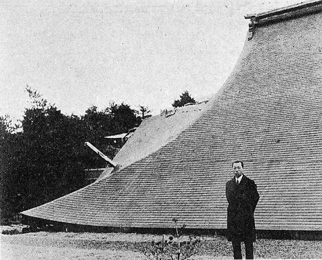
昭和五年（1930年）
伊豆地震調査当時の著者。後ろの倒潰した建物は箱根塔ヶ島離宮、屋根を貫いて柱が突き出している。
伊豆地震調査当時の著者。後ろの倒潰した建物は箱根塔ヶ島離宮、屋根を貫いて柱が突き出している。
［＃改ページ］
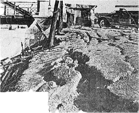
大正十二年（一九二三年）
関東大震災
横浜花園橋附近の亀裂関東大震災
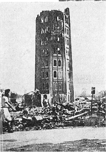
大正十二年（一九二三年）
関東大震災
浅草十二階関東大震災
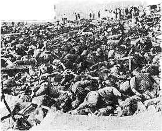
大正十二年（一九二三年）
関東大震災
被服廠の惨状関東大震災
［＃改ページ］
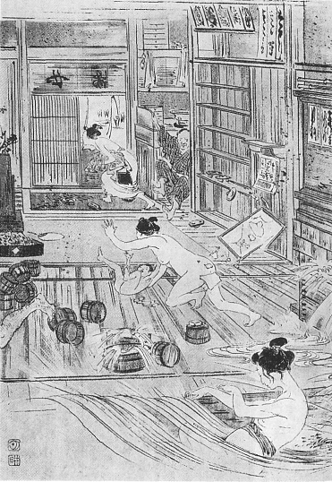
明治二十七年六月二十日東京地震の状況
東京大地震湯屋破損の図
東京大地震湯屋破損の図
［＃改ページ］
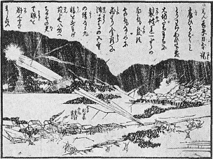
安政二年（一八五五年）
江戸地震
吉原堤から飛び出した火の玉江戸地震
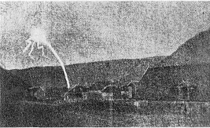
一九一一年十一月十六日
中欧の地震
ドイツのエビンゲンで中欧の地震
観察された火の玉
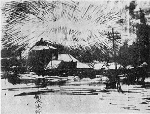
昭和五年（一九三〇年）
伊豆地震
静岡県賀茂郡稲生沢村から見た地震の発光伊豆地震
［＃改丁］
この本の著者は、今村明恒、寺田寅彦両先生ご指導のもとに、多年日本地震史の研究に従事して来た。この本に書いてあることは、地震史研究の副産物とも言うべきものである。すなわち、昔の地震の記録におりおり見い出される記事から暗示を得て、地震と深い関係がありそうに見えて、しかも今まで学者が手をつけなかった特殊の自然現象について、少しばかり調べて見た結果が通俗的に記されてある。
この本に書いてある自然現象は、いずれも見かけ上奇怪きわまるもので、したがって正統派の地震学者からは、あるいは毛ぎらいされ、あるいは余り関心をもたれない性質のものである。しかし、ある人が言ったように、「自然現象は自然の言葉である。自然の言葉でわれわれの研究に価しないものは一つもない」はずである。
著者がこれらの現象を研究対象として取り上げたのは、決して物好きからではない。またある人によって非難されたように一時の思いつきからでもない。いまだ解読されない自然の言葉のほんの一部でも明らかにしたいと言う念願からであったことを、公言してはばからない。
しかし、著者は前に記したごとく地震史の一研究家であって、物理学者でも生物学者でもない。したがって著者の調査研究がはなはだ不完全不徹底であることは、著者自身がもっともよく認めている。
要するに、著者は荒地を開墾して種子を蒔いたところである。その種子は、将来すぐれた科学者によって育成されるならば、かならず立派な実を結ぶであろう。
「地震雑筆」の中に収めた五篇の随筆は、「今村明恒先生素描」をのぞき、一度雑誌に発表したものであるが、この本に収めるに当たって全部書き改めた。記事の重複をさけるため、またある場合には紙数に制限されて思うように書けなかったためである。
この本をまとめるに当たって、著者は出来る限り平易に、また出来る限り肩のこらぬようにと心がけたが、はたしてその意図がどれほど実現されたか、心もとなく思うのである。
昭和三十一年八月
暑さと病気になやみながら
著者
［＃改丁］［＃ページの左右中央］
第一部――地震なまず
［＃改ページ］
昔の人は地下に住んでいる大鯰が体を動かすと地震が起こると考えていた。安政二年の江戸大地震の後に出版された錦画には鯰の画が沢山かいてある。「昔の人」と言ったが、地震を鯰のしわざと考えるようになったのは、昔は昔でも大昔ではなさそうである。
静岡県加茂郡松崎のある寺で唐紙を張りかえた時、
茨城県
右の要石の伝説はアイヌの神話によく似ている。地下に大きな魚がいて、その魚が多量の水を吐き出すと津浪が起こるという。地震と津浪の違いはあるが、魚のしわざとする点でよく似ている。
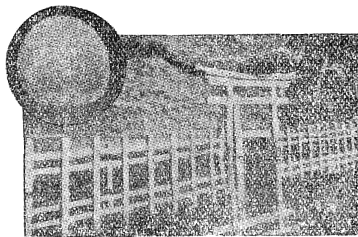
鹿島の要石
元禄三年（西暦一六九〇）に日本に来て、同五年に帰国したドイツ人ケムプヘルは、「日本記事」という著書の中に、「日本には地震が非常に多い。日本人の地震を恐れることはちょうどヨーロッパ人が雷を恐れるのに似ている。地震は大きな鯨が地下を這い歩くために起こるのだと、日本人は言っている」と書いてある。多分ケンプヘルは地震を起こす怪物はこれだと言って示された大鯰の画を見て、てっきり鯨だと思ったのであろう。体は大きいし色は真黒だから鯨と思ったのも無理はない。もし私の想像が当たっているとすれば、元禄ごろにすでに地震鯰の俗説が行われていたことが推測される。
地震研究所の二代目の所長であった石本巳四雄博士がもっと年代の古いものを発見された。それは意外にも芭蕉の俳諧だったのである。次に石本博士の「地震と芭蕉」という文の一節をかかげる。
「古来地震に関した歌、俳句類の極めて少ない事は不審に堪えぬ事であるが、俳聖芭蕉も同じく地震には縁遠い方といわなければならない。ただし芭蕉も寛文二年五月朔日の近江大地震には、伊賀の上野で遭っているはずであり、年表によると、当時芭蕉は十九歳であるからおそらく感傷的の眼をもって倒れ家、土塀の崩れ等を打ち眺めたことであろう。この地震はおそらく芭蕉の貴重な体験として、一生の間幾度か思い出し、小地震に出あうごとにその追憶を新たになしたとも想像出来る。もしそうであるならば、彼の多くの俳諧の中に地震に関する句が二、三はあってもよいようである。もとより地震は俳味に通ずる事の少ないために顧みられなかったと言えばそれまでである。ともあれ芭蕉生涯の作中、江戸三吟（延宝六年）の中に次の句を見い出す事はせめてもの心遣りであろう。
寂滅の貝ふき立る初嵐 似春
石こづめなる山本の雲 桃青
大地震つづいて竜やのぼるらん 似春
長十丈の鯰なりけり 桃青
石こづめなる山本の雲 桃青
大地震つづいて竜やのぼるらん 似春
長十丈の鯰なりけり 桃青
似春によって地震が余りに美化され過ぎたのを、芭蕉は龍を鯰に見立てて諧謔化したわけである。（中略）
なお地震と言う文字は直接句の中には見出せないが、延宝四年の百韻（種彦校合江戸両吟集）の中に、
なお地震と言う文字は直接句の中には見出せないが、延宝四年の百韻（種彦校合江戸両吟集）の中に、
瀬戸の土菎輪際 をほりぬきて 信章
弁才天に鯰ささぐる 桃青
弁才天に鯰ささぐる 桃青
とあるは、当時地下深い所には鯰が住んでいると考えていた証拠ともなるであろう。」

鎌倉時代の暦にある地震虫
延宝四年は西暦一六七六年であるから、石本博士のお蔭で、地震鯰の俗説を十七世紀後半まで追跡することが出来た。しかし十二世紀の地震虫と十七世紀の地震鯰の間には約五百年の空白がある。この五百年の間に地震虫がいつどうして鯰に変わったか、この点は私には現在のところ全くわからない。
鯰が［＃「鯰が」はママ］地震を起こすなどと言う馬鹿げた事を信じる者は今日一人もない。しかし地震と鯰とは全く無関係かと言うと、あながちそうも言われないのであって、安政二年の十月二日の江戸大地震の状況を書いた「安政見聞誌」と言う本に、こう言う話が出ている。
本所永倉町に篠崎某と言う人がいる。魚を取る事が好きで、毎晩川へ出掛けた。二日の夜も
事の真偽は保証致しかねるが、「安政見聞誌」は相当に信用の出来る本だから、おそらくでたらめではなかろうと思われる。しかし昔の話は信用しかねると言う人もあろうから、近年の地震の時の例をあげて見る。
大正十二年九月一日の関東地震の前日、木下成太郎氏が赤司文部次官とある相談をしていた。何分にも残暑がひどいので、向島の
その後岸浪静山という画家にこの話をすると、静山氏は帝展に出品する鯰の画の参考に二、三匹の大鯰をたらいに飼って置いたが、これも跳ね廻って困ったという話だった。
なお一つの例を加えると、当時文部省建築課長であった柴垣鼎太郎氏は、同じ地震の前日鵠沼海岸のある池で投網を試みると、取れるわ取れるわ、一尺くらいの鯰がバケツに三杯も取れたということである。
大正十二年の関東地震の直後に、「日比谷公園の池に鯰を飼っておいた方が、地震学者に頼るより確かかも知れない」と悪口を書いた新聞があった。これはもとより新聞記者の冗談だが、それからわずか数年の後に、鯰と地震の関係についての斬新奇抜な一大発見が、しかも日本の学者によってなされたのは、実に愉快なことであった。その学者というのは東北大学の畑井新喜司博士であった。
畑井博士の鯰に関する研究を、博士自身の筆をかりて、次に紹介することにする。
「日本には昔から『地震鯰』の俗説が流布されております。この俗説の由来及びいつごろからそれが流布したかについては、私は一向知りませんが、しかしながら鯰の異常な動作から大地震を予知したり、また大震の起こった後に、鯰の動作が地震前に変であった事が思い出されたというような記事が相当に多いのであります。」
「しかし一般からも、また特に科学者からは、地震鯰の俗説は、根も葉もない笑い話として取り扱われ、結局鯰は地震舞台の道化役者として、絵草紙の紙面を飾るに過ぎませんでした。伝書鳩の動作には感服し、また地震前のキジの鳴き声に頭をひねる学者もあるらしいのに、鯰だけ笑い草にされるのは、ちょっと不思議にも思われます。果たして地震鯰の伝説は取るに足らない迷信であるか、それとも鯰が地震の前にせっかく暗示してくれている骨折りを笑いと拍手に埋没しているのではないでしょうか。私は偶然の関係から、その点を調査する機会に接しました。ところが調査が進むにつれ、地震鯰の伝説は、決して全然根拠のない迷信と同一視することが出来ないばかりか、むしろ今更のように古人の観察眼の高いのに驚かされたのであります。」
「地震の際、鯰が如何なる動作を示すかを知らんとする目的をもって、私は阿部襄氏と共に浅虫臨海実験所構内の全く孤立した四坪ばかりの建物の中で観察を試みました。まず一つの水槽に二匹または三匹の鯰を入れ、水槽の底には泥土を入れ、水草を植えつけ、出来るだけ自然の状態に近い状態で飼育しました。」
「観察しましたところ、はじめ想像したように地震の直前直後において、水面に浮かび又は泳ぎ廻るようなことは見受けませんでした。しかし地震の十五、六時間前に水槽をのせてある机の表面に、人差指の曲がり角で軽い響きを与えますと、鯰はその響きに応じて直ちに体を動かすか、また時には居所から浮かび上がり泳ぎ廻ります。しかしこれに反して幾時間かの後に地震の起こらない時は、同じ響きに対して何らの反応をも示さないことを確かめました。」
「以上の観察は果たして鯰が地震前に示す不変の反応か否かを確かめるため昭和六年五十倍の地震計をすえつけ、組織的に観察を行う計画を定めたのであります。」
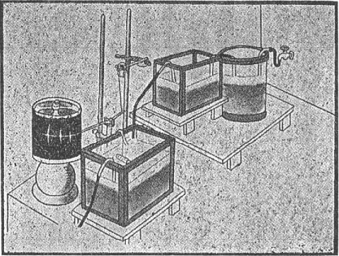
鯰の実験装置（畑井博士原図）
「かくして鯰の反応を日に三回ずつ観察記録し、同時に地震計の記録と比較しましたところ、敏感反応後十五時間以内には、地震が地震計に記録され、一日三回とも鈍感反応の場合には、十五時間以内に地震の起こらない事が確実となりました。そこで同年十二月十日から臨海実験所の構内に『十五時間以内に地震あるべし』または『十五時間以内に地震なし』と掲示して、翌朝地震計の記録と比較しましたところ、予報適中率がいちじるしく高く、鯰の敏感度と地震との間には何らかの密接な因果的関係があるものの如く、決して偶然の適中とは考えることが出来ないようになりました。とにかく、地震が記録される十五時間も前に、すでに我々人類の知覚しがたい、また五十倍の地震計に記録を止めないほどの微細な変化が、鯰の感覚神経を有効に刺戟したのを示したのであります。」
「しかし、もう少し正確に、何時間前に鯰が地震の起こることを予知し得るかを知るために、さし当たり、鯰の敏感後何時間後に、最も多く地震が記録されるかを調べて見たのですが、地震の最大数は、鯰の敏感後八時間目に起こる場合が最も多数であります。この事実から見ますと、浅虫地方では、地震の起こる八時間前に、すでに鯰が何物かの刺戟を感じていると言い得るのであります。」
「反応の強弱は必ずしも地震の振幅の大小に比例せず、むしろ震源地の距離に比例するようであります。故にたとえ震源地で強震であっても、もし震源地と浅虫との距離が余り遠い場合には鯰の反応が弱く、これに反してたとえ微震であっても、震源地が近い時はいちじるしい反応を示します。振幅の大きい地震で遠距離に震源地を有する地震は、概して鯰の敏感直後または短時間に起こる場合が多く、近距離に震源地のある場合には、弱震といえども数時間前から鯰の反応がいちじるしくなります。」
「鯰が一ミクロアンペア程度の電流を知覚し、しかもその微量の電流に対し明白な反応を示すこと、及び鯰が水底に棲息している事から考えれば、地震の起こる数時間前に鯰の感受し得るものは、おそらく地電流の変化ではないかと想像するに難くありません。そこで鯰を入れてある水槽の中の電圧の変化を調べて見ました。」
「電圧の差は一時間ごとに昼夜にわたって観測し、同時に鯰の敏感度も一時間ごとに試みましたが、この実験は二週間で打ち切り、その後は写真装置で電圧の変化を記録しています。二週間にわたって行った結果を見ると、鯰が敏感を示す場合は、鯰を入れた水槽内の電圧の大きい時に相当しますが、しかし電圧の最高の時に常に敏感を示すのではなく、むしろ電圧が急に降りつつある時、又は急に昇るような時に敏感を示すようです。要するに鯰の反応は地電流の急激な変化に関係があるのではないかと推測されます。」
「以上述べましたように、地震の起こる数時間前に、鯰はすでに何ものかを感受していることは疑うことの出来ない事実でありまして、私どもは未だ鯰の感受したのは何物であるかを明白にすることの出来なかったのは遺憾とするところですが、少なくとも地電流の電圧の変化もその一つの原因であると言えるようであります。たとえその感受物の何であるかを明言出来なくても、我々人類の全く感受しがたい何物かを鯰が感受し得ることは事実であって、しかもこのような感受力は、おそらく鯰において特に発達しているのではないかと思われます。」
「東洋特に日本においては、古来鯰の寝返りによって地震が起こると称せられていますが、これは普通の迷信とは趣きを異にし、むしろ大震の起こる数時間又は数日前に、何らかの刺戟を感受し、平常泥中に棲息する鯰も水面近くに出現した場合が多くあるのを、多年の観察によって注意するに至り、その結果として鯰と地震とが関係づけられるようになったのではないかと考えられます。おそらく鯰以外にも、地震の前に敏感になる魚類はあるだろうと想像されますが、実際調査した後でなければ、何とも申し上げるわけには参りません。」
以上は畑井博士が「改造」に寄稿されたものの大要だが、省略した部分の方が多かったので、博士のご研究を十分に伝えられなかったかも知れない。博士の海容を願う次第である。
［＃改ページ］
鯰と地震の関係を研究した畑井博士によると、鯰以外の魚類にも地震に先立って敏感になるものがあるかも知れないと言う。そのような魚類は確かにあるらしい。と言うのは、鯰以外の魚類が地震の発現する前に平素と異なる行動を示した例が、筆者の手許に集まっているだけでも少なくないからである。
この問題は最近に至るまで、少なくとも日本においては、学者の注意するところとならなかった。雉と地震の関係については、
その後畑井博士によって前記の鯰の研究が発表され、昭和八年には末広恭雄博士の重要な研究が発表された。この事は後に詳しく記す機会があるであろう。また昭和十四年には今村博士が「男鹿地震と海水及び魚族の異常状況」と題する論文を発表するなど、ようやくこの方面に学者が注意を払うようになってきた。
地震の起こる前に観察された魚類の異常行動の例を集めて調べて見ると、前記の安政・大正両地震の鯰をも含めて、大体次の四つの場合に分類することが出来るようである。
（１） 地震の前に平素姿をみせない魚が現れる。
（２） 地震の前に魚が水面に群がり、またさかんに跳ねる。
（３） 地震の前に多くの魚が岸の近くに集まる。
（４） 地震の前に魚類が全く姿をかくす。
材料の増加にともなって多少の変更を余儀なくされるかも知れないが、現在まで集まった材料に基づいて分類すると、大体右の如くなる。以下順を追うて記すことにする。（２） 地震の前に魚が水面に群がり、またさかんに跳ねる。
（３） 地震の前に多くの魚が岸の近くに集まる。
（４） 地震の前に魚類が全く姿をかくす。
（１） タコ坊主上陸（平素姿を見せぬ魚が現れる）
明治二十四年十月二十八日濃尾大地震の前に、愛知県明治二十九年六月十五日三陸大津浪の前に、同地方の海岸にウナギがおびただしく集まり中には一人で二百匹以上取った人もあった。鳥までが砂を掘ってウナギを食った。昼間も体を半分くらい穴から突き出していた（畑井博士その他による）。
安政三年七月二十三日青森県東方沖から発した地震にともなった津浪の前にも、多くのウナギが海岸に寄って来た（伊木常誠、三陸地方津浪実況取調報告、山奈宗真、岩手県沿岸大海嘯取調書、その他）。
大正十二年九月一日関東大地震の前に、ベルギー大使が葉山の海岸で、深海魚らしい赤い透明な魚が海面に浮かんでいるのを目撃した（中村左衛門太郎、関東大震災調査報告）。
同じ地震の前に、伊豆の漁師が「シゲ」と言う深海に棲む魚が浮き上がったのを見たと言う。この事をある水産技師に話したら、それはスケトウダラでしょうと言うことであった（中村左衛門太郎、地震）。
昭和二年三月七日丹後地震の前に、京都府
昭和八年三月三日の三陸津浪の前に、明治二十九年の津浪の場合と同じく多数のウナギが穴から出て這い廻り、子供でも手取りにした（三陸地方各地からの報告）。
同じ津浪の前にアワビが浅所に移動した（畑井博士、田中館秀三理学士、その他による）。アワビは魚類ではないが、魚屋で売っているからお相伴の意味で加えておく。
これも昭和八年の津浪の時のこと、津浪の数日前に、宮城県
青森県八戸市字金浜の岸で、同じ津浪の前にサバが釣れた。こんな岸でサバが釣れたことは今回が始めてだと言うことである（八戸市金浜分教場主任報）。
同じく昭和八年三陸津浪の十五、六日前に、岩手県
昭和八年の三陸津浪の時には、魚類学者の末広恭雄博士によって重要な事実が発見された。この津浪をひき起こした地震は三月三日午前二時三十分ごろに発したのであったが、その地震が発してから約四時間三十分後、すなわち三月三日午前七時ごろ、神奈川県小田原海岸の波打際で、クモ網で一匹の珍しい魚が捕まえられたのである。その魚はネミクチス・アヴォセックといい、平素は二千メートル以上の深海にすんでいて、きわめてまれに採集される魚だと言うことが判明した。末広博士によると、この魚が深海から波打際まで泳いで来たとすれば、地震の起こる前に棲息場所を去っていなければならない。多分地震が地震計や人体に感じる前に、震源域に何らかの変化が生じ、その刺戟を魚が感受して、遠い遠い海面まで逃げて来たのであろう。右のように解釈するのが最も合理的だと言うことである。
末広恭雄博士の他の重要な発見は、プランクトンに関するものであった。三月三日すなわち三陸津浪を惹き起こした地震の当日、農林省中央水産試験場で試験用に求めたマイワシの腹部が異常にふくれているのを、烱眼の末広博士は見のがさなかった。早速腹部を切開して消化管の内容を顕微鏡で調べて見ると、その大部分は底着性のプランクトンであった。マイワシは表層のプランクトンを餌とする魚である。そのマイワシの腹の中から底着性のプランクトンが発見されたことは実に珍しい現象である。しかも体長十五センチくらいのマイワシの消化管の内容は通例一グラム程度といわれているが、右のマイワシにあっては平均四・九グラムで、平常の約五倍の餌を摂取していたわけである。
右のマイワシは三月二日すなわち三陸津浪の前日の夕方、三崎近海で巻網で漁獲したことが確かめられた。巻網で漁獲されたことは、海の上層で捕まえられたことを意味する。ついで三月六日の夕方同じ水域で同じ方法で漁獲されたマイワシを手に入れ、それについて調べて見ると消化管内のプランクトンもまたその分量も平常と少しも違っていなかった。
この不可思議な現象をどう解釈したらよいであろうか。右の結果から見ると、地震の発現する前に多量の底着性プランクトンが浮かび上がったと考えなければならない。この場合も、前記のネミクチスと同じく、地震の起こる前に現れた何らかの刺戟によって、海底のプランクトンが上層に浮かび上がったと解釈するのが、最も無理のない解釈である。
宮城県北村小学校長斎藤荘次郎氏が筆者にあてて報告されたところによると、津浪の一両日前に同県石巻と
地震の前に深海のプランクトンが浮かび上がった他の一例がある。水産講習所の
プランクトンはこの辺で切り上げて、話を魚類の行動に戻そう。
昭和十四年五月一日男鹿地震の前に、平素は決して岸に近づくことのないマグロ（約四貫）が脇本村の海岸まで泳いで来て捕まえられた（今村明恒、男鹿地震と海水及び魚族の異常状況）。
また右の地震の前日から地震当日の午前まで（午前十時ごろまでらしいが確実でない）八森村でタコが続々酔ったようになって陸へ上がって来たと言う。男鹿中村でも地震の当日午前、タコが陸へ上がって来たそうである。この土地では平素はタコが取れないと言う（今村、前掲）。
以上はいずれも地震の前に平素姿を見せない魚類その他の動物が現れた例である。
（２） 魚が水面に群がり、さかんに跳ねる
前に記した安政二年の江戸、大正十二年の関東、この両地震の前に鯰があばれ又は跳ねたことは、この種類の異常行動のよい例であるが、この外にも類例が少なくない。明治二十一年七月十五日福島県の磐梯山が爆発して多くの死者を生じたが、爆発の少し前長瀬川の魚がおびただしく浮かんだので、村民がさきを争ってすくい取り、それを猪苗代の町へ売りに行ったため危難を免れたものが少なくなかった（地学雑誌第一集）。
明治三十一年八月十日福岡県糸島郡に強い地震があり同月十二日再び強震の襲う所となった。これは第一回の地震の時のことである。北崎村大字宮浦のある漁師が玄海沖で漁をしていると、大小の魚が波の上に跳び上がり跳ね廻るので不思議に思って見ている中、東南の方向からさざ波の進行して来るのが見えた。そうすると魚は忽ち姿を消して、それからは全然針にかからないので、釣りを止めて家に帰ると地震が起こったと言う（明治三十一年八月の大震概況）。
大正十二年八月三十一日即ち関東大地震の前日、蒲田の松竹撮影所に勤めている人が早仕舞いで家へ帰る途中、とある小さい池の水面に魚が躍ったり跳ねたりしている。不思議に思ったが元来殺生の好きな男であったから、早速撮影所へとって返し、道具部屋をあさって網を見つけ、居合わせた友人と共にその魚をすくって四斗樽に半分くらい取った。大喜びで家に帰り、その魚で晩酌を傾け、ぐっすり寝込んで翌日の大地震でようやく目を覚ましたと言う滑稽な話もある（科学画報大震災号）。
大正十二年九月一日午前七、八時ごろ、東京千住東町にある約五百坪の池の水面にコイやフナが浮き上がったので、附近の人々が争ってすくい取り、井戸水にいれておいたら、しばらくして元気を回復したと言う（谷江卯八郎報）。
右の二つの例は水中の酸素の欠乏が原因であったかも知れない。
京都府竹野郡
青森県
また同じ津浪の前に、青森県
大阪にモロコを水盤に飼っている人があった。そのモロコがある日異常にあばれて、やがて水盤の中央に集まってしまった。これは昭和十一年二月二十一日河内大和地震の前日のことである（紫雲荘、天災予知集）。
外国にもまた同様の例が見い出される。
中華民国六年（西暦一九一七年）七月三十一日雲南地震の数日前に、川の水が増し、無数の魚が岸に跳ね上がったと、童振藻の「雲南地震考」に書いてある。
またドイツのアルトミュールの地震の前に、多くの魚が水面上一インチくらい跳び上がったとジョン・ミルンはその論文の中に記載した。
（３） 多くの魚が岸の近くに集まる
明治二十九年三陸津浪の前に、多くのウナギが岸に寄って来たことは前に書いた。同じ津浪の前に、イワシが沢山三陸沿岸に来游して、時には塊になって網に入ることもあったと言われる、安政三年の津浪の前にも同様であったと言う（山奈宗真、前掲、風俗画報）。
大正十二年九月一日の関東地震の前に、千葉県鴨川辺ではセグロイワシが多獲されたが、地震の後はさっぱり漁獲がなくなった（水産講習所、激震地方における海洋と漁業）。
山梨県の山中湖は注入河を欠き、湖底湧泉のみによって涵養される湖沼であるが、大正十二年五、六月ごろから水が濁り始め、九月一日の大地震の後十月ごろにようやく旧に復した。そして九月一日の地震の前にフナが多獲されたそうである（中村左衛門太郎、前掲）。
これも同じく大正十二年の関東地震の前に、神奈川県の海岸にイワシが寄って来たと言い（科学画報大震災号）、また同県の川にイワシの大群が溯ったと言う（内田恵太郎博士報）。
大正十二年九月一日関東地震の直前に、千葉県館山湾内沖ノ島附近でカツオが非常に沢山釣れた。この時にはカツオが非常に沢山群がっていて、十余隻の漁船が見ている中に多数のカツオを釣り上げた。この有様を見た水産講習所の田子教授は、この附近はこんなにカツオの釣れる場所ではないのに不思議なことだと首をかしげたそうである（地学雑誌第三十六巻及び科学知識震災地踏査号）。
昭和八年の三陸津浪の前に、安政三年及び明治二十九年の津浪の場合と同じく、イワシが多獲された。三陸海岸地方では、津浪の前にイワシが大漁、津浪の後にイカが多獲されるので、「イワシでやられてイカで助かる」と言われているそうである（三陸沿岸各地よりの報告）。
右の三陸津浪の三時間ばかり前に、岩手県
宮古のある人の話によると、その附近では津浪の前にナメダガレイが多獲されたが、津浪後はとれなくなった。
秋田県水産課長岡正幸氏によると、昭和十四年五月一日の男鹿地震の前に、男鹿半島附近でマスの漁獲が多かった。マスは四月中旬以後は余り漁獲されないのが普通である（今村明恒、男鹿地震と海水及び魚族の異常状況）。
同じ地震の前に、男鹿半島北浦町の釣り漁船はタイ、アイナメ、アブラコの漁獲が多かった。平常は漁場によって漁獲物の種類が大体一定しているが、その日は色々の魚が同時にとれた（前に同じ）。
同じ地震の前日、八郎潟の岸に多くのコイやフナが群がり、釣ると幾らでも釣れ、森岳駅の駅長の如きは余りに釣れるので気味悪くなり、釣りを中止したほどであった。森岳・鶴川方面では手づかみで沢山の魚がとれたそうである（前に同じ）。
昭和二十一年十二月二十一日紀伊半島南西沖から発した南海道地震はきわめて大規模な地震であったが、この場合にも各地から異常漁獲が少なからず報告された。
三重県熊野灘沿岸では、地震の二、三日前からサヨリが多獲された（名古屋管区気象台調査）。
三重県
志摩半島沿岸では、地震の前にイセエビが多く漁獲され、また紀伊半島沿岸ではイカの漁獲が多かった（前に同じ）。
昭和二十三年六月二十八日福井地震の発震時は午後四時三十分ごろであったが、中央気象台本多技官によると、その日の午後九頭竜川で鮎釣りをした人が八十匹も釣り上げたと言う。平素は三十匹くらいしかとれないのだそうである。
最後に外国の例を二つあげよう。
西暦一〇五八年イタリーのナポリが大地震に襲われた時、その数時間前にナポリ湾の魚が群れをなして岸に集まったと言われる（服部捨太郎、地震の前兆）。
また西暦一七八三年のカラブリア地震の時には、地震に先んじて魚がシシリー島の海岸に群集したと伝えられている（横河民輔、地震）。
（４） 魚族逃亡（地震の前に魚類が全く姿をかくす）
地震の前に魚類が全然姿を消し、従って全然漁獲されなかった例もまた多い。愛知県
明治二十九年の三陸津浪の前にはタラやサメが針にかからなかった（畑井博士による）。
北海道の
大正三年の桜島噴火は一月十二日から始まったが、前触れの地震は二日前から始まり、十二日までに非常に多くの地震が記録された。十一日の午後に桜島の沖で糸を垂れても、一匹も釣れなかったそうである（桜島大爆震記）。
大正十二年の関東地震の数日前から相模湾で魚が釣れなくなったとは、当時湘南地方一帯に言い触らされていた（今村明恒、振動に対する動物の受感性について）。
大正十二年は漁業の成績のよくなかった年で、毎年相模湾の奥に回游して来るカツオやマグロが一度も来なかったと言われている（丸川久俊、震災地相模湾大陥没のあとをめぐりて）。
千葉県姉ヶ崎にある用水堀にいた多くのウナギが九月一日の地震の前に、ことごとくどこかへ逃げて、一匹もいなくなったそうである（東京日日新聞）。
大正十四年五月二十三日
岩手県宮古附近では、潜水器を使ってナマコをとっているが、昭和八年の三陸津浪の二、三日前から全くとれなくなった（岩手県水産学校金沢重兵衛氏報）。
昭和八年は余寒がきわめて厳しく、一面氷で閉ざれて［＃「閉ざれて」はママ］いたので、その氷を割ってウグイをとっていたが、津浪の前にはまるでとれなくなった（青森県
同じ津浪の数日前から、浮游魚群は姿をかくしてしまったと言われる（岩手県綾里小学校報）。
昭和十三年五月二十九日の北海道
同地の小学校長の話によると、屈斜路湖の
また別の人は、ノボリオンド山附近の川の石の間に、常にユゴイが沢山いるので、これをとろうとして、地震の前日正午少し過ぎに出掛けたが、一匹もいなかったということである（前に同じ）。
畑井博士は、地震の起こる前に鯰の敏感度が増すのは、地電流の変化が一つの原因であることを明らかにした。水槽に飼ってある魚の場合には、色々の実験をするのに都合がよいが、天然の状態にある魚について、異常行動の原因を、実験的に調べることは容易でない。
水槽の鯰が地電流の変化を感受して敏感になるとすれば、天然の状態にある鯰及びその他の魚類が、同じ原因によって、地震の前に騒いだりあばれたりすることは十分可能であるが、しかし、ここで一つ問題になるのは、魚類のすべての異常行動が地電流の変化によってひき起こされるかどうか、地電流以外の刺戟もあるのではないかと言うことである。
今村明恒博士は「振動に対する動物の受感性について」と言う論文の中に、次のように述べている。
「この現象の基因としては種々のことが想像し得られる。元来魚類は温度の変化にも敏感であって、もし彼等の好まない温度の潮流にでも出会うものなら、全く餌につかなくなるとは、よく経験された事実である。大地震又は噴火前には、海底又は湖底における地下水流出に異常を来すべきことも仮定し得られるから、このために魚が餌につかなくなるものと考え得られる。しかしながら、それよりももっと有り得べく思われるのは、人体に感じないで、ようやく微動計に記録されるほどの微震である。大正十二年九月一日大地震の前数日、湘南の沿岸地方においては、沖の方に鳴動を聞き、同時に魚が釣れなかったことも、明治四十三年七月二十五日有珠山噴火に先だち、およそ六日前から魚が餌につかなくなり、そうして更に三日経過して頻々たる小地震がようやく人体に感じ始めた事実など、この辺りの消息を物語るらしく思われる。また魚とは縁がないけれども、大地震前に人体に感ずるほどの前震はなくとも、微動計には数多の極微震が記録された例もある。大正三年三月十五日秋田県強首 大地震の時、震源地方では何人も前震を感じなかったけれども、およそ百キロの距離にある水沢臨時緯度観測所の百二十倍微動計は、地震前数日の間、数多の極微震を記録したのであって、しかもその記象と問題の大地震の余震記象とはほぼ相似であった。さればこれら極微震は当大地震の前震たりしと認めてよいであろう。」
「かく数多の例をたどって見ると、いわゆる大地震に対する動物の予感なるものは、実際は極めて微小な前震の感覚によるものと思われるのである。」
今村博士は、また「男鹿地震と海水及び魚族の異常状況」という論文の中で、魚類及びタコの異常行動について次のような解釈を試みた。「かく数多の例をたどって見ると、いわゆる大地震に対する動物の予感なるものは、実際は極めて微小な前震の感覚によるものと思われるのである。」
タコが酔ったようになって陸に上がって来たことについては、「本地震に前震なるものがともなったとすれば、それに感じてかような挙動をしたかも知れぬが、前震のあったことは知られていない。さすれば、海底における地下水（ガスにてもよし）の滲出もしくは迸出によって招来したものと見てよいであろう。この種の流体の放出は海水の温度あるいは塩分に異変を生じ、問題の生物をして己れの棲息個処に晏然としていることが困難になったためであろうが、ことに酔ったような状態になって上陸したところを見るとき、放出の流体にこのような結果を生ずる成分を含んでいたことが想像される。八郎潟の湖底から放出される流体の中には石油のあることが前から知られているが、八森或は男鹿の海底もまた同様であるかも知れぬ。現に半島内に油井がある。」
地震の前に湖底又は海底から地下水が、また特殊の場合には石油が、湧き出すことも、もちろんあり得ることである。しかし右のように、これでタコの陸上がりを説明するのはいかがであろう。可能ではあるが、これが唯一の解釈ではなさそうに思われる。
先年東京大学農学部構内にある防火用水池で、ある実験を行うために、鉄管をさし込んで、それをガンガン叩いてみた。そうすると、しばらくして一匹のウナギがフラフラになって浮かび上がった。これは地下水の湧出でも石油の滲出でもなく、全く鉄管の振動が水に伝わり、水の振動がウナギの神経系に影響を及ぼしたものに相違ない。前記のタコも地震前に発した地震計にも記録されない程度の微動でフラフラになったと考えられないこともない。
地震の前日、八郎潟でフナやコイが岸に寄って来たことも、今村博士は「湖底から流体を放出し、あるいはその中に石油までもまじっていたのではないかと思われる」といって、やはり地下水の刺戟を魚の異常行動の原因と考えた。
しかし一方に、地震の前日北浦で種々の魚類が混獲され、また岩館と八森でマスが平常の数倍も漁獲された事実については、「微細な地鳴りが局所に感じただけでも、そう言う結果になるのではなかろうか」と、微細な振動の効果で説明した。
寺田寅彦博士は、「地震と漁獲との関係」と言う論文で、駿河湾北端にある漁場の漁獲高の日々の変化と、伊豆及び駿河湾附近における地震の日々の頻度の変化との間の関係を調べ、昭和五年の伊豆における群生地震の日々の頻度と、重寺漁場における鰺の漁獲高と比べて見ると著しい相関が認められることその他を論じているが、その中に、この相関に関連して可能と考えられる三つの原因を挙げている。すなわち、（一）地震動又は地震動に関係ある、ある種の器械的刺戟を魚類が感受して、その結果何らかの事情で、魚類が漁場に接近するのかも知れない。（二）地震動が、魚類が餌とするプランクトンを多量に含む水層に影響を与え、間接的に魚類に影響を及ぼすのかもしれない。（三）地震のために地下水系が撹乱されそのために沿岸水の化学的性質が変わり、その結果魚類やプランクトンに間接に影響が及ぶかも知れない。
地震に先立って現れる、人体には感じない、現在使用されている微動計にも記録されぬ程度の微動によって、魚類が刺戟されることは多分事実であろう。地震の前に深層のプランクトンが表層に浮き上がることは、田子教授の観察、末広恭雄博士の研究によって明らかであるが、これも地震前に発する微動のためかも知れない。しかし実験的に証明しなければ、すべての人を納得させることは出来ない。現在のところでは推測の範囲を出ないのは残念である。
地震の前に地下水系が変化することもまた事実である。地震の前に井戸水が増し、減じ、変色し、又は臭気を帯びたと言う報告は沢山ある。大正十二年九月一日の大地震の場合には、その年の七月末から品川漁師町の井戸が涸れ、その附近の
自然界にはまだまだ未知の事実が沢山ある。地震の前に観察される魚類の異常行動の原因も、地電流、微動、地下水の変化だけではなく、まだ外の原因もないとは限らない。いな必ずあるであろう。右に記した所は現在可能と考えられる二、三の原因について述べただけである。
地震の起こる前に魚類があばれたり姿をかくしたりすることは、前に書いた通りだが、魚類以外の動物はどうであろうか。地震の前に異常な行動をすることはないかというと、そうでない。やはり魚類と同じく地震の前に平素とちがう行動をするようである。そういう例は日本にも少なくないが、欧米にも同様の例がある。他の動物の場合にも、魚類のそれと同じく色々な種類の行動が報告されている。
（１） 鼠と猫
日本には鼠が多い。鼠が全然いない家は少ないようである。動物学では二種の異なる動物が一所に仲よく生活することを共生といい、ヤドカリとイソギンチャクやナマコとその尻の穴の中にすんでいるカクレウオなどはその例である。日本人と鼠も共生だといっても過言ではないかも知れぬ。いや共生ではない。傍若無人にあばれまわる鼠の行動を見ると、鼠の家に人間が住まわせて貰っているような心地さえする。それはさておき地震の前に観察された鼠の異常行動には次のような例がある。
明治二十四年十月二十八日の濃尾大地震の時のことである。名古屋市針屋町に「ねずみ屋」という料理屋があった。この家は家号を「ねずみ屋」というだけあって、平素は白昼でも鼠が家の中を走り廻り、客のそばをも恐れる色もなく跳び歩いていたのに、地震の前日には、夜の更けるにつれて、鼠の数が減ったということである（加藤庸一、大地震の実況）。
明治二十九年八月三十一日の陸羽地震の前日、秋田県大山町ではイタチや鼠がしきりに走り廻るので、何事か起こるのではないかと心配していたら、地震が起こったという（両羽震災誌）。
大正十二年九月一日の関東大地震の前に、急に鼠が騒がなくなったので、変だなと思っていたらあの大地震が起こったといった人があった（佐久間ふさ、動物と地震）。
江戸品川に「土蔵相模」という貸座敷があった。高杉晋作などの維新の志士がよく出入りした家だそうである。この家の表左口に井戸があった。そのそばに勝手口があって残飯があるためか、いつも多くのドブネズミがうろうろしていた。誰も捕まえるものがないので人が来ても逃げもしなかったそうである。
大正時代に「相州楼」という名でこの店を経営していたＴという人がこのことを友人に話すと、それを伝え聞いたある新聞社が鼠の写真をとらせてくれといって来た。八月二十八日の朝のことである。ところがその日に限って鼠が一匹もいない。
おかしなことがあるものだとＴさんは品川の寄席に来た講談の神田伯竜師に話すと、伯竜師は「てっきり地震だぜ、安政の地震の時もそうだったというから」といったそうである。この予言は見事に適中した（朝日新聞）。
昭和八年三月三日の三陸津浪の前にも同じようなことがあった。
岩手県
岩手県
宮城県二俣村では津浪の一カ月前から鼠が不思議にいなくなり、津浪の後は再び家の中で物をかじる音がしたという（二俣村東福田分教場吉田氏報）。
鼠についてはまたこういう事実もある。
大正十二年の関東大地震の数日前のこと、神田のある家で大きい鼠取りを仕掛けておいたら、一度に四十匹も入って身動き出来ないでいたという話がある（報知新聞）。
ハンス・フォン・ヘンティッヒによると、鼠やモグラは地震の前に穴から出て、落ちつかぬ様子で辺りを歩き廻るというから、右の鼠も何ものかにおびえてフラフラ出て来て、鼠取りに入ってしまったのかも知れないと思われる。
猫に関しても地震の前に平素と異なる行動をしたことが報告されている。
明治二十四年濃尾大地震の直前、ある家の飼猫が戸外に出たがって騒ぐので、戸をあけてやるとあわてて出て行ったが、その後間もなく地震が起こったと「濃尾震誌」に記してある。
右の話は本当かも知れない。外国にも類例がある。ヘンティッヒの論文には、ロクリスの地震の時、震動の始まる前に必ず猫がないたが、その声は如何にも悩ましそうで聞いていられなかったと書いてある。
またＨ・Ｄ・ワーナーの「都市と地震」にはこういうことが書いてある。南米ヴェネズエラのカラカスの原住民は犬、猫、及び跳び鼠を飼っている。これらの動物は不安の様子で近づきつつある危険を知らせるからである（ミルン、下等動物に及ぼす地震の影響について）。
（２） 犬と猿
次には古来仲のわるい動物の代表のようにいわれている犬と猿について述べる。カラカスの原住民が、犬その他の動物を飼って地震予知に役立てることは前に記した。
ヘンティッヒは、犬や狐は地震の起こる前からそわそわして、吠えたり悲しそうななき方をするといっている。
一八五五年下エジプトの大地震の起こる十五分前からアレキサンドリアでは犬や馬がなき立てて市民は眠りをさまされたという（服部捨太郎、地震の前徴）。
明治二十四年十月二十八日濃尾大地震の場合には、数時間前からしきりに犬が吠えたそうである（加藤庸一、大地震の実況）。
ハミルトンという人も同じようなことを書いている。犬や豚は近づきつつある地震を、他の動物より明らかに示すというのである（ミルン、前掲）。
犬はとも角、見たところ遅鈍の如き豚が鋭い感受性をそなえているとは意外である。人は、いな、獣は見掛けによらぬものである。一八五七年のナポリ大地震を調査したマレットも、一般の獣類特に豚は地震の前十日ほどの間、悩ましげな、そして刻々不安がつのるような様子を示し、また檻に入れてあった八頭の豚がひどく興奮して犬のようにかみ合ったと記載している（ハンス・フォン・ヘンティッヒ、環境の変化に対する動物の反応）。
地震の前に猿の異常行動が観察された例は、筆者の知る限りでは欧米にはないようである。日本にもほとんどない。欧米には野性の猿がいない上に、日本のように猿の棲息している国でも野性の猿の行動を絶えず観察することは不可能といってもよいからであろう。やっとこさ見つけたのは左の一例である。
明治二十一年七月十五日福島県の磐梯山大爆発の四、五日前から大磐梯、小磐梯、櫛ヶ峯などにすんでいる猿がけたたましくなき叫んで騒がしかったので、上の湯、中の湯、下の湯、磐梯の湯などに湯治に来ていた人々は、これは必ず天変地異の前徴に相違ないと急いで仕度を調えて帰宅した人もあったそうである（時事新聞）。
地震前の猿の異常行動については、将来動物園に勤務する人々によって必ず面白い発見がなされるであろうことが期待される。
（３） 馬とロバ
丁度日露戦争の真最中であった明治三十八年六月二日、広島県南部に大地震が起こった。芸予地震と呼ばれているのがそれである。この時広島市に百五十頭ばかりの軍馬がつないであった。それらの軍馬が地震の襲来とともに、一斉に馬糞を放射したそうである。馬は賢い動物であるがまたきわめて驚きやすいことは、前記の馬糞の一斉放射によっても察せられる。驚きやすいということは、要するに感受性の鋭敏なるためであろう。従って地震の前から平素と異なる行動をすることが期待されるが、実際次に掲げるような例がある。
一八二二年のヴェネズエラ大地震の前に、カラカスで馬が廐舎から高地へ逃げ出したということである（ミルン、前掲）。
一八五一年八月十四日イタリーのメルフその他の地方に被害を生じた大地震の時に、平常とは違うなき声を発して、目前に迫っている地震を知らせた最初のものはロバであった（ヘンティッヒ、前掲）。
イギリスの地震学者デヴィソンの「近世地震の研究」の中に次の記事がのっている。
「一八八七年二月二十三日のリヴィエラ大地震の前夜、多くの都市村落の神経質の人々は何となく胸さわぎがし、鳥や獣は明らかに何ものかを感じているように見え、特に地震の数分前にはそれが一層いちじるしかった。馬は飼料に目もくれず、落ちつきがなく廐舎から逃げ出そうとし、犬はけたたましく吠え、鳥類は飛び廻って驚怖の叫びを発した。このような微候は［＃「微候は」はママ］イタリーの百三十カ所で注意された。」
デヴィソンは、この現象は疑いもなく人体に感じないきわめてかすかな震動によってひき起こされたのだといっている。明治二十一年一月十五日東京湾から発した地震は、相模、武蔵の一部に多少の被害を生じたのみで大したものではなかったが、地震のきわめてまれな国から来ていた京浜在住の外人の驚きは非常なものであった。この地震が契機となってジョン・ミルンその他の人々によって日本地震学会が創立され、これが日本における地震研究の基礎となったのだから、この地震はその意味において重要なものである。
この地震の時、横浜在住のジェームス・ビセットという人の所有していた
（４） さまざまの鳥
鳥類が地震の前に異常な行動をした例も少なくない。安政二年の江戸大地震の十日ばかり前から、利根川附近の村で、鶏が
明治二十九年八月三十一日
右はいずれも鶏が何ものかに刺戟されて恐怖した結果であろう。ヘンティッヒも、地震を感じる前に、鶏はそれを予覚して、集まって餌をついばんでいるものは逃げ散るし、バラバラになっていたものは一団になって隅にかくれてやかましく鳴き立てる、川へ跳び込むものさえあると記している。
鵞鳥も地震の起こる前にそれを知って水から上がりガアガア鳴き立てる。カラブリア地震の後、馬や驢馬や鵞鳥がなくごとに、震災地の人々はまた地震かと思って戸外に逃げ出したということである（ミルン、前掲）。
一八二二年と一八三五年のチリ大地震は共に津浪をともなったが、この二回の地震の起こる前に無数の海鳥が陸上に飛来して町の上を飛び廻ったという。この現象についてミルンは海底の擾乱のためといい、ヘンティッヒはそれに反対して瓦斯の発散のためと主張した。
天武天皇七年十二月二十二日にアトリが天をおおって西南から東北に移動したがこの月筑紫国に大地震が発したと「日本書紀」に［＃「「日本書紀」に」は底本では「「日本書記」に」］書いてある。アトリの大群の現れた土地が記してないが、文脈からいうとやはり筑紫であったようである。筑紫は現在の九州で、筑紫国の大地震は島原半島から発した地震であると推定される根拠がある。もしこの推定に誤りがないとすると、次に記す如く千二百四十二年後に再び同じ現象が繰り返されたことになるのである。
大正十一年十二月七日に福岡県朝倉郡高木村佐田の渓谷の上空に、アトリの大群が現れ行きつ戻りつして騒いだといわれるが、その翌日に島原半島から大地震が起こったのである（川口孫次郎、天変地異を予知する鳥類）。
大阪市立動物園長林氏の談話として大阪毎日に左の如き記事が掲載された。
「インコは地震の予言者です。数分なしい［＃「数分なしい」はママ］二時間くらい前に予覚します。聴覚が非常に鋭敏です。大正十四年の但馬地震などは十数時間前に知らせました。」
「鳩は地震の前に居場所をかえたがる。鳩小舎の中にいるものは飛び出すし、屋根の上にいるものは小舎に戻る。」とヘンティッヒが記載しているが、同じような例が日本にもある。
明治二十四年の濃尾地震の前夜のことであった。愛知県
明治二十九年の陸羽地震の前にはカラスその他の鳥が枝をはなれて飛び去ったり鳴き立てたりしたということである（秋田震災誌）。
燕は特に地震を予覚する鳥で、地震の前の晩には巣を捨てて屋根の下に非難場所を［＃「非難場所を」はママ］求めるとヘンティッヒは記している。
昭和八年三陸津浪の場合にも鳥類の異常行動が報告された。
岩手県
（５） 蛇と蛙
鼠、モグラ、トカゲ、蛇は地震の前に穴から出て、そわそわとあたりを歩き廻るとビュフォンがいったそうであるが、それは事実のようである。安政二年江戸大地震の発したのは旧暦の十月二日、太陽暦では十一月十一日であったが、その二日前に利根川下流の左岸にある立ツ崎、羽中などの村々では、ヤマカガシが穴から出て来た。しかし寒くて這い廻ることも出来なかったと、「利根川図誌」に書いてある。
明治二十一年磐梯山爆発の時には数日前から時々鳴動を発したといわれるが、多くの蛇が山麓の村に下って来て家の中を這い廻ったそうである（大塚専一、磐梯山噴火調査報告）。
大正三年の桜島噴火は一月十日から地震が頻発し、十二日に至って噴火が始まったのであるが、噴火の始まる前に蛇や蛙が山から下りて来たということである（桜島大爆震記）。
砂糖で名高い西インドのキューバ島では、蛇を飼育すると災難を免れるという迷信があって、蛇を飼う人が多い。一八五三年七月十五日のヴェネズエラ大地震の前に、飼ってある蛇がぞろぞろ広場へ逃げ出したと、ヘンティッヒの論文に書いてある。
以上の資料はその全部が真実とはいわれないかも知れない。あるいは誇張され、あるいは話を面白くするために尾鰭が附加されているかも知れない。それにもかかわらず内外の資料を比較して見ると、大体同じようなことが書いてある。まさか日本人と外国人とが相談して嘘を書いた訳ではないであろう。そうして見ると右に掲げたすべての資料がことごとく虚偽とは考えられないように思われる。
しかし資料に記されている動物の異常行動が地震と関係があるかどうかは別問題である。偶然に地震の前に動物の異常な行動が人々の注意をひいた場合もあるかも知れない。そういう場合も含まれているかも知れないが、しかし全部が偶然といい切ることも出来ないように思われる。
前に記した如く、地震の先ぶれとして現れる地電流の変化、極微動の発生、その他の物理的刺戟によって、魚類その他の動物が平常と異なる行動を示すことが可能と考えられるからには、本文に記載した多くの事実の全部を荒唐無稽として捨て去るべきではない。これらの事実が何らかの役に立つ時期が来るかも知れないと思うのである。
［＃改ページ］
大地震に際して一種の光が空中や地上に出現すると言ったら、大概の人は途方もないことを言う奴だと笑うかも知れない。しかし昔の大地震の記録には、発光を観察したという記事が少なからず見出されるのである。
それらの記事は荒唐無稽としてみだりに捨て去るべきものではない。昔の人がわざわざ嘘を書くこともあり得ないであろう。昔の人は科学知識はもっていなかったがかえってこれが幸いして、自分の観察した現象を、生かじりの知識で否定し去るようなことはなく、ありのままに書き残すことが出来たのである。地震の光などと言うことが、想像で書けるものではない。
多くの読者にとってあるいは迷惑であるかも知れないが、昔の記録に出ている地震の光の記事の主なるものを左に掲げることにする。
地震の光の日本における最古の記事は、「三代実録」に出ている貞観十一年（西暦八六九）陸奥の地震のそれであるが、この発光は津浪にともなったものの如く思われるので、津浪の発光を述べる場合に記すことにしたい。
正嘉元年（西暦一二五七）八月二十三日鎌倉に大地震があり、神社仏閣ことごとく潰れ、山崩れもあり、地割れから水を噴き出し、中下馬橋辺りでは、地割れから青い焔が出たと、「吾妻鏡」に書いてある。
元禄十六年（西暦一七〇三）十一月二十三日の関東大地震の後、毎夜江戸から南東に当たって電光のような光が見えたと、「甘露叢」にある。陰暦十一月二十三日は陽暦の十二月三十一日に当たるからこの光は電光とは考えられない。多分大地震の余震にともなった光であろうと想像される。
宝暦元年（西暦一七五一）四月二十六日越後高田大地震の直前に現れた光象については、橘南谿の「東遊記」に詳しく記されているので、左にそれを引用する。
「越後糸魚川と直江津との間に、名立 といふ駅あり。上名立下名立と二つに分かれ、家数も多く、家建 も大にして、此辺にては繁昌の所なり、上下ともに南に山を負いて、北海に臨みたる地なり。然るに今年より三十七年以前に、上名立のうしろの山二つに分かれて海中に崩れ入り、一駅の人馬鶏犬ことごとく海底に没入す。そのわれたる山の跡、今にも草木無く、真白にして壁のごとく立てり。余もこの度下名立に一宿して、所の人にその有りし事ども尋ぬるに皆々舌をふるわしていえるは、名立の駅は海辺のことなれば、総じて漁猟を家業とするに、その夜は風静かにして天気殊によろしくありしかば、一駅の者ども、夕暮れより船を催して鱈 、鰈 の類を釣りに出たり。鰈 の類は沖遠くにて釣ることなれば、名立を離るること八里も十里も出で、皆々釣り居たるに、ふと地方 の空を顧みれば、名立の方角と見えて、一面に赤くなり、夥しき火事と見ゆ。皆々大いに驚き、すわや我家の焼け失せぬらん、一刻も早く帰るべしと言うより、各 我一 と船を早めて家に帰りたるに、陸には何のかわりたることもなし。この近きあたりに火事ありしやと問えど、さらにその事なしというに、みなみな怪しみながら、まずまず目出度しなど言いつつ、囲炉裏の側に茶など飲みて居たりしに、時刻はようよう夜半過ぐるころなりしが、いずくともなく唯一つ大なる鉄砲を打ちたるごとき音聞こえしに、その跡はいかなりしや知るものなし。その時うしろの山二つにわれて、海に沈みしとぞ思わる。上名立の家は一軒も残らず。老少男女牛馬鶏犬までも、海中のみくずとなりしに、その中にただ一人、ある家の女房、木の枝にかかりながら波の上に浮かびて、命助かりぬ。ありしことども、みなこの女の物語にて、鉄砲のごとき音せしまでは覚えおりしが、その後はただ夢中のごとくにて、海に沈みしことも知らざりしとぞ、誠に不思議なるは、はじめの火事のごとく赤く見えしことなり。それゆえに、一駅の者ども残らず帰り集まりて死に失せしなり。もしこの事なくば、男子たるものは、大方釣りに出でたりしことなれば、いき残るべきに、一ツ所に集めて後崩れたりしは、誠に因果とや言うべき。あわれなることなりと語れり。」
右の火事の如き光象は、大地震の発現に先立って出現したので、その点においてこの記事は貴重な資料と言わねばならぬ。文化七年（西暦一八一〇）八月二十七日男鹿半島の大地震に先立って二十四日の日暮れから西北の方向に電光とは異なる光が現れ、海上の雲に反映して物凄かったと、「男鹿地震記」に書いてある。また二十六日、すなわち大地震の前夜には八時ごろから十時ごろまで、赤神山に幾千万の光り物が、
天保元年（西暦一八三〇）七月二日京都大地震の前夜には、空一面に光り、地面からも光が出て、昼のようだったと言う（京都地震見聞記）。
弘化四年（西暦一八四七）三月二十四日、善光寺大地震と呼ばれている信濃北部の大地震の場合には、いちじるしい光が多くの人々によって観察された。
この場合にも、地震の前に光を見たと言う人があった。須坂の陶器職人久兵衛は米子村で電光のような光を目撃し、まもなく地震になった（信州丁未茶談）。またある髪結いは、飯綱山の方に火の如き雲が出たので、怪しんで見詰めていると、その雲がくるくる廻って、消えると同時に山鳴りがして大地震になり、道路に揺り倒されたと言う（時雨の袖）。雲がくるくる廻転したと言うことは少々怪しいが、強烈な光を発する物体を見つめていると、廻転するように見えるのかも知れない。昭和五年の伊豆地震の時に、そういう例があった。
地震の時には、各地で電光のような光が観察された。松代藩の月番家老河原綱徳の「虫倉日記」には、
「大地震の時、強く稲妻の如く光りて鳴り、地震しけりと言う。この光は見たる者も見ざるものもあり。その後の光予も三度は見しが、稲妻に似て
電光に似た光だけではない、火の玉も飛び出した。前記の「信州丁未茶談」に、
「線内村［＃「線内村」はママ］辺りより川中島へ掛け、夜中大なる火の玉折々飛行し候を、足軽丸山熊太郎、田村九十郎たしかに見受候よし。」とある。また地震のあった晩、高田の辺りで、難波山から大釜ほどの光り物が飛び出したと、「見集録」に記してある。
この地震の時、岩倉山が崩壊して、犀川を二カ所で堰止めたが、その山崩れの時もいちじるしい光が見られた。「鎌原洞山地震記事」には、
「岩倉、藤倉の崩落したる時、安庭村明るくなり、屋の隅々まで昼の如く見えしとぞ」と書いてある。また前にも引用した「虫倉日記」には、
「磯田音門、二十七日に西山手を諭し廻りて後、岩倉山の抜場見分として行、安庭村に宿り百姓等と共に小屋の内に臥せしに、十匁玉の鉄砲打つ如くの音折々聞こえたり。鉄砲の音かと聞きしに、一昨夜抜覆りてより後、あの如く夜になれば聞こえ候と答えしとぞ、岩倉抜落ちたる跡より、陽気発出せしなるべし。また村の童らが、いま御奉行殿のおつむりの上へ、火の玉が落ちたと呼びけるを、音門ききてこれは火の玉にてはなし、かようなる大地震の揺るときは陽気というて地中より火の玉の如きもの出ることあり。更にこわき物になし、驚くべからずと諭せしとぞ。」とある。
この地震の時にはまた、地中から火焔が現れた。「鎌原洞山地震記事」に
「城下四、五町隔り往還より三、四町脇、田の中地震にて割れ、冷水出で、その水中にて青き火燃え候由、皆々見物に参り候。」とあり、「信州丁未茶談」には、
「また山辺には、地震に裂け候割れ目より、火気を吐き、乾き候芦藁等差出候えば、火燃え立ち候旨。」このような現象は、越後高田附近や信濃松本近傍でも見られたことが「虫倉日記」や「信州丁未茶談」に書いてある。
安政元年（西暦一八五四）六月十五日伊賀
安政元年十一月五日の南海道大地震の時わが国で始めて余震観測をした土佐藩士細川
安政二年（西暦一八五五）十月二日午後十時頃の江戸大地震の時には、顕著な光り物がところどころで観察された。
この地震の時にも、地震の前に光が観察された。
地震の少し前に、海（東京湾であろう）の方に四斗樽ほどの大きさの光り物が現れ、それが左右に分かれて、一つは房総の方へ、また一つは江戸の方へ飛んで行くように見えたがまもなく大地震になったと、斎藤月岑の「武江地動之記」に書いてある。この本には余りいかがわしい記事は掲げてないから、多分月岑自身が信用の出来る人から聞いたのであろう。
また地震のあった晩、行徳のあたりでは、地中から火が燃え出で、近寄ると見えず、その先に火が見えた。芝森元町の名主鈴木与右衛門も、この晩途中で地中から火の燃え出るのを見たと言われる（武江地動之記）。
地震の時の光の模様は、次の記事によって想像されるであろう。発光地点は一カ所ではなかったようである。
「右地震の節、東に当たり、電の如き光あらわれ、暫時にして消ゆる。」（地震並出火細見記）
「その時漁猟に出でて品川沖にありし人の話に、江戸の方に当たり、電の如く三、四カ所見えけれど、尋常の稲妻なりと思いなしてありけるが、後に聞けば地震なり。」（安政見聞録）
「山王町なる髪結い何がし、外に十、九人相知る友をかたらひ、二日の夕海上へ漁猟に出でたりしが、地震の前東北の方一時に明るくなり、おのおの着たる衣服の染色模様まで鮮やかに見え分かるほどなりしが、やがて海底より鳴り渡りて、船底へ砂利を打ち当てるように聞こえて、恐ろしかりしが、また一団の火炎空中を鳴り渡りしかば、いよいよ恐ろしくなりて、船を陸へつけしが、はや地震の後にて云々。」（武江地動之記）
着物の染色模様まで明瞭に分かるほどの強烈な光を発したのは、「地震の前」でなくて、「地震の発した時」であろう。船中だから地震が分からなかったのである。船底へ砂利が当たるように感じたのはシーショックと思われる。
「この度の地震の時、地下より火気を発す。余が友下谷池の端に居れり。すは地震よと言ふほどに、急ぎ外のかたへ立ち出ずるに、亥子の方の方に当たりて大いに光を発す。ただし電の如くならず、その幅何十丈ともはかりがたきが、一面に火気たちて
この記事は、地震にともなう発光現象をよく描写している。
「新吉原日本堤震い動くこと、とりわけおびただしく、大地たちまちに裂け破れて、一道の白気発す。その気斜めに飛び去り、金竜山浅草寺の五重の塔なる九輪を打ち曲げ散じて、八方へ散る。その光眼を射てすさまじと言う。」（江戸大地震末代噺の種）
五重塔の九輪の曲がったことは事実だが、それは振動のためで、その点についてこの記事は誤っている。
空中を飛ぶ火の玉であったろうと想像される記事もある。
「友人山田文三郎、号を重山と言う。……この日要用ありて品川宿に至り、夜に入りて帰りける途中、芝神明前を過ぐる時あたまの上よりグーンと言う音響きけるゆえ、何心なく振り向き見れば、張り子の大あたまほどの坊主の首、火のついたる木をくわえて、東より西の方へ飛び行きしとぞ。体半身現れて下の方は見えざる由。重山これを見て面色土の如くになり、道を急ぎける折から、例の大地動揺しけるゆえ、一歩も進むこと能はず、二、三度揺り倒されしが、ようやくにして起き上がりたるゆえ、両側の町家残らず家根瓦を打ち落され、土蔵の壁をふるわれけるが、その音あたかも大山の崩るるが如しとの話なり。この怪異は浅草駒形辺りの人々両三人同刻に見たりと言うことを話すものあり。」（時雨の袖）
以上は昔の記録の中に見出される地震の光に関する記事の中から、主要なものを選び出して掲げたのである。これを見ても地震にともなう発光は、昔から一般の人の注意をひいていたことが察せられる。
昔の人々がよい加減のでたらめを書き残したのでない証拠に、明治以後の記録にも少なからず同様の記事が見出されるのである。資料の一部をここにあげることにする。
明治二十四年十月二十八日濃尾大地震の前夜、愛知県中島郡三宅村で、西方に電光の如き光がしばしば観察され、また津島町にある海東郡役所の報告によると、同夜東方に甚しく電光が見えたと言う（愛知県震災報告）。
明治四十二年八月十四日姉川地震（江濃地震とも言う）の時、伊吹山西側にある「白崩れ」及びその南に続く「大富崩れ」が大いに崩壊して、砂煙天をおおい、一時暗黒になったが、その時光を発したことは土地の人々がみな認めたと言う（小藤文次郎、地質学上の見地による江濃地震）。
大正六年五月十八日駿河遠江の地震の場合には、地震と同時に、静岡市の北方二里の龍爪山に数丈の大火柱が立ったと言われる（東京朝日新聞）。
大正七年十一月十一日大町地震の時にも発光が観察された。坪井誠太郎博士は言う。大町の南方約二里にある池田町の人々の話によると、第二回地震の際、西方信飛山中に発光を見たと言うことである（大町地震調査概報）。この地震は午前二時五十八分と午後四時三分と二回あり、後者の方がいっそう強かった。
大正十二年九月一日関東大地震の時、伊豆真鶴の漁夫が房州洲ノ崎沖で、激震ごとに電光を見たと言う噂もある（三雲康臣氏報）。
報知新聞の記事によると、九月一、二日頃相模湾で、海中から数本の火柱が立ったと、房州の漁夫がジャッガー博士に話したそうである。ジャッガー博士はハワイの火山観測所長で、地震の調査に来朝したのである。
右の地震の時、余震にともなって東京湾口で発光が見られたことは、中村左衛門太郎博士によって記載された。
大正十三年一月十五日丹沢山地震の時には、中央気象台の観測者は東京より西方の空に発光を見、またある漁夫は、国府津に近い海上からこの光をみたが、この光で海岸の松の枝まで見えた。この光は丹沢山の南山腹に見えたと言う。これも中村博士によって記載された処である。
昭和二年三月七日丹後地震の場合にも、若干の報告がある。
中村左衛門太郎博士によると、
京都市の斎藤謙造氏は右の地震に関する興味ある報告を筆者に寄せた。要点だけ摘録すると、
「時あたかも私は神戸より電車にて大阪へ参る途中、何心なく電車の窓より六甲武庫連山の天空を眺めしに、この山脈の北方中空に、遠火事の焔とも言うべきか、かっと一面に照り渡り、平生においては見馴れざる色彩を帯び居り申し候。珍しき現象かなと、ややしばらく眼を放たず見入り候中に、電車は大阪に着し下車致し候。その後二十分か三十分くらいを経て、かの震災を耳に致し、想いをかの現象に馳せて、奇異の念に堪えざりしものに候。」
明治以前、明治以後にわたって、地震の光に関する記載は、ここに揚げただけでも決して少なくはない。それにもかかわらず、この現象の実在を信ずる学者がほとんど一人もいなかったのである。変なものである。古今の大地震の記録に少なからず見出される発光現象なるものは、断じて虚偽でも幻覚でもあるまいと考えたのが、大正五、六年のころであった。しかしうかつに口外は出来ない。もしこのような事をうっかり口をすべらせたら、狂人扱いされる可能性が多分にあった。そこでこの問題に関する限り、約十五年間沈黙を守って、資料の蓄積に努めて来た。
昭和五年十一月二十六日午前四時ごろ、伊豆半島の北部から大地震が起こった、［＃「起こった、」はママ］この時、所々で発光が観察されたことが判明したので、好機いっすべからずと、思い切って地震研究所の末広所長に、この現象を調査する許可を求めた（当時筆者は地震研究所で、寺田寅彦博士の指導を受けて日本地震史の調査に従事していた。と言うと立派に聞こえるかも知れないが、実は哀れなる無給の嘱託であった）。所長は頑として筆者の希望を許してくれない。あれは送電線のスパークだ、あんなものを調べても仕様があるまいと言うのである。当時としては所長の言う処は決して無理ではなかった。しかし筆者は、ここで負けては一大事と、古今の例をかつぎ出して、調査の必要をまくしたてた。所長もとうとう

理学博士 寺田寅彦
（津田青楓写生）
（津田青楓写生）
幸い寺田博士は、筆者の調査研究に多大の興味を感じて、熱心に指導して下さり、また藤原咲平博士その他の方々からも、陰に陽に援助と激励とを与えられたことは、筆者の感謝に堪えないところであった。これらの諸先生の後援がなかったら、ガリレオと同じ運命に陥ったであろうことは火を見るよりも明らかであった。
筆者が地震の光の調査に取りかかる二十年前に、この現象を詳細に調査して、その結果をイタリー地震学会彙報に発表した学者のあったことを、寺田博士から教示された。それはイタリーのイグナツィーオ・ガリーという人である。ガリーの論文は中々大部である。しかもそれは、多くの日本人にとって
寺田博士ご自身も、英仏独語は言うに及ばす［＃「及ばす」はママ］、後にはロシヤ後まで［＃「ロシヤ後まで」はママ］自由に読みこなしたが、イタリー語は不得手だった。しかしガリーの論文は是非とも参考に供さなければならぬ。博士はこの論文を読むために、独習書によってイタリー語の勉強を始めた。そしてわずか一週間で読書にさしつかえない程度の力がついた。そこで直ちにガリーの大部な論文を読破して、詳細なノートを作製された。
昭和六年一月四日、筆者はこの日を終生忘れることが出来ない。場所は東京会館のロビー、先生は膝の上に右のノートを開き、それを見ながらガリーの論文の内容を、イタリー語の知識のない筆者に、じゅんじゅんと話して下さるのであった。筆者は一言半句も聞き洩らすまいと体中を耳にして聞き入った。当時先生も筆者も、この問題に関して真剣そのものであった。ガリーの論文は筆者の調査にどのくらい役立ったかわからない。
（１） タシツスからガリーまで
地震にともなう発光現象の最も古い記事は、ローマの歴史家タシツスの「年代記」の中に出ているものであろう。西暦十七年小アジアの大地震の時、十二の都市が破壊され、光がひらめいたと書いてある。この現象が、近世の学者によって始めて注意されたのは、西暦一七五〇年のことであった。この年にイギリスから北ヨーロッパにかけてたびたび地震があり、空中にも地上からも光が現れた。この事がロンドンの王立協会で問題になり、ウイリアム・スチュークレーという学者が、地表を流れる電流で、この現象を説明しようと試みた。
ついでＥ・クルーゲは、一八六一年に、「一八五〇―一八五七年に起こった地震の原因について」と題する論文の中に、発光現象に関する若干の報告を記載した。
グリースバッハは、一八六九年に、「一八六七―一八六八年の地震」を発表したが、その中でこの現象に言及している。一八六八年八月十三日ボリビア及びチリ大地震の時、チリのタクナその他の土地でしばらくの間空が輝きわたった。その光はアンデス山中の火山の噴火であろうと推測されたが、それは誤りであって、噴火はなかったのである。従って発光の原因を他に求めなければならないとて、山崩れや氷河の崩壊に際して光を発することを述べ、最後に八月十三日の発光は電気と関係のある現象だと言うプレッツナーの意見を参考にしたいと言い、またこのような発光は、流星によって生ずることも不可能ではないかも知れぬといっている。
一八九三年に出版されたルドルフ・ヘルネスの「地震学」には、次の記載が見い出される。地震の時又はその前後に、光が観察されたと言う報告が少なからずあるが、この現象は往々にして懐疑の眼をもって見られ、驚怖による幻覚と考えられた。しかしそれにしては報告の数が多すぎる。この発光が火山地震にともなうものなら理解に難くないが必ずしも火山地震に限らない。思うに地震にともなって現れる、電光の如き光や火球状の光は、多分電気作用に基づくものであろう。しかしこの問題に関して自分は十分な説明をするほどの経験がないからと言って、グリースバッハの論文を引用して代弁させ、そしてこれらの説明の試みに関する批判は必要がないと結んでいる。
Ｋ・フッテラーはこの現象の実在を認めない。彼は言う、地震に発光をともなうことは、まだ十分には知られていない、論争の余地がある。一八九六年一月二十二日の地震の時、五カ所で発光を目撃したと言う報告があるが、いずれも不確実で、ある程度まで錯覚に基づくことは確かである。
サイモンス気象学雑誌の一八九七年一月号に、一八九六年十二月十七日イングランドの地震の場合に観察された発光の報告十数例が掲載されているが、この現象に関する証拠は、地震と同時刻に雷雨があったと言う以上の証明にはならぬと書いてある。
一八九八年に刊行されたジョン・ミルンの「地震学」には、大地震の際に発光現象が観察されることはきわめて普通で、一六〇二年のカタニア、一七二七年のニューイングランド、一七五五年のリスボン、一八〇五年のナポリ、各地震の時に例があると書いている。彼は「岩石の摩擦にともなう発光を除き、地震と電気を結びつける仮説は全く支持しがたい」と言う処から見ると、ミルンは地震にともなう光象を摩擦発光と考えたらしい。
一九〇五年八月十七日ライプチッヒの地震の時、クレードナーが、「稲妻のような閃光」又は「瞬間的発光」に関する多数の信憑するに足る報告を蒐集したと言うことである。
以上の如く、色々の学者が様々な見解を発表しているが、特にこの現象を詳細に調査した最初の人は、イタリーのリッツォー教授であった。リッツォー教授は、一九〇五年九月八日カラブリア地震の時に観察された発光四十二例を蒐集して、これについて調査を試みた。彼は光を見た方向を記載してある五例の報告に基づいて、その方向がマレ・チレノの上で輻合することを発見した。また光の種類とその出現した時間については、次の如く分類した。
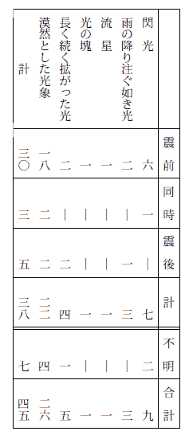
註 四十二例の資料が四十五になっているのは、二度見た例が三つあるからである。
一九〇六年八月十六日チリ中部の地震の時、空が異常な色を呈し、また放電が多かったという報告をサンチアゴのウィリアム・ゴーという人が、サイモンス気象学雑誌に寄せている。
一九〇九年に出版されたエドウイン・ヘンニッヒの「地震学」にこう書いてある。この現象は従来地震の研究上継子扱いをされてきた。この現象は、地震に附随する現象として、時に重要な暗示を与えることがある。しかるに従来この現象について充分な観察も行わずに否定して来たため、信憑するに足る報告や発表が少なかったのであるといっている。彼は九つの例を挙げて多少の考察を試みた末、この現象は今まで考えられた以上の価値があることは論をまたぬと結んでいる。
多分前記のリッツォーによって刺戟されたのであろうと想像されるが、リッツォー以上に多数の資料を菟集して［＃「菟集して」はママ］、それらについて検討を試みたのはイタリーのイグナツィーオ・ガリーであった。彼は古今の発光現象の資料百四十八例を集め、調査した結果を、「地震に際して観察せられる発光現象の蒐集及び分類」と題して、一九一〇年にイタリー地震学会彙報に発表した（前に記した寺田寅彦博士が苦心して読破したのは、この論文である）。
ガリーの調査の基礎となった資料は百四十八例に過ぎないが、彼の調査は綿密周到で、次に示す光の種類の分類の如きは、精密きわまると言って過言ではなく、筆者の蒐集した、ぼうだいな資料に記載してある光の種類が、ことごとくガリーの分類のいずれかに該当するのは驚くべきことである。
ガリーは光の種類を四大別し、更にそれを十三に細別した。
 漠然たる瞬間的の光
漠然たる瞬間的の光
（ａ） 閃光
（ｂ） 雨の降り注ぐ如き光
（ｃ） 細い光の帯
（ｂ） 雨の降り注ぐ如き光
（ｃ） 細い光の帯
 一定の形を有し且つ動く光体
一定の形を有し且つ動く光体
（ｄ） 火球
（ｅ） 火柱
（ｆ） 火の棒
（ｇ） ラッパ状の光
（ｅ） 火柱
（ｆ） 火の棒
（ｇ） ラッパ状の光
 輝ける焔及び輻射
輝ける焔及び輻射
（ｈ） 火焔
（ｉ） 小火焔
（ｊ） スパーク
（ｋ） 光る気
（ｉ） 小火焔
（ｊ） スパーク
（ｋ） 光る気
 空中及び雲の燐光
空中及び雲の燐光
（ｌ） 拡がった空の光
（ｍ） 光る雲
（ｍ） 光る雲
ついでガリーは十三種の光と地震との時間的関係を調べて、詳細な表を作った。その表によると、すべての種類の光を通じて、地震の最中に光を見たという報告が最も多い。しかるに第一の中の「閃光」及び第四の中の「光る雲」この二種類だけは地震の前に観察された場合の方が多いのである。これは注意すべき事実であって、宝暦元年名立崩れの直前に出現したと伝えられる光象も、ガリーの分類では「光る雲」の中に入るのかも知れないのである。
要するにガリーは地震にともなう発光現象の研究上、空前の業績を残したと言ってよい。また彼の論文はこの現象に関する宝典と言うべきである。
（２） ガリー以後
次に、マイロン・Ｌ・フラーは、ニュー・マドリッド地震の報文の中に、この現象について少し記載している。彼は「閃光」及び「空焼け」と名づけるべき現象は、多くの地方からの報告がなければ、有り得ない現象として何人も顧みないであろうと前提して、九つの報告をかかげ、ついでこれらの閃光が全然架空的だとは考えられないが多分大多数の閃光は雷雨に起因する現象であろう。また移住民やインディアンによってひき起こされた山火事によるとも考えられる。当時晴天であったニュー・マドリッド地方において、この現象が全く目撃されなかったことは注意に値すると、電光説を主張した。モンテッシュー・ド・バロールは、地震にともなう発光現象を否定する学者の一人である。彼は一九一二年にパリの学士院で「大地震にともなう特殊な発光現象について」と題する論文を読んだ。彼は言う、発光現象の記事は、真に科学的のものが少なく、この問題は全く混沌たるものである。一九〇六年八月十六日チリの地震は、この問題を研究すべき絶好の機会だったので、調査委員は発光についても調査を試みた。その結果百三十五の回答が集まった。それを分類すると、（一）全く否定的の報告、四十四、（二）暗に否定的な報告、十六、（三）特殊現象にあらざる普通の電光、三十八、（四）漠然たる光、十三、（五）人為的原因による特殊の発光、五、（六）火球、いん石、あるいは大流星の如く思われる特殊の発光、十九、となると言い、最後の結論として、要するに、この地震には特殊の発光をともなわなかったと断定せざるを得ないと記している。
地震の発光を肯定する学者の一人にＡ・ジーベルグがある。彼は言う。驚愕による錯覚が与って力あることは事実であろうが、しかし地震の時に光り物の出現することは確実である。この現象に関する古い文献によって、その事は確定しているといってよい。ただ問題になるのは、発光が地震の性質と関係があるかどうか、また発光の出現が地震の瞬間であるかどうかである。ついで彼は岩石及び氷河の崩壊、電位差、可燃性ガスによる発光の可能性を論じ、最後に、「要するに発光現象は地震学上最も暗黒な章である」と結んでいる。以上の記述は、一九二三年出版の、ジーベルグ著「地震学」の中にある。
一九一一年十一月十六日中部ヨーロッパに地震があった。この地震の時に観察された発光を一方は発光現象を否定するモンテッシュー・ド・バロール、一方は発光現象を肯定するジーベルグがＲ・ライスと共に、別々に調査してその結果を発表したのは面白い。
モンテッシューは言う、入手した百十一例の報告を分類すると、（一）いん石及び大流星の落下、十二、（二）流星の落下、十二、（三）普通の電光及びジグザグでない直線状の電光、二十一、（四）天空に拡がった光、五十一、（五）球状の光、七、（六）地上の火焔又はセントエルモ火、十、となる。光は震央から百三十キロの地においても観察され、光の見えた範囲は一万七千平方キロに及んだ。しかしこの光象と地震とは関係がなさそうである。もし両者の間に関係ありとすれば、震央の空中にのみ出現するはずである。また十一月十六―十七日は、天気晴朗であったから、電光とは考えられない、そうかと言って極光でもない。大熊座及び獅子座流星群に属する流星こそ、最も可能的な解釈であろう。
ジーベルグとライスは次のように主張する。地震のための驚愕に起因する錯覚は、この地震の発光の報告の中には全く存在しない。ある場所では地震を感じないで、光のみを見た。雷雨にともなう電光でも説明が出来ない。天気晴朗の地で光を観察した例がある。流星とこの現象を混同するはずがない。高圧線の切断でもこの現象の全部を説明することは出来ない。高圧線のない土地でも、光象が観察されたし、また色の点でも困難がある。電線の銅が焼ける場合には、淡緑色又は淡青色の光を発するはずであるが、大多数の報告は赤色又は黄赤色だと言う。この現象は多分地震の時にいちじるしい電位差が起こるためであろう。そのためにまれには球状の光まで現れるであろう。
同一の地震同一の現象を調査して、しかも調査する人によって、こんなにまで結果が異なるとは、不可思議なことと思われるが、あるいはこれが当然なのかも知れない。
以上は地震にともなう発光に関する欧米学者の見解の大要である。ひるがえって日本の学者はこの現象についてどのように考えたか、それを一べつすることにしよう。
（１） 日本の学者はほとんど無関心
前に記したように、わが国には昔から地震にともなう発光の記録がおびただしく存在するにかかわらず、その原因についての考察は全く見当たらない。橘南谿の如きも、名立崩れの前に現れた光象について長々と記述しながら、地震との関係については一言半句も費やしていないのである。物足りなく思うのは筆者ひとりではあるまい。江戸時代の末期に至って、ようやく二、三の記載が見い出されるがいずれも「陽気発せし故に」、「陽気一時に発したるなるべし」、「地中の火気発したるにや」、「地中の火気発したる光ならんという」という類で、黴の生えた中国古代の学説を借りて来て、一応の説明を試みたに過ぎない。思えば情けないことである。
明治以後になっても、この現象に関する限り、いっこうに進歩が見られなかった。明治になって最初に書物に現れたこの現象に関する記事は、筆者の知る限りでは、明治二十三年に出版された山辺曼遷外史の「外航見聞誌」で、その中に、船中で聞いた話として、一八六〇年ブラジルの大地震の時、空中にいちじるしい光が現れたと言うことが書いてある。
明治二十九年から数年にわたって「地学雑誌」に「地災集覧」と題して地震及び噴火の史料が連載されたが、その中に地震の前徴と見なされる現象十九種を挙げてある。その中に、「火炎空中に鳴る」及び「遠く火炎を望み、之に近づけば則ち失す」と言うのがある。
右の「地災集覧」は白野夏雲氏の編纂したものである。余談にわたるが、同氏は旧幕臣で、維新後は北海道開拓使その他に勤務、その後招かれて鹿児島県勧業課長となり在職中に「麑海魚譜」、「七島問答」、及び「十島図譜」の名著を残し、晩年には札幌神社の官司を［＃「官司を」はママ］勤めた。
白野夏雲氏については、ついでに書いておく事がある。小樽付近の手宮洞窟の壁に異様な文字の如きものが彫りつけてある。手宮の古代文字と言って有名になったが、実は白野氏が北海道開拓使に奉職していた当時、測量隊を率いて巡回中、この洞窟に休んでいる間にいたずらに彫りつけたものだと言うのである。
話を前に戻す。明治以後の日本学者で、この現象について、簡単ながら記載した人は絶無ではなかった。
伊木常誠博士はまだ東大の学生であった時、震災予防調査会の命を受けて明治二十九年の三陸津浪を調査した。その報文の中に、この津浪の前兆として、（一）海水の干退、（二）井戸水の異状、（三）地震、（四）地磁気の変化、（五）その他を挙げ「その他」の中にウナギがおびただしく海岸に寄ったこと、発光の見られたこと、音のしたこと等を掲げ、その中注意すべきは、（一）、（三）、及び（四）で、「（五）はしばらく疑問に属す」と記している。
小藤文次郎博士は、明治四十二年姉川地震（一名江濃地震）の調査報文の中に、「白崩れ」及び「大富崩れ」の山崩れの時、光を発したことを記載したが、「その発光の原因はすこぶる不明なり」と匙を投げている。
大正七年信濃大町地震を調査した坪井誠太郎博士は、「参考のため附記す」とことわって、信飛山中の発光について簡単に記載した。
藤原咲平博士は、大正十二年関東大地震の夜観察した円形の光について、調査報文に記載した。この記述は興味があるので、ここに引用する。
「午前三時ごろ、駿河台ニコライ会堂の直上、雲煙の間一個の火球あり、爛 として輝 くこと落日の赤き程度にして、周囲暗黒なるがために特に燦然たり、他の火は水平に連 りて蕩漾 するも、この火球は更に動かず。目測するに、火原よりの仰角十五度もあるべし。火球の下には更に雲煙の層ありて、その下に火焔漲 りたり、千思万考するも、その何たるかを知るに苦しむ、最初ニコライ塔上の窓硝子の火に輝くものならんかと考えしも、それにしては余りに高く、いかに見積るもニコライの丘上に更に丘と塔とを置きたるほどの高さなり。またニコライは既に日中に焼損せり。ゆえにおそらくニコライの背後に、本郷台辺の建物の見ゆるかと考えたるも、翌朝望見すれば、この種のものは更に皆無なり。その後の調査によるに、ニコライ円頂の落ちしは六時ごろにして、火は間もなく収まりしも、ただ塔中には欅 の階段、床、鐘を釣りたる梁 等あり。これらの火は翌朝十時ごろ焔はなきも、燠 はなほ盛なりという。また塔の中段に丸窓はあるも、硝子なし。ゆえに強いて説明を付すれば、午前三時ごろには、この窓になお硝子ありしか、またはこの窓を通して内部の火が見えしかの二つにて、火の高く空にかかりて見えしは、半ばは幻覚にして、半ばは蜃気楼的現象によりて浮き上りを生じたるものと考え得べし。されども必ずしも然るべき確証はなし。つらつら考うるに、古来天災の際神秘を説く、必ずしも故なしとせず。もし僧侶または教徒にしてこの火球を見しものあらば、必ずや多くは天火東京を焼くと直感せしならむ。その爛々たる、その真円形なる、その一個天に懸かりて動かざる、誠に天火の観をそなえたり。また思うに、この火球のしかく著しきにかかわらず、他に見たりと言うものあるを聞かざるも一奇なり。おそらく逃避または救護等に急にして、見るも心に止まらざりしものか。」（関東大震災調査報告）
右はすぐれた科学者の観察だから、特に重要と思われる。大正十二年九月一日関東地震、大正十三年一月十五日丹沢地震、昭和二年三月七日の丹後地震にそれぞれともなった発光については、中村左衛門太郎博士によって記載されたが、いずれも単なる記載であった。
昭和三年大橋良一教授は、文化七年男鹿地震の論文の中で、地震の前に出現した光象に言及しているが、地震との関係は全く記されていない。
以上は明治初年から昭和五年まで六十余年の間に、この現象について、日本の学者が記載した多分すべてであろう。
右に述べた処を表に作製すると、次の如きものが出来る。上欄にくらべて下欄がいかにも淋しいのは残念千万である。
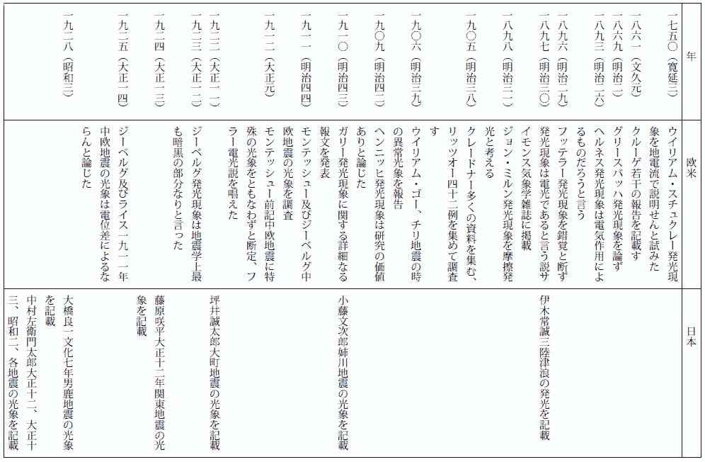
（２） 昭和五年十一月二十六日伊豆地震の発光
昭和五年十一月二十六日午前四時ごろ伊豆半島北部から発した大地震の時、方々で発光現象が観察され、その調査の許可を得るのが容易でなかったことは前に書いた。ようやく許可されたので、早速調査に取り掛かった。まず各地の役場、学校等に照会して回答を求め、また親しく震災地を巡回して資料を蒐集したことも二回に及んだ。かくして筆者の集めた材料の上に、寺田寅彦博士その他の蒐集も合わせて、資料の総数千五百八十三。これを読み、写し、整理し、分類するのは容易なことではなかった。当時筆者は貧しい一教員であったが、折あしく他人の分まで臨時に受け持たされて、一週の授業時間四十時間その上に尨大な資料の整理をするのだから、眼が廻るどころの騒ぎではなかった。実際四カ月の間、睡眠時間はわずか三時間に過ぎなかった。今から考えると、よくも体が続いたものである。幸い四十時間の授業を担当したおかげで、生活は少しく楽になった。そのために暖炉を買って、厳冬深夜の寒さをしのぐことも出来、また栄養も平素より幾分多く摂取することも出来た。それでもこの仕事を済ませた時には、真に疲労困憊その極に達していた。蒐集した資料を整理した結果、最も顕著な光を発したのは、箱根山から丹那、浮橋両盆地を連ねる南北に延長した地帯であったことは、各地から送られた報告によって疑う余地がない。この地帯はこの地震の震源地であり、丹那断層と命名された顕著な断層を生じ、また山崩れ及び浅井治平理学士によって「山ずれ」と名づけられた地変も至る所に見られたから、いちじるしい発光を見たのは当然である。
この地震の発震時は午前四時三分ごろであった。光の出現が発震前であったか、揺れている最中であったか、乃至は揺れが止んだ後であったか、これを調べるのは中々困難であった。発震時が早暁であったために、戸外に出ていた人が少なかったのである。しかし少数ではあったが偶然戸外にいた人もあった。たとえば出漁中の漁夫や平塚火薬廠の巡視などがそれであって、それらの人々は地震に先立って光が現れたことを証言している。
中でも浜松師範学校教諭佐々木清治氏の蒐集にかかる次の資料は最も重要なものである。
「平野氏の報告によれば、伊東町に大川某という魚商があり、二十六日午前三時ごろ多くの生魚を荷造りし、これを自動車にて修善寺方面に輸送する途中、午前三時半ごろ伊東より北々西に当たる丹那三島の方角に当たって、薄明るい光が現れ、青赤白黄混合した色を呈し、次第に南方に移った。彼が天城山の道にさしかかった時、大地震に遭遇した。この光は地震後にもなおしばらく継続したと言う。この間実に三十分余りにわたっている。この人は地震における発光現象を最初から最後まで観察したよい例である。」
右の如く光が地震に先立って現れたことは疑う余地がない。しかし大多数の人々は地震で目をさまして光を見たのだから、揺れている間と言う報告が最も多い。この事は後に述べるであろう発光の原因から見ても、そうあるべきである。また地震の後まで光が継続したことも事実に相違ない。これもまた発光の原因について記す時に述べるであろう。報告に記載されている光り具合は千差万別で、最初はそれらを分類するに途方に暮れたが大体左記の九種になるようである。（一）放射状、（二）電光状、（三）線状及び帯状、（四）探照灯状、（五）ラッパ状、（六）雲状、（七）漠然たる瞬間的の光、（八）火球、（九）その他。右の種類の光が実際現れたかどうかには大いに疑いがある。筆者は（一）から（六）までを「放射状」の光として一括すべきではないかと考える。
放射状の光と言うのは、地中から射出する強烈な光である。光の色についての報告は区々として一致を見ないが、青色というのが真実らしい、また青色という報告が最も多い。光度は発光地点に近い所では、目がくらむほどであったようである。丹那盆地では腰の抜けるほどだったと語った人があり、箱根町では光っている間は、用を弁じるのに一向不便を感じることがなく、切断して地面に落ちている電線まで明瞭に見えて、それを避けて歩くことが出来たと言う。個々の光は瞬間的な光であるが、続々発光するので、若干時間の間あたりが明るかったのであろう。
三浦半島の西海岸の
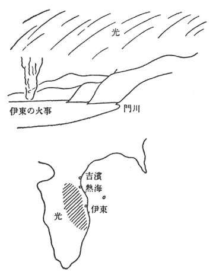
神奈川県吉浜村から見た地震の発光
（昭和５年伊豆地震）
（昭和５年伊豆地震）
伊豆地震の時には、この種類の光象は数カ所から報告されたが、その中でも伊東町では多数の人々によって観察せられ、しかも観察した人の中には現在地震研究所長である那須信治博士の如き科学者も含まれているので最も信用が出来るのである。那須博士によると、伊東町から北西と西南西に同時に光象が見えた。前者は沼津方面、後者は
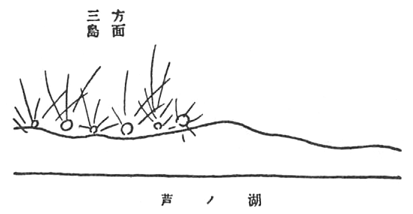
箱根町から西方に見えた地震の発光
（昭和５年伊豆地震）
（昭和５年伊豆地震）
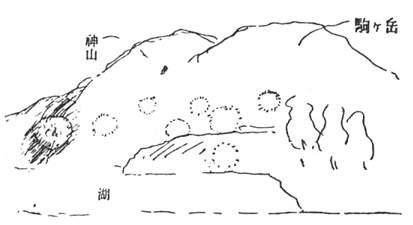
神山駒ヶ岳中腹に見えた地震の発光
（昭和５年伊豆地震）（石内農学士写生）
（昭和５年伊豆地震）（石内農学士写生）
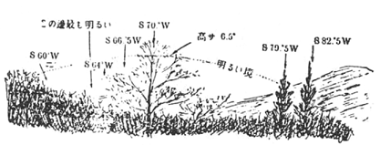
箱根姥子から見た地震の発光
（昭和５年伊豆地震）
（昭和５年伊豆地震）
大地震に際して火の玉が現れたことは、前に記した通り、必ずしもまれではなかったが、伊豆地震の場合には、ただ一つの例が報告されたのみであった。静浦の一漁夫が漁をしていると、鷲頭山から大きい火の玉が現れて、南を指して飛び去るのを目撃したと言うのである。
最後に「その他」の中には、右に記したどの部類にもいれられぬ、しかも重要な光象が含まれている。
箱根町考古館長石内九吉郎氏は、三島方面の外輪山の上に円い円が幾つも並んで、それから線香花火のような火花が出るのを目撃した。
石内氏の令息農学士石内吉見氏によると、戸外へ飛び出して木につかまっていると、駒ヶ岳から神山にかけて、中腹に一カ所パッと光ると、次に他の場所が光ると言う風に幾つも光った。光る度に物凄い形の雲や樹木がハッキリ見えた。形は電光とは違い、丸くて大きい。ただし光には大小があった。色は澄んだ青だった。
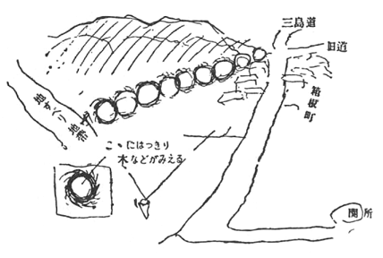
箱根町で観察された地震の発光
（昭和５年伊豆地震）
（昭和５年伊豆地震）
この地震の時、箱根町東方の沢入山が崩れ、崩土を押し出して麓の万福寺を埋め、寺男一人は生埋めになった。この時万福寺方面に円形の光が横に並び、その中左端のものがクルクル回転した。その時は非常に明るかった。
塔ヶ島離宮の省丁渡辺氏は次のように語った。地震と同時に我々親子三人は寝たまま床板ぐるみ、旧位置から十間ほど離れた湖岸の崖の上に跳ね飛ばされた。目を開いたら星が見えた。その時西南方面の山の中腹を見ると、幾つもの提灯の火が見えた。この提灯の火というのは、実は石内九吉郎氏の目撃した光り物であったと思われる。
伊豆地震の際に観察された光象に関する調査の結果は大体以上の通りであった。さてこのような発光はいかにして起こるか、発光の原因に関する考察は後に述べることにして、他の地震の場合の光について記そう。
（３） 昭和六年十一月二日日向灘地震の発光
昭和五年伊豆地震の後、筆者は他の二、三の地震について調査を試みたが、いつも柳の下にドジョウがいるとは限らず、好結果が得られなかった。しかるに昭和六年十一月二日日向灘から発した地震の場合には、伊豆地震についで興味ある多くの資料が得られた。この地震の場合には、多くの人々が海上に発光を認めた。これはこの地震の特徴であった。
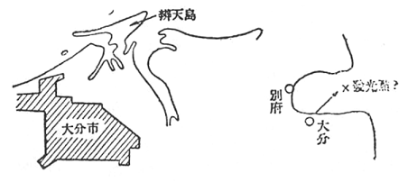
別府湾に現れた地震の発光
（昭和６年日向灘地震）
（昭和６年日向灘地震）
光象の観察された場所は別府湾と日向灘であった。大分新聞の記事によると、大分市弁天島の海上に数本の電光の柱が立ち、大きな光の幕を張ったごとく、わずか十分くらいの間であったが、名状できない光景を呈したと言う。
大分商業学校の今村教諭は、地震の直後大分市
別府湾北岸の
右の資料によって、この地震の時大分附近の別府湾内で、いちじるしい光象が現れたことは充分確かといえる。
日向灘における発光地点は一カ所ではなかったように察せられるが、唯一の場合を除いてその地点を確かめることが出来ない。その唯一の場合というのは、那須博士が現地で聴取されたものであって、土々呂村の池田丸乗組員の体験である。この漁船は地震の時内海の沖十二、三里の所で漁をしていた。午後七時ごろになると船が急に揺れ出し、はては船が立って今にも転覆するかと思った。のみならず船が揺れ出すと同時に、目の前の海面から火柱が立った。乗組員は生きた心地がなく、一同口々に御題目を唱えていたと言う。
右のいわゆる火柱は、後に述べる機会があるが、その正体が大体分かっている。
（４） 昭和六年十一月四日小国地震の発光
地震の時に、送電線が接触したり切断したりして発光することがある。これは発光現象を調査する者にとって実に邪魔になる。そこではなはだ怪しからぬ話ではあるが、送電線の全然ない土地に、そして夜間に大地震が起こってくれるよう、心ひそかに祈っていた。この願いが天に通じたのか、ちょうど誂え向きの地方に局部的に破壊地震が起こったのである。昭和六年十一月四日岩手県小国村の地震がそれであった。のみならずその際いちじるしい発光が多数の人々によって観察されたのである。幸いに――ただし筆者にとって――この地方には送電線が絶無であったから、右の光が送電線から発した光でないことは疑う余地がない。そこで発光現象の調査研究には絶好のチャンスと思ったのはつかの間、またも一つの困難に出会うことになった。
小国村及びその附近は炭の産地で、無数の炭焼窯がある。その窯が地震で、小国村で百五十一、隣の金沢村で百三十も崩壊したのである。炭焼作業の途中で窯が崩壊すれば、窯の内容は爆発的に燃え上がって、火光が天に沖するであろうことは想像に難くない。小国村の人々は口をそろえて、炭焼窯の崩壊による火光ではないというが、この証言は余り当てにならぬ。何故かというに、小国村に大地震があったのはその時が最初であり、従って無数の炭焼窯が一時に崩れて燃え上がる光景を目撃した者は一人もいないはずだからである。
惜しいことに明神礁で殉職した田山利三郎博士と筆者とが蒐集した資料を検討して見ると、炭焼窯の火光らしい点もあり、またそうでは無さそうな節もある。弱り切ってその旨を寺田寅彦博士に報告した。先生の言われるには、窯を実際に壊して見たらよいだろう、壊す時間を附近の学校や役場に知らせて置いて、どんな風に見えたか報告して貰えばよい。一つやって見ようではないか。どのくらい費用がかかるか調べて見給え。そこで早速秋田県で山林会社を経営した経験のある友人に問い合わせると、たしか当時の金で二万円位の見つもりだった。それでは余り高価だからという訳で、破天荒の炭焼窯爆破の実験は沙汰止みになった。
（５） 昭和十三年五月二十九日屈斜路地震の発光
昭和十三年五月二十九日午前一時四十二分、北海道この地震の時に観察された光象は、主として屈斜路南岸に位する丸山の方向に見えたことは注意すべきことである。ポントの真田氏の話によると、子供が地震で戸外に飛び出した時、東の空を見て、「お婆さん、火事だ！」と叫んだ。東方がほのかに赤かったが、直ちに消えた。ポントから東は丸山の方向である。
ポントの本願寺派出所の内藤氏は、家から飛び出した時、丸山の方が一帯に赤く見え、約十五分の後パッと消えたと言う。
丸山附近の丸山倉庫の主人の話によれば、丸山のうしろの方が、月の出の如く明るくなり、道路が見えるほどであった。
コタンの山本商店で聞いたところでは、戸外に出て丸山が崩れた。そして丸山の左方が真赤にパァーッと明るくなったが、いくらもたたぬ中に消えた。美留和附近の火事だろう、いや炭焼窯が崩れたのだろうと騒いだ。和琴の噴汽口附近からも火が見えた。
エントコマップのある農家の主婦は、地震の直後、丸山の方が赤く見えたので、山火事だと言っていたが、やがてパッと消えたと語った。
これらの資料によって発光地は丸山方面であったことは多分確かであろう。
（６） 昭和十六年七月十五日長野地震の発光
この地震の時も発光が各地で観察されたが、岸上冬彦博士及び矢橋徳太郎理学士の調査の結果、送電線の切断による火花と結論された。（７） 昭和十六年十二月十七日嘉義地震の発光
昭和十六年十二月十七日午前四時二十分、台湾嘉義市附近から発した大地震は、家屋全壊八、六九六戸、死者一、〇九一人を生じたが、この時にも発光現象の興味ある実例が、台湾気象台の川瀬二郎理学士によって蒐集された。川瀬氏から直接聞いたところによると、通訳を連れて聞いて歩かれたそうである。発震時は午前四時二十分であるが、東京の経度では午前三時ごろに相当する。発光の目撃者は農夫に多く、殊に地震直前に光を見たものが多かった。その一部を左にかかげる。嘉義群［＃「嘉義群」はママ］水上床中床の東方二キロの地点で、四人が観察したところは次の通りである。地震の前東に向かって進行していると、東の空から野火のごとき色の幕のように拡がった光が下降し、地鳴りが聞こえて震動の始まるころには上昇し始め、震動が最も激しかった時は光は上昇の極点に達し、まもなく消えた。光の強さは前にいる人を識別できる程度であった。
二人の農夫の語るところによると、色は青白く、大きさは
斗六郡草嶺に大規模な山崩れが起こったが、その附近では、山崩れによる土埃の中に光を認めたものがある。その光は周囲に電灯がついたような弱い明るさであった。
新営郡鳥樹林［＃「鳥樹林」はママ］国民学校の報告によると、地震で戸外に飛び出し校庭に行った。教室附近に青白い光が三、四秒ずつ継続して発した。数カ所からパッパッと発し、震動が終わると光も消えたと言うことである。
（８） 昭和十八年三月四日及び五日鳥取地震の発光
昭和十八年三月四日午後七時十三分鳥取県賀露附近から破壊地震を発し、続いて翌五日午前四時五十分同県浜村沖から同じくらいの強さの地震が起こったが、この二回の地震の際にも発光現象が多くの人々によって観察された。この現象を綿密に調査した表俊一郎博士によると、両地震の場合に、大多数の人々の発光を目撃した方向が、いずれも震央の方向であったことは注意すべき事実である。この現象に関連して、地震の際における火事、電光、及び高圧線の切断等を一応考慮しなければならないが、火事は全くなかったし、電光の見られるような天候ではなかった。断線については、五日の地震で三カ所において断線したけれども、光を見た方向を地図上に矢印で記入すると、矢印は震央に近い海上において交わるので、この地震の発光を送電線の切断による光とは考えられないと言うことである。表博士はその他光り具合及び光の色についても調査の結果を報告している。そして発光源においては相当に強力な光が放出されたであろうと推測した。（９） 昭和二十一年十二月二十一日南海道地震の発光
昭和二十一年十二月二十一日午前四時十九分ごろ、東経一三五・六度、北緯三三・〇度の地点、すなわち紀伊半島南方沖から大規模地震が発現した。この大地震の発光は、他の事項と共に中央気象台その他の気象官署及び水路部によって調査されたが、前者の完全な調査報告はまだ出版されていない。この地震の場合には、火事を遠方から望むような光象も報告されたが、火の玉を見たという報告が甚だ多く、また海上に発光を認めたという報告は更に多かった。
紀伊半島の九鬼では、地震の直後、西方の山地に赤い御光の如き光を数回見た。村の人々は山火事と間違えて騒ぎ立てた（三重県熊野灘沿岸南部踏査概報）。
真柄浩氏の報告によると、三重県
右は遠方の火事の如き光象である。次に火の玉の例を少し挙げて見る。
紀伊半島田辺湾の中央附近に、弧を描いて北から南へ飛ぶ光を見た人が相当に多い（伊吹山測候所調査）。
和歌山県西
紀州沖でイカ漁をしていた漁夫の話によると、何か光ったものが天から降って来て、海中に没したと思うと、まもなく震動を感じた（水路部、昭和二十一年南海大地震報告）。
ある漁夫の話によると、紀州沖から火の玉が飛んで来て、
熊野の曽根では、地震の最中に北々西と南東に赤い火球状の光を認めた（三重県熊野灘沿岸南部踏査概報）。
賀田でも地震の後北方と南東に火球状の赤紫色の光を見たと言う（前同）。
高知県野見湾に出漁中の船は、須崎方面に火の玉の飛ぶのを見たと言うことである（水路部、前掲）。
海上に光を認めたと言う報告はきわめて多く、しかも地震の前に観察したという報告も若干含まれている。
岡山県小田郡今井村字絵師の川相末蔵氏の談話によると、地震のあった日の午前四時に用便に起きた時、南方笠岡湾にある木之子島の向こうの海上が、夕焼けの如くボーッと明るくなっていた。それから出勤の仕度をしていると、地震が起こった。光はその時まで続いていたように思われる（岡山県下被害踏査報告）。
和歌山県椿の一老人は地震の前夜、今夜は何か異変があると言っていたが、午前三時過ぎに起床して見ると、はじめ白浜沖、次いで
高知県室戸岬に近い津呂の臼掘り職人の話によると、二十日午後六時ごろから、東南東海上にくすんだ灰色の数段の光帯が現われ、虹のようであった（室戸岬測候所調査）。
また高知県の
以上はいずれも地震の前に海上に光象を見たものである。
岡山県
笠岡湾北方の大井村からも、海上に火柱の立ったのが見えたといい、また児島湾でも、沖の方が明るくなったのが観察された（前同）。
その他和歌山、三重、高知の諸県でも、海上の発光が観察された。
日本の各地で大地震の際に観察された発光がいかなるものであるかは、以上の資料によって大体了解されるであろう。ここに掲げた以外にも資料は沢山あるが、これ以上に資料を羅列する時は、いたずらに読者の倦怠を招くばかりであるから、資料の記載はこのくらいで打ち切って発光の原因について記述することにしよう。
わが国でこの現象について考察を試みた最初の学者は寺田寅彦博士であった。博士は昭和五年十二月地震研究所において、「地震にともなう発光現象について」と題して研究の結果を発表し一層詳細なる論文は翌年地震研究所彙報に掲載された。その論文の要旨は次の通りである。
「この現象の原因について考察した結果は次の通りである。（一）火事と（二）雷雨にともなう電光とはこの際問題にならない。（三）送電線の接触又は切断によるスパークは、現象の一部を説明するとしても、これでは説明されないいちじるしい現象がある。そうしてそれは（四）山崩れ、地すべりによる摩擦発光として説明すれば多くの場合に質的には容易に説明されそうである。しかし著者が行った簡単な実験を基礎として試みた量的の計算（もちろんある仮定の下に）の結果ではこれだけですべての現象を説明するのは困難であるように見える。それで電線のショートと山崩れと両方ですべてを説明すれば一応はもっともらしいようである。しかし充分強力な放電に関する確証が得られないのみならず、また電線の存在しなかった時代における東西両洋の記録の共通圏内に多数に現れる閃光的現象が、今日の場合にショートで説明されるものとほとんど同一であり、しかもそれが雷雨の疑いのない時にでも度々あったと考えられるところに困難がある。以上の原因の外に、従来全く考慮されなかったと思われる一つの可能な原因がある。それは毛管電気現象に関するもので、地殻内における水の運動のために地殻中、従って空中にいちじるしき電位差を起こし、場合によっては高層の空中放電を生ずることが可能であるというのである。」
東京大学教授清水武雄博士は、昭和七年四月日本数学物理学会年会において、寺田博士とは異なる見解を発表された。その大要を記すと次の如くである。
「地震の発光現象は送電線からのアークを誤認したのだと言う説は、多数の人によって提出されたものらしいが、これに対する難点は、震源地方では全く送電線のない方向にも同様な光が認められたこと、並びに全然送電線のなかった古い時代の地震記録にも、確かに同じような発光現象の記事のあることである。がもし昔も今も、またいかなる地方にも送電線があったとすれば容易に解決される。果たしてそのような送電線はないであろうか。それは存在すると信じられる。すなわち地電流がそれである。地電流は地質の相違並びに水分の多少に従って非常に不規則に、あたかも多数の中州をもつ流れのように、大小の網目をなして流れている。しこうして電流の小さい地域に鉛直な地割れが生じても、地電流には何事も起こらないであろうし、電流の流れやすい地域内で地割れが生じても、電流はその部分を避けて流れやすいために余り目立つ現象は起こらないかも知れないが、一つの電流の通路全体にまたがって地割れが生じた場合には、実験室で一つの回路をブレーキした時と同様、その割れ目の数カ所にアークを生じても別に不思議はない。ただ問題となるのは、色々の量の大きさの程度であるが、これは仮定の仕方によって随分大きい範囲内でいろいろになり得る事は明らかである。数学的に最も簡単な一模型について吟味して見るに、微弱な地電流といえども、好都合の場合には強烈なアークを生じ得る可能性のある事がわかる。もし地震にともなう発光現象の大部分が地電流によるアークであるとすれば種々の事実が比較的自然に説明される。地平線の一点から上空に向かって放射する光は地割れにやや直角な方向から見たのであり、柱状の光は地割れの延長線上から見たものと考えられる。またラッパ状に上に向かって拡がった光は、柱状に見える上部に霧があって、その部分が幅広く見えたのかも知れない。多数の球状の光が一直線上に次々現れたのは、小さいアークが一つの亀裂に沿って順次に位置を変えたものと考えられる。亀裂とまで行かなくても、土壌のような不均等な物質では、単に振動を与えただけでも、無線電信のコヒーラーのように抵抗を増すであろうから、地面の表面にアークを生ずるかも知れない。ゆえに強震を感じるような地域で至る所にアークを生じても不思議ではない。人体に感じる振動の止んだ後に発光の生ずるのは、きわめて局部的地層が落ちつく際に起こるものと考えられる。また地震の前に発光現象の起こるのは、地震の前に起こるきわめて繊細な地殻の変化が地電流に鋭敏に感じるに基づくのかも知れない。もしそうとすると、夜間のみに観測される発光現象よりも、地電流そのものを観測する方が有利である。要するに、地電流の急激な振動的変化の実測は、地震予知問題と関連して甚だ重要なるものではあるまいか。」
地震の発光現象の原因に関する寺田・清水両博士の考察の結果は、前述の如く、甲は毛管電気現象として乙は地電流による現象と考えて、全く一致を見ない。いずれが正しい見解であるか、浅学不才の筆者にはこれを批判すべき資格がない。筆者はただ自分の思うままを次に記すだけである。
筆者が地震の発光の調査を開始すると、あれは送電線のスパークだと、さんざんけなされたものである。科学者の中にも同じ考えの人が少なくなかったようである。ある科学者から親しく聞いたところによると、その学者は地震の時に送電線が接触して発光するのを観察したことがあったそうである。その経験を多分唯一の根拠として、地震の発光現象全部を送電線のスパークなりと主張したのであった。先入感は恐ろしいものである。この現象に関する古今の記録を虚心坦懐読んで見れば、そんな事はいわれないはずである。
寺田寅彦博士の言葉を借用すれば、「古い昔から、大地震の時に、空中又は地上にいろいろの不思議な光が現れたと言う記録が日本地震史料のみならず、外国の文献にも沢山ある。イタリアの学者でそういう記録を沢山に集めて現象の種類を分類した人もあった。面白いことにはそれらの外国の記録にあらわれた現象の記述でわが国の古文書中に見出される記述のあるものとほとんど符節を合わせたように一致するのが多数にある。」
「もちろん高圧送電線などというものは夢にも知られなかった昔の話であるから、電線の切断又は接触によるスパークなどは問題にならない。」
地震にともなう発光現象のほんの一部だけが送電線の接触又は切断によるスパークだとすると残りの大部分の発光は一体いかなる機構によって出現するのであろうか。一口に地震の発光といっても、いろいろの種類がある。（一）地表から放射する光もあれば、（二）遠方の火事を望見する如き光象もあり、（三）空中を飛ぶ火の玉もあり、（四）地中から現れる小火焔もあり、また（五）海上の発光もある。
（一）地表から空中に放射する光は、送電線の接触又は切断による光としばしば混同される種類の光象であるが、筆者はこの種類の発光の大部分は山崩れによる摩擦発光であろうと考える。前に記した如く、寺田博士は「著者が行った簡単な実験を基礎として試みた量的の計算（もちろんある仮定の下に）の結果では、これだけですべての現象を説明するのは困難であるように見える。」と記載されたが、「簡単な実験を基礎として」「ある仮定の下に」計算した結果だと言われるからには、周到綿密な実験を基礎とし、他の仮定の下に量的の計算を行ったら、あるいは容易に説明が出来るかも知れないのである。
理論はいかにもせよ、実際山崩れの場合にいちじるしい光を発することは確実と言ってよい。弘化四年善光寺地震の時、岩倉山が崩れ崩土が犀川を閉塞したが、その時昼の如く明るくなったことは前に記した。また「川中島善光寺名所略記」の中に「善光寺大地震の説」と題する一節があり、「震災の夜朝日山なる阿弥陀松より一筋の光明長野を指して照らしけり」と書いてあるが、この朝日山には今なお明瞭な山崩れの跡を留めているので、これまた山崩れによる発光であったことがわかる。
古来の大地震の中でこの善光寺地震ほど山崩れのおびただしく起こった地震はない。山崩れの数は松代領内にて大小四万二千カ所、松本領で一千九百カ所、総計四万三千九百カ所に及ぶ。発光現象のいちじるしかったのは当然である。
明治四十二年姉川地震の時、伊吹山中腹の「白崩れ」及び「大富崩れ」の崩壊に顕著な発光をともなったことも前に述べた。小藤文次郎博士は「その発光の原因はすこぶる不明なり」と記したが、現在ではすこぶる明瞭である。
昭和五年伊豆地震の時には、下狩野村字佐野の梶山が崩れ、何人かの人が崩土の下に生き埋めになり、筆者が同地を訪れた時には埋没された家が地下で焼けていて、その煙が崩土を通して立ち昇っていたのがいかにも哀れであった。この山崩れの場合にもいちじるしい発光をともなったことは、多くの人々の証言によって明らかである。
箱根町で石内九吉郎氏父子及びその他の人々によって観察された光象も、また山崩れの発光であることは疑いない。石内氏が西方外輪山上に見たと言う光球の列は、実は外輪山内側の中腹か下部であったに相違ない。とっさの間の観察だからこのくらいの誤りは止むを得ないであろう。実際この方面一帯に山崩れが起こったのである。石内吉見氏が駒ヶ岳・神山の中腹に見た円形の光もまた山崩れの発光であること寸毫の疑いもない。神山・駒ヶ岳の芦ノ湖に面する山腹を見ると、若干の山崩れの跡を指摘することが出来る。その位置は石内氏のスケッチに示される発光点とほぼ一致する。石内氏は塔ヶ島半島にも一カ所発光点を記入しているが、その部分にも崖崩れが起こり、崩れた跡は滑らかな面を示していたのである。また某氏が万福寺方面に見たと言う一直線に横に並んだ円形の光り物は、万福寺を埋め寺男一名を生き埋めにした山崩れの発光と推定される。この山崩れは旧位置から崩土を数町湖岸に向かって押し出したので、その光の列は多分進行しつつあった崩土の末端であったろうと想像される。
地震に先立って現れた光及び地震の後も引続き観察された光は、すべてこの種類のものである。おそらく地震の発現する前に地盤の緩慢な傾動が起こり、崩れやすい状態にあった山腹がそのために崩落して発光を生ぜしめたのであろう。また主震によって崩れやすい状態になった部分が、続々発する余震によって崩れ落ち、その度ごとに発光したのではないかと考えられる。
また昭和十三年屈斜路地震の場合に観察された光は、いずれも丸山の方向に見えたと言われるが、この丸山に山崩れがあったのである。
右に記載した如く、山地における発光現象の大部分は、山崩れの摩擦発光として大体説明し得られるように思われる。しかし関東平野から発した安政二年江戸地震の場合の同様の光は、いかにこれを解釈したらよいであろうか。この説明は大して困難を感じない。この地震の震源地は、
この地震の時、吉原土手の地割れから光を放射したと当時の記録に書いてある。これも真実であったかも知れない。その場所は沖積層の低地であり、しかも人工で築いた土手であるから、震動によって極度に揉み抜かれ、その摩擦によって光を発したのかも知れないのである。
次は地中から現れる小火焔、これは正嘉元年鎌倉の地震を始め多くの例が記録されているから、幻覚として否定することは出来ない。この現象は多分地中から可燃性ガスが噴出して、それに何らかの原因で火がつくのであろうと考えられるが、何者によって点火されるかという段になると余り話が簡単でなくなる。そのガスをメタンと仮定すると、引火点は摂氏六五〇度ないし七五〇度だという。地震に際してこれだけの熱がいかにして発生するだろうか。筆者にとってまだ解きがたい謎である。
海中から空中に投射される光については、津浪にともなう発光現象の条下に記すから、ここでは触れない。
以上各種の地震にともなう発光現象に関する愚見を記したが、まだ他の二種、すなわち遠方の火事を望む如き光と火の玉とが残っている。この二種の光象については、現在のところ筆者は全然その原因を説明し得ないことを告白する。
終わりに、この現象の調査研究について多大の援助を与えられた寺田寅彦博士の言葉を掲げて本文の結びとする。
「これが単に流言であり虚言だとすると、昔の日本人が昔のイタリア人と申し合わせて、同じ嘘をついたことになるわけである。またもしこれが幻覚だとすると、古今東西を通じて多くの人に共通な幻覚だとしなければならない。しかもそういう幻覚は生理学上で知られている普通の錯覚的現象としては、容易に説明することが出来ないのである。」
「またこれがすべての場合に火事や、電光や、電線の故障等だけで説明することは出来ないので、ともかく直接に地震によってひき起こされる一つの発光現象が存在することが明らかになったと思われる。」
「このような発光が主なる地震の前から現れることもありはしないかと疑わせるに足るような若干の例もあるので、この点から見ても、この現象は、地震学上必ずしも無視することの出来ない一つの問題を提供するものであろう。」
［＃改ページ］「またこれがすべての場合に火事や、電光や、電線の故障等だけで説明することは出来ないので、ともかく直接に地震によってひき起こされる一つの発光現象が存在することが明らかになったと思われる。」
「このような発光が主なる地震の前から現れることもありはしないかと疑わせるに足るような若干の例もあるので、この点から見ても、この現象は、地震学上必ずしも無視することの出来ない一つの問題を提供するものであろう。」
地震に発光をともなう場合があり、また筆者の調査した結果を、外国の学者の記載と比較して見ると、よく一致することは、前に述べた通りである。しかるに津浪に発光をともなうということは、筆者の知る限りにおいて欧米各国の報告にも見当たらず、従ってこの現象を調査研究した学者も全くなかったようである。多分欧米には津浪がきわめてまれだから、この現象を観察する機会が乏しいためであろう。従ってこの現象は学界の処女地と言っても過言ではない。
筆者がこの処女地に鍬を入れるようになったのは、地震及び津浪に関する古今の記録を調べている中に、津浪の発光の記事が少なからず見出されたからである。このような記事を見た学者は必ずあったに相違ないが、根拠のない記載として、てんで問題にしなかったのであろう。そこで筆者はこの閑却されていた現象に素っ裸で取り組んで見ようと思い立ったのである。
津浪の光の最古の記事は「三代実録」にある。
延宝五年（西暦一六七七）十月九日陸奥から尾張にかけての海岸に津浪が寄せた時、尾張の海上で、三個の光り物が海中から飛び出して、西北に飛び去ったと、色々の本に書いてある。この津浪は地震津浪でなく、風津浪（高潮）の疑いがある。この光り物は暴風雨の時に往々観察される光象であったかも知れない（暴風雨の時には色々な光が見られ、火の玉が空中を飛んだ例も少なくない。これらの実例は先年筆者が発表した「暴風雨にともなう発光現象について」の中に掲げてある）。
宝永四年（西暦一七〇七）十月四日の大地震大津浪の時、紀伊田辺の附近で、山の上で津浪の襲来を見ていた人が記すところによると、進んで来る大浪の中に、白く円い形の光り物があったと言う（嘉永七年甲寅地震海翻之記）。これと全く同じ光り物が、昭和八年の津浪の時、岩手県釜石湾で観察された。
寛政四年（西暦一七九二）四月一日、島原半島の前山が崩壊し、岩石土砂が有明海に突入したため、大津浪が起こって一万五千人の死者を生じたが、この時にも浪がいちじるしい光を放ったと記されている（西肥島原大変聞録、北窓瑣談）。
安政元年（西暦一八五四）十一月五日南海道大地震大津浪の時、遠方の空が火の燃えるように見えたが、その方向は津浪に襲われた海岸の方向であったと記している人がある（大屋祐義日記）。
同じ地震津浪の時、紀伊田辺附近で観察した人によると、海上に火柱が立つと、たちまち津浪が寄せて来た。また鹿島の山から火の玉が飛び出して、終夜海上に浮かんでいた。火の玉の大きさは遠くから見て、
西南の沖で大砲のような音が続けざまに聞こえ北から南へ火柱が移動して来るので、てっきり津浪と思い、子供達をさきに逃がし、自分は後から避難したが、途中まで行って振り返ると、自分の家のあたりは海になっていた（紀州日方町大地震津浪の記）。
同じような記録は、土佐にもあるが、大した違いもないのではぶくことにする。
明治二十九年六月十五日の三陸津浪は、この現象に関する有益な資料を少なからず供給してくれた。
岩手県
小友村の黄川英次と言う人は、清水峠にさしかかった時、遥か遠方に鳴動を聞き、夕立が来るのかと思いつつ峠を越すと、轟然一発大砲の如き音響と同時に、一面の海上煌々と白色に輝き、あたかも雪山が崩れ落ちるようであったので、始めて津浪だと気がついた（風俗画報）。
青森県上北部［＃「上北部」はママ］三川目の故老の話によると、釣りランプが長く揺れてから、三十分くらいたって堀に海水が流れ込んで来た。それから十分ほどたつと二回の浪が来て、邸内にイワシの滓が海水と共に流れ込んで来た。それから約二十五分後に、見上げるような大浪が押し寄せたが、浪頭の飛沫がものすごく輝き、その夜は霧深く暗かったにもかかわらず、逃げ登る足元が見えるぐらい明るくなった（三陸沖強震及津浪報告）。
明治二十九年三陸津浪の光については、以上の外にも資料はあるが、余り長くなるからこの辺で打ち切って、次に移ることにしよう。
昭和八年三月三日午前二時三十分ごろ、三陸地方はまたもや大津浪の
発光は三陸海岸地帯の各地で見られたのだが、その中でも最も強烈な光が観察されたのは釜石の附近らしかった。そこで一つの部落を訪ねるごとに光の見えた方向を指示してもらって、それを地図に記入して行くと、多くの線が釜石湾口あたりで
分教場の校長さんが、津浪の時光を見たものは出て来いと命令を下すと、現れたのは五十がらみの婦人だった。どの辺で光ったかと尋ねると、あそこだと指す所は正に釜石湾口だ。あそこに火柱が立ったと言うので、手真似でその模様をやって見せてくれないかと言うと、両手を差し上げ、こんな風にモヤーッと光ったのだと言う。こう言うわけでやっとのことで発光地点を確かめることが出来た。帰途は陸路を選んだ。
釜石にいる間におかしな経験をした。筆者が三陸地方へ出張すると聞いて、友人のＳと言う男が、釜石に自分の伯父がいるから、立ち寄ったら便宜をはかってくれるだろうと言って紹介状をくれた。釜石に着いた翌朝行って見ると、家はすぐわかったが戸があかぬ。見ると堂々たる構えである。通行人を呼び止めてこの家は何だいときくと、女郎屋だと言う。なるほど早朝に行っては戸がしまっているはずである。Ｓの奴いやな家を紹介したとは思ったが、午後になって再び訪ねて見た。入口に「Ｔ楼」と大きく染め出したのれんが下がっている。気まりが悪かったが、あたりを見廻してからのれんをくぐって入ると、よい鴨でも舞い込んだと思ったのであろう、しどけないなりをした接客婦がゾロゾロ出て来たのには大いに面食らった。結局Ｔ楼主人からは何の得るところもなかった。
余談が長くなった。本論に入ろう。
昭和八年の三陸津浪の発光に関する各地からの報告はおびただしい数にのぼる。その上中央気象台の報告の中にも少なからぬ情報が
それらの報告に記載してあるところは種々様々であるが、大体次の八種類に分けられるようである。（一）浪頭がボーッと光った。（二）海面が一帯にピカピカ光った。（三）津浪が海岸に打ち当たった時岸の部分が青く光った。（四）津浪の襲来に先立って海水が退いた時海底が青く光った。（五）流星のような光。（六）円い光り物が浪と共に進んで来た。（七）海面に近い空中に現れた光り物。（八）海中から放射した強烈な光。
浪頭がボーッと光ったという報告は数カ所から送附された。たとえば船越村では「浪頭が白く直線になっていた」、また
釜石湾口の白浜部落で、当時七十七歳の老漁夫にあって話を聞いた。彼は明治二十九年の津浪の時にも浪にさらわれて九死に一生を得たが、昭和八年の津浪にまたもや幼い孫を抱いたまま浪に呑まれ岩礁の上に打ち上げられていたのを救われたのだそうである。彼が海上を漂っていた時岸の方を見ると、岸の部分の海水は煮え返るように見え、また青く光っていたと言う。
釜石水上警察の小野巡査は、地震の約三十分後に海水が退き始め、見る見る中に百メートルくらい退いたが、その時海底の泥の中から、水と共に青い光の噴出するのを観察した。
流星のような光を見たと言う報告をしたのは、大沢小学校の訓導で、地震の後、南方大島の上に生じている樹木の少し上の所に、流星のような光が斜めに飛ぶのを見たと言うのである。
釜石町長小野寺有一氏は、町の背後の山の中腹に避難して、海面を見ていると、浪（多分二回目の浪だろうとのこと）が湾口に近い中根燈台の辺りから、湾の中央部に進んで来る間、浪頭のすぐ下の所に、大きさ菅笠かたらいほどの円形の光り物が三つばかり横に並んで、進んで来るのを見た。色は青味がかった紫色であった。その光がサーチライトのように四辺を照らし、浪頭の折れ返るのや、船の破片などが浪に翻弄されるのがありあり見えた。浪が湾の中央部より奥へ進行すると、浪そのものがグジャグジャになって、光り物も見えなくなった。この光り物を、山上に避難していた多くの人々も見たそうである。
釜石水産試験場の小林忠次氏も、この光り物を見た一人だが、小野寺町長の話とは少し違う。小林氏によると、津浪が湾内に侵入して来た時、浪頭が一直線に黒く見え、浪頭の直ぐ上の所に、数個の円い光り物が、同じくらいの間隔をおいて並び、浪の進退と共に光り物も猛烈な勢いで進退した。その中に光り物は一つ消え二つ消えして、全部見えなくなった。色は提灯の光のようであった。
釜石水上警察の小野巡査はまた次のように語った。「私は地震の後町の人々に海岸で焚火をして警戒するように命じました。寒いのでそのあたりにいた人々はみな焚火のまわりへ集まって来ました。地震があってから三十分ばかりすると、海水が退き始めたので、それ津浪だと二町ばかり山手の方へ逃げて、後を振り向いて見ると、湾口の方で探照燈のように光るのが見えました。そうしている中に、津浪が湾内へ侵入してきましたが、その浪頭の上に、青い明るい玉が数個並んで光っていました。その時足のところまで水が来ました。」
右の三人は同一の現象を観察したことは確実と考えられるが、三人の言うところに、わずかながら一致しない点がある。一人は浪の中と言い、二人は浪頭の上だろうと言う。色についても甲は青紫色、乙は提灯の光に似ていたと言い、丙は青かったと言う。とっさの間に観察が如何に困難なものであるかが、これでもわかるように思われる。
右の光り物の類例が気仙町から報告された。津浪は真黒に見え、「メロメロ」と陸にのし上がったが、陸上に上がった海水の中に、直径五寸ないし一尺くらいの、夜光虫のような青い光が、所々に認められたと言うのである。
この光り物は実に不思議な現象であって、もしこれを報告した人が単数であったとしたら、誰もこれを信用しなかったであろう。しかし何人もの人が、多少のくい違いはあるにせよ、この現象を観察しているからには、これを幻覚とみなすわけには行かない。
またこの光り物と全く同じ現象が、前に記した如く、宝永四年の大地震大津浪の時に、紀伊の海岸で観察されていることは、この光り物が幻覚でも虚偽でもないことの、一つの証拠として役立つであろう。昔の人と現代の人が、申し合わせたような嘘をつくはずがない。
不可思議な現象のもう一つの例は、次に記すところのものである。この事を話してくれたのは、漁船幸栄丸乗組の原田鶴松と言う漁夫であった。彼の言葉は純粋の岩手弁で、筆者にはほとんど一語も通じない。やむを得ず仲間の漁夫に通訳を頼んで、ようやくノートを取ることが出来た始末であった。
漁夫原田の語るところによると、彼は三月三日（津浪のあった日）午前零時ごろ釜石を出港三貫島北東四海里位の海上で、タラの延縄漁を行うために縄を下ろし、下ろし終わって船を縄の真中まで戻した時、船の前面、白崎の方向に、大きな火の玉が出現した。火の玉の大きさは満月くらい、高さは海面から二、三十尺、ちょうど汽船のトップ・ランプの高さだった。てっきり、トロール船が来たのだと思い、
海中から放射した光は、最も多くの人々によって観察され、従ってこの種類の報告は数が最も多かった。代表的なものを二、三挙げてみる。
宮古の北方に位する
船越村は釜石の北方約二十キロの地峡部にある村である。この村の小学校長鈴木忠二郎氏の話によると、地震の後約二十分位たって、同地から東南に当たって、青白い光がパーパーパーと三回続けて、天空に放射された。物凄いものであった。その少し右に、釜石の火事が見えた。
大槌実科女学校長鈴木兼三氏は次のような報告を筆者に送って下さった。光を見たのは津浪襲来の直前である。方向は大槌より南少しく東寄り、釜石沖の方向。光り具合は放射状と言うものと探照燈の光芒のようだと言う人がある。色は黄又は赤味を帯びた青色で、瞬間的な光であった。
鵜住居小学校の小松訓導の報告には、次のように書いてある。
「私は鵜住居村両石部落のものですが、三日の午前二時三十分ごろのあの大地震と共に、海岸に出て警戒致しました。私の部落では、明治二十九年の津浪で約九百五十人の中七百五十人の死者を出し、下閉伊郡の田老村気仙郡の
釜石夜間中学校の報告によると、地震の二十分ぐらい後に、湾口から光を発し海岸の山々に反映した。探照燈をめぐらす如く移動し、連続して発光した。電光に似て青かった。大漏電かとも思われ、また海上の大船が避難を援助するために探照燈を照射するのかとも思った。
釜石鉱山郵便局長の観察したところでは、午前二時五十分ごろの第二回の強震から約六分を経て、真東に光を見た。光るたびごとに発光地点が南に移動した。その直後海水の退く音が聞こえた。光は探照燈より強く、電光よりやわらか味があった。
釜石町の通称「アメリカ徳」と言う人はこう語った。はじめ
前に一度触れたことのある、釜石湾口白浜部落の佐々木はるのという婦人の話によると、地震があってから、湾口の所がいっぱいにモヤーッと青赤く光った。それからまた地震があった。すると白浪がまくれて来て、その後ろから高い真黒な浪が進んで来た。光った所は馬田岬と鐙岬の中間である。
大槌町の漁船海運丸は、広田湾と唐桑の境をへだてる二百メートルの海上で、金華山沖の方向に、探照燈のような光を三回目撃したが、昼間のように明るくなった。
資料全部をあげることが出来ないので、多少不徹底なうらみはあるが、ここにあげただけの資料によって、海中から射出した光の少なくとも輪郭はつかむことが出来るであろう。
資料全部の記載を綜合すると、この種類の発光は、三陸地方沿岸の各地で観察された。その中で最も顕著な発光の観察をされたのは、釜石湾口であった。光の色は青みがかっていたというのが真実であろう。光度がきわめて強烈であったことは、釜石町で女子どもが震え上がったといい、また宮城県の小鯖では、多数の人々が海中に流され、救助を求めていた時、突然海が一面、サーチライトで照射した如く明るくなったので、救出にきわめて便利であったと言う事実によって想像される。この光は一地点から続けて何回も放射されたようである。
津浪の発光の資料はおびただしく集められた。しかしそれ等の資料に基づいて発光の原因を明らかにすることは、実に困難な仕事である。第一、大多数は瞬間的の現象であって、研究の基礎となるべきものは何一つ残っていない。のみならず、観察者の報告は、とっさの間の観察だから誤謬が含まれている事を期待しなければならぬ。従ってこの現象の原因は、現在のところ多分こうであろうという推測の範囲を出ないのは、止むを得ないことである。
筆者はさきに昭和八年三陸津浪の発光を八種に分類した。その中、（一）浪頭がボーッと光った、（二）海面が一帯にピカピカ光った、（三）津浪が海岸に打ち当たった時岸の部分が青く光った、（四）津浪の寄せて来る前に海水が退いた時、海底が青く光った、この四つの場合は、発光生物が、海水の動揺に刺激されて光を発したものと推定して誤らないであろう。発光生物専攻の神田左京氏も、多分夜光虫の発光であろうと、筆者の推定に裏書きして下さった。
（五）流星のような光、これは「流星のような」でなくて、実際に流星だったかも知れない。津浪の夜、流星を見たと言う報告が二、三ある。
（六）円い光り物が浪と共に進んで来たと言うのはきわめて奇怪な現象であって、幻覚と考える人もあるかも知れないが、少なくとも三人の目撃者があり、その中には知識階級の人も含まれていることであり、宝永の津浪の時の記録にも、全く同じ現象が記されてあるから、幻覚でないことは確実である。
円い光り物が浪の上にのっていたか、浪の中にあったのか、目撃者の言いぶんが一致していないが、常識的に考えて、浪の中にあったのであろうと思われる。もしこの推測の通りであったとすれば、これもまた発光生物の発光と考えられないことはない。目撃者は数個の円い光り物が横に並んでいたという。その一つ一つの円い光り物は、発光生物の集団の放った光であったろうと想像される。
その光が円形に見える生物に海螢がある。体長わずか一分ぐらいの甲殻類であるが、ボーッと光ってスーッと消えるところは、ちょうど満月を海中に沈めて、それを明滅させるようである。海螢の光で明るくなる面積は、夜光虫にくらべれば遥かに大きいが、まさか菅笠や盥ほど大きくはない。のみならず海螢の光は静かに明滅するが、釜石湾で観察された光り物は明滅しなかったようである。
明治二十九年の三陸津浪の時、岩手県九戸郡野田村で、遊佐巡査によって観察された、数十個の提灯ほどの「怪火」のことは前に記載した。後になって調べて見ると、「怪火」の見えた所は津浪で洗い去られた部分だけで、「怪火」の見えなかった高地の家は別条なかったそうである。遊佐巡査のこの調査は、この「怪火」の正体を明らかにする上に、きわめて重要である。もし遊佐巡査の観察と調査が誤っていないとすれば、それらの提灯ほどの「怪火」は、陸上にのし上がった津浪の中での発光とみなされねばならない。そうすると、これ等の「怪火」は釜石湾で津浪と共に進行して来たと言われる円形の光り物と、全く同じ性質の現象と考えられ、すなわち発光生物の集団の発光と考えられるのである。
ここで一つ問題になるのは、発光生物――といっても種類が多いが――が、なんらかの刺激を受けた場合、何千何万の個体が、たちまち密集して一塊になる性質があるかどうかと言うことである。この事は、将来観察又は実験によって証明される見込みがないでもない、いや必ずあるだろう。
右に記載した光り物の類例が、宮城県桃生郡前谷地村の鈴木喜代治氏から報告された。その報告には左のように書いてある。
「午前二時ごろでありました。私にはいまだかつて覚えざるほどの強震が起こりましたので、目を覚まし、ある場合にそなえるため、逃げ道を開き置く必要ありと思いまして、起き上がり戸を開いて外を見ました。私は地震に対する恐怖よりも、むしろ次の怪しげなる光景を物凄く感じました。私の家は石巻港をへだたる北々西約四里をへだてたる所にありますが、石巻方面を中心として、東は本吉郡沖合、西は松島湾方面一帯にわたる海上に、あたかも大漏電の如き光色を呈する数十の発光体が盛んに現滅して［＃「現滅して」はママ］おりました。一光体の発光時間は一秒ないし二秒くらいと覚えました。その発光体の現出の多少が、地震の強弱に比例し、やがて地震が終わると同時にこの発光現象も止みました。発光体には大小はありましたが、距離の測定が出来ませんので、従ってその大きさについては、お話し致しかねますが、光力は相当強く、当地においてすら事物の見分けがつくほどでございました。」
鈴木氏の報告は、津浪の約三十分前の地震の最中に目撃した発光であるが、この現象も、釜石湾で観察された円い光り物、野田村で観察された提灯ほどの「怪火」と同じく、海水の異常な動揺によって刺激を受けた、発光生物の密集群の発した光と推定して誤らないであろう。地震研究所彙報に発表した昭和八年三陸津浪の発光に関する報文の別刷を鈴木氏に送附したら、折り返し鈴木氏から手紙が来た。それには、あの現象は夜光虫の光などとは比較にならぬ。実況を見ないで軽率な結論をするのはけしからんと言う意味のお叱りの文句が書いてあった。しかし筆者は今なお自分の推定が誤っているとは思わない。「発光体の現出の多少が地震の強弱に比例し、やがて地震が終わるのと同時に、この現象も止みました」という記載は、発光生物の発光であったことを暗示するようである。また光度については、発光生物の一個体の発する光と大集団の発する光とは、量において比較にならないことは当然である。当時その地方におびただしく出現していた発光生物は、夜光虫であったかそれとも他のプランクトンであったか、今日これを知る術がないが、地震の発する前に、底着性プランクトンの大群が、表層に浮かび上がったと推定される事実が、末広博士によって発見されているから、あるいは非常に強烈な光を発する種類のプランクトンがおびただしく表層に浮かんでいたかも知れない。鈴木氏が観察した光の現れた海で取れたイワシが、泥を呑んでいたと言うことは前に書いておいたが、この事実、すなわちイワシの消化管の中から平素と異なる食物が発見されたと言う事実は、あるいは底着性プランクトンの浮かび上がりを示すものではないかと想像される。とにかく、光度がきわめて強大であったという事実に基づいて、発光生物説を否定することは出来ないとい［＃「出来ないとい」はママ］思うのである。
（七）海面に近い空中に現れた光り物は、筆者のために通訳の労をとってくれた漁夫が、本人からくわしく聞いてくれたのだから、目撃者の語るような光り物が出現したことは、信用してよいと思われる。しかしこの光り物が津浪と関係があったとは考えられない。
このような光り物が海上で観察されることは必ずしもまれではないようである。水産講習所技師小瀬二郎氏は、次のような経験をしたそうである。「明治三十六、七年ごろのことであった。館山からボートに乗って、三崎へ餌を買いに行った途中のことである。十一月ごろでシケの後であった。ガスのある晩だったが、城ヶ島沖から東京湾に向かう大船の舷燈かと思われる赤い光が見えた。その光は異常に大きく、直径一尺ほどもあるようだった。その光が急速度で我々のボートに接近し、まさに衝突するばかりになって消失した。」（気象雑纂）
水産講習所の鎌田技師も海上で不可思議な光り物を観察したことがある。「明治三十八年十一月頃、場所は熊野から三十浬ほどの沖であった。ちょうどシケの最中で、快鷹丸は航海力を失って漂流していた。従って小汽船の出られる日ではなかった。その時風上から赤いぼんやりした赤い光り物が急速度で接近して来て、光が強くなると急に消失する。このようなことを三回繰り返した。最初の光り物が現れた時、水夫が驚怖して報告したから、一同甲板に出て観察した。」（前掲）
藤原咲平博士によると、上記の現象は、一種の蜃気楼的現象だろうという。
須川邦彦氏も、同じような光り物を数回目撃した。大正六年三月、常陸丸で印度洋を航海していた時、ある晩十一時三十分ごろに、前檣の頂きに、直径約一メートルの青白い火の玉が現れた。船がローリングするたびに、火の玉はフラフラ揺れるが、落ちることはなかった。やがて次第に小さくなって消えてしまった（須川氏より聴取、以下同じ）。
大正十一年二月のある夜、北緯十度四十八分、東経五十九度二十七分の印度洋上で、またも火の玉が檣頭に現れた。
明治三十七年六月二十日ごろの夜半、機雷敷設船台北丸の檣の上に、同じような火の玉が現れた。時あたかも日露戦争の最中で、その月の十三日には機雷が破裂して二十一人の死者を生じた直後だから水平達は［＃「水平達は」はママ］惨死者の亡霊だと思って恐怖した。須川氏によれば、これらの火の玉はセントエルモの火だと言う。
須川氏はまた明治三十九年日本海において、一種の不可思議な光を見た。敦賀からウラジオストックに向かって航海中、深夜一つの火の玉が、正面から右手四十五度乃至五十度の方向に現れた。その火の玉は非常な速力で、正面から左手五十度くらいの所まで移動して消失した。その火の玉はスーッと飛んだのではなく、消えた瞬間に旧位置の少しさきに現れ、それが消えると、またそのさきに現れるというふうであった。当時北寄りの風がかなり強く吹いていた。最初は漁船の燈光かと思ったが、漁船や鳥にしては余り速度がはや過ぎた。この怪光の正体は今もってわからない。
丸川久俊氏によると、航海者は往々幽霊船に遭遇することがあるという。汽船が夜間航海する時には、左舷に紅、右舷に青のサイドランプをつけるのが規則であるが、幽霊船に出会った海員の話では、幽霊船のサイドランプは、赤と青が反対になっていると言う。それに気づかず、コースを右に転じて衝突を避けようとしたために、かえって岩礁に乗りあげ、沈没した例があるそうである（海をひらく）。
いわゆる幽霊船なるものは霧に投影された自分の乗っている船の姿ではあるまいか。サイドランプの色が逆になっているのは多分そのためであろう。日露戦争の最中に、ある日本の哨艦が、朝霧の中から一大軍艦が姿を現したので、一同部署について戦闘準備を整えたが、間もなくそれは霧にうつった自分の艦だということが判明したそうである。
上記の如く、海上で観察される火の玉には、色々な場合があるようである。藤原博士の言われる如く蜃気楼的現象の場合も、須川氏の語る如くセントエルモ火の場合も、汽船のトップランプもしくはサイドランプの霧に投影される場合もあり、なおそのほかに未知の場合もないとは言われぬ。ともかく昭和八年三陸津浪の時、釜石港外三貫島沖で観察された火の玉は、津浪とは関係のない現象であろう。最後に安政元年南海道大地震にともなった津浪の場合に、紀州田辺附近の山から火の玉が飛び出して、終夜海上に静止していたという記載が、右の火の玉と幾分類似していることを附記して置く。
（八）海上から放射した強烈な光、これは津浪の発光の中で最も多く人々によって観察され、そしてまた最も重要なものであろう。
この種類の発光もまた発光生物による光と考えられる。
発光性プランクトンの中には、きわめて強い光を発する種類がある。その最もいちじるしい例は「オホーツク海の怪光」と呼ばれていた現象である。発見された当時は、正体が不明だったので、怪光と称せられたのである。このいわゆる怪光は水産講習所の練習船雲鷹丸の乗組員によって発見されたもので、丸川久俊氏によると、この光の中に船を乗り入れた時は、八十尺のマストの頂部までその光が反映し、甲板上で新聞が読める程度に明るかったと言う。丸川氏は検鏡の結果、その光はメトリヂア・ロンガと言う
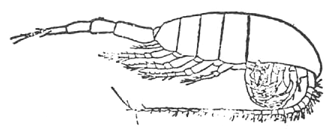
メトリヂア・ロンガ
熊田頭四郎氏が大正四年五月六日、山口県川尻御崎の北方十五浬の地点で観察した発光は、これまたすばらしいものであった。
「わが船はサバ漁の目的で前記の地点に夕方到着した。午後七時、長さ一千メートルの流網はキャンバス・ポラッド及び浮樽二十一個と浮燈三個を海面に留めて、一文字に投ぜられた。…午後十時には海面全く死したる如く、網具のすれる音さえなかった。船首に立って網を見張っている際にはるか東北方に当たって、荘厳なる光の一群を海面に認めた。……遠くこれを望む時は、水平に投射されたサーチライトを遠方から見るようで、しかも柔らかみを持っていた。光芒群は刻々に移動して、ついに網の半部をかすめたと見る間に、光は十数個の煌々たる青白い火柱になった。……最初のこの光群は幅五百メートル、長さ六、七百メートルほどであったと思われる。須臾 にして第二回の光群が襲来した。その進行方向は確かに本船に向かっていた。遂に光群の三分の一の部分で本船に衝突した。壮絶快絶、船はアーク灯下に照らされるようで、船首、手綱、舷側等は、特に一種名状することの出来ない強い凄い青光を放った。……翌日未明網を揚げて沿岸に走った。採集した材料を昨夜のものと比較して、全く同一種類であることを知った。検鏡の結果、ピロシスチス・シュウドノクチルカのみであることを知った。」
右の二つの例によって、特殊な事情のもとにおいては、顕微鏡的の微生物であるプランクトンが、非常に強烈な光を発することが知られる。遺憾ながら、昭和八年三陸津浪の場合には、津浪襲来直前における三陸沿岸水域のプランクトンの種類とその密度についての資料が全くないのである。従って発光の原因を直ちにプランクトンに帰することは、早計のそしりを免れないであろう。しかしその光が海中から発したことは確実であり、また一方に、寺田寅彦博士の指摘された如く、電光でもなく、いわんや送電線のショートや山崩れの発光でもなく、地下の割れ目の発生による放電や、地下水の移動による電位差に起因する空中放電とも考えられないとすれば、残る一つの可能性は、発光性プランクトン群が、津浪による海水の擾乱のために刺激されて、一斉に発光したということである。少なくとも釜石の場合には、津浪が湾口に到達した時に、光が放射されたことは疑う余地がない。従って、発光を見て直ちに高地に避難すれば、津浪に流される心配はないはずである。災害防止の方面からも、この現象は閑却すべきでないと思うのである。
［＃改丁］
［＃ページの左右中央］
第二部――地震雑筆
［＃改ページ］
日独協会の機関紙「ヤマト」の一九三一年第六冊に、カルル・ヘーネルという鉱山技師が面白い話を書いている。南アメリカのアンデス高原の鉱山で坑夫をしているクロインディアンは三十分ないし四十五分前に地震を予知して、坑内から逃げ出すというのである。またコルディエラ地方で生活をしているケチナ族も、同様に地震を予知して生命の安全をはかるという。
ヘーネルの記す所によると、地震の起こる前にまず空中に一種独特のキラキラする光が現れ、閃光を発する。極光に似た淡い黄緑色の光が、太陽を薄霧のようにおおい、まるで太陽が薄絹で包まれたように見える。それについで気温がいちじるしくくだり、呼吸が減じる。またこの山地に来てまもない人々やヨーロッパ人が悩まされる鼻血、頭痛、
ヘーネルは、ボリビヤとペルーの高原で、このような現象を、六年間に八回経験したと言う。その中最初の経験は、一九〇六年四月二十六日、チリのヴァルパライソ市を破壊し二万人以上の死者を生じた大地震の時だった。一九三一年一月十四日のメキシコの大地震の前にも、コルディエラ山地で観察される現象と全く同じ現象を認めた。ヨーロッパへ帰った後も、一九三一年六月十九日に、イングランドで、同じような黄緑色の光、磁針の偏向、寒波の現象が、地震の数時間前に観察された。とヘーネルは記している。
地震に先立って現れる特殊な大気中の現象について、ヘーネルの記しているところは、大体右の通りである。右の特殊な現象が実際地震と関係があるかどうか、また地震と関係があるとすれば、どんな機構でこの現象が現れるか、これは現在のところだれにも説明は出来ないであろう。
日本にも大気中の現象によって地震を予知したという話、特に坑夫が地震を予知して、坑内からのがれたという話がある。真偽は保証出来ないが、南アメリカ原住民の地震予知とかなりよく似ている点が面白い。
「地震考」と言う古い本に、老朽な百姓は畑を耕す時、煙のようなものが地面から出るのを見て、まもなく地震のあることがわかる、また雲の近くなるのは地震の前徴で、これは雲ではなく「地気」がのぼるのだと書いてある。この「地気」とはいかなるものか、「和漢三才図会」や西川如見の「怪異弁断」などにも出ていない。
寛文二年（西暦一六六二）五月一日近畿地方大地震の日には、朝から空が「もうもう」としていたと当時の記録に書いてある。これも「地震考」の筆法でいうと「地気」がのぼったのであろう。
享和二年（西暦一八〇二）十一月十五日佐渡大地震の日に、広島某という人が、
前記の広島氏が、地震後に佐渡の
それでは地震の前にどんな徴候が現れるのかと重ねてたずねると、地震の起こる前には坑内に「地気」が立ちのぼって、近くにいる人々も互いに腰から上はかすんで見えないものだ、と答えたそうである。この話も「地震考」にのっている。
これは安政二年の江戸大地震の時のことである。ある旗本の門番が、夕方天を仰いでいたが、やがて家へ駈け込んで来て、今夜は必ず大地震があるとて、急いで飯をたき、用意万端整えて待っていると、果たして大地震が起こった。主人が後でその理由を尋ねると、答えて言うには、私は文政十一年（西暦一八二八）に越後三条で大地震にあい、信州で弘化四年（西暦一八四七）の大地震を経験した。三条にいた時、ある物知りから聞いた所では、大地震の前には天がどんより曇って近く見え、星が平素の倍も光り、暖かいものである。それを聞いてから毎晩空を仰いで注意しているが、弘化四年の大地震の前夜には、星の光が大きく見え、スバル星の中の小さい星までよく見えた。しかるにこの一両日この方、空模様が常と異なり、弘化の地震前の状況に似ているので、大地震の前徴だろうと考えたのであると答えたという話がある。
元禄十六年（西暦一七〇三）の関東大地震の前に、天野弥五左衛門という老人が、星が低く見え冬暖かな年は大地震があると言って、家屋を補強したという話もある。
前記のヘーネルは、地震の起こる前に太陽が薄絹でおおわれたように見えると言っているが、同じような例は外にもある。フンボルトは、地震の起こる直前に、赤味がかった霧が現れる、自分もしばしば観察したことがあると言い、また一九〇八年メッシナ大地震の時は、天気模様が甚だ奇怪で、霧が突然メッシナ海峡に立ちこめたといわれている。
カルル・ヘーネルの記事とそれと関連した話を右に列挙した。「話」と言ったのはそれらの記載が多少眉唾の気味があるからである。
筆者は大地震に前駆的現象のあることを疑わない。地形変動並びに地下水、地電流、地磁気、土地の傾斜の変化が大地震に先んじて現れることは疑いない。しかし大気中の特殊な現象が地震に先立って現れるということは、我々の現在の知識では考えられないのである。今日でも大気中の特殊な現象によって地震の予知が出来ると称する人があるが、筆者はそれを信ずることが出来ない。念のために附記するがその人は科学者ではない。
［＃改ページ］
世界一の地震国である日本に、地震現象を表現する言葉がない、と言ったら多くの人は、そんな馬鹿なことがあるものかと、いきり立つであろう。しかし嘘でも偽りでもない、正真正銘の事実である。中には、たった今貴様が使った「地震」と言う言葉があるではないかと、反駁する人があるかも知れない。こんな事は言うだけ野暮だが、「地震」と言う言葉は、お隣の中国からの借り物で、固有の日本語ではないのである。もし中国の文字や学問が輸入される以前に、日本で使われていた「地震」を意味する言葉があったら、教えて頂きたいものである。
日本には、昔の昔の大昔から、多くの地震が発したに相違ない。また大地震もしばしば起こったに相違ない。日本民族が、最も古い時代から、集団生活を営んでいた北九州、日向、出雲、大和、これらの地方はいずれも有史時代において、少なくとも一度は、大地震のあった土地である。従って上代の日本人は、現在の我々と同様、しばしば大小の地震を経験したはずである。それにもかかわらず、「地震」を意味する言葉がないのは、全くもって不思議千万と言わねばなるまい。
地震の記事が日本の歴史に初めて現れるのは、「日本書紀」の允恭天皇五年（西暦四一六）七月十四日の条で、「五年秋七月丙子朔巳丑地震」と書いてある（丙子朔は七月一日が丙子に当たるという意味、従って巳丑は十四日である）。「日本書紀」では、この「地震」を「ナヰフル」と読ませてある。「ナヰフル」の「フル」が「震う」の意味であることは、言うまでもないが、問題はその上の「ナヰ」である。
この「ナヰ」の意義については、さまざまな解釈が発表されている。「土佐国群書類従」の中に、次の記事が掲げてある。スサノオノミコトが高天原にのぼって行った時、大海がとどろき、山や岡が鳴動したと言う。これは確かに地震である。スサノオノミコトは、平素子どものように泣きわめく癖があったから、地震を「泣きゆり」と言ったのが、転じて「なゐ」となった。これは実に驚くべき珍説で、全く問題にならない。
畑銀鶏の「
新井白石の「東雅」には、「ナヰ」は「鳴る」「フル」は「動く」で、すなわち鳴動の義だとある。大槻文彦の「言海」には、白石の説を少し修正して、「鳴り居る」の意かと書いてある。
白石、大槻、この二人の説も筆者は承服しかねる。地震現象の中で最も人の注意をひくのは何と言っても震動であって、鳴動ではない。また鳴動はすべての地震にともなうものではない。他の国の地震を意味する言葉を調べて見ても、たとえば、英語の Earthquake、ドイツ語の Erdbeben、フランス語の Tremblement de terre、イタリー語の Terremoto、中国語の地震及び地動、いずれも地の震動の意味である。日本の「ナヰ」だけが例外とは、どうも合点がゆかないではないか。
国学者の加茂季鷹は「ナヰ」は「ナユリ」のつまったので、「ナ」は「魚」、「ユリ」は「揺り」で、魚が尾鰭を動かすように地面が揺れるからだと言い、また秋山某は、「ナユリ」は「波揺り」の義だろうと言う。いずれも根拠が薄弱である。「ナユリ」が「ナヰ」に転化することは言語学上ありえないそうである。
地震学者の今村明恒博士は、「ナヰ」をアイヌ語で解釈した。今村博士の説によると、アイヌ語の「ナイ」は「平坦な土地」の義で、
今村博士は、明治二十七年東大を卒業すると同時に、中村清二博士と共に交通極めて不便であった北海道の磁気測量に従事され、その間にアイヌ語を覚えたのだが、「ナヰ」をアイヌ語で解釈するのは無理であろう。第一、アイヌ語の方は「ナイ」で、ここで問題になっているのは「ナヰ」、発音からして違う。失礼な申し分ながら、雉子も鳴かずばの嫌いがないでもない。
「ナヰ」の語源論の中で最もすぐれているのは、
次に、「ヰ」は場所そのものの存在を明らかにする場合に使う言葉で、雲を雲井、田を田井、官を官居、
新村博士の説は大体右の通りであるが、おそらくこれは動かしがたいものであろう。
ようやくのことで「ナヰ」の意義が明らかになり、「フル」という動詞がそえてある理由も判明した。上代においては、地震現象を表す名詞がなかったので、「ナヰフル」すなわち「地面が揺れる」と言う子どもじみた表現をしたのである。
日本のような地震の多い国に、中国から「地震」と言う名詞が輸入されるまで、地震現象を表す言葉がなかったのはなぜだろう。思うに上代の日本人は日蝕、大風、雷電の如き自然現象ほどに、地震現象に対して関心を持たなかったのではあるまいか。日本の神話の中に、地震現象が全く現れないと言う事実は、筆者の想像を裏書きしてくれるように思われる。
日本の神話の中には、自然現象に基づいて作られたと考えられる話が含まれている。例えば、ヒコホホデミノミコトが海神から
アマテラスオオミカミの岩戸隠れは、皆既日蝕と解釈するのが最も合理的である。この神話の要点だけを抽出すると、要するに、天地が突然暗黒になった、人々が驚き怖れて宗教的儀式を行ったら、天地が再び明るくなったというのである。明らかに皆既日蝕である。岩屋の外の騒ぎが甚だしいので、アマテラスオオミカミが岩屋の戸を細目に開いてのぞき見たと言う叙述は、皆既が終わって太陽の一端が現れる時の状態そのままである。
北米インディアンの一派のイロコワ族は、太陽をしいたげる悪霊を駆逐すべく、太鼓を打ち鳴らしてわめくという。古代のスカンディナヴィア人は、日蝕は三頭の狼が太陽を食おうとするためと考えて、金属の器物をたたき、大声をあげたということである。また中国では日蝕の時に太鼓を叩く習慣があったことが、荀子に［＃「荀子に」は底本では「筍子に」］書いてある。後世になると単に儀礼的になったが、始めはイロコワ族などと同じく、太鼓を叩いてわめいたのであろうと想像される。
話が少し横道にそれることを許されるなれば、岩戸隠れの話をもう少し続けたい。
天の岩戸の前で、ウズメノミコトが神がかりの状態になって踊り狂ったと、古事記に書いてある。ウズメの踊りは、北東アジア一帯に行われているシャーマン教の巫女の祈祷の状態そのままである。ウズメの踊りは遊戯的のそれではなくて、真剣な祈祷であったに違いない。
ウズメが体のある部分をさらけ出して踊ったとも書いてある。その部分には霊力が宿っていると信じられていたので、その霊力によって光明を取り戻そうとしたのであろう。
このような事を言うと、信用しない人があるかも知れないが、未開人と現代の文化人とでは、者の考え方が違う。未開人は実際その部分に神秘的な力がそなわっていると考えていたのである。ひいては形態が右の部分と酷似する一種の貝までが尊ばれ、ついには通貨として使われるようにもなったのであろう。
余談が余りに長くなった。話を前に戻すことにする。前に述べた如く、日本の神話の中には、自然現象の要素が含まれている。それにもかかわらず、地震に関しては、全く痕跡も認められないのはなぜだろう。思うに、上代においては、庶民は穴居か掘立小屋、貴人でも「アシヒトツアガリノミヤ」などという粗末きわまる家に居住していたので、たとえ大地震が突発しても、被害と称すべきものはほとんどなかったのであろう。震害がないとすれば、地震を恐怖することもなかったであろう。従って日本の神話の中に、地震に関するあるいは地震現象を暗示するような説話が含まれていないのではないかと、考えられぬこともないようである。
［＃改ページ］
明治二十七年六月二十日午後二時ごろのことである。廐橋に近い浅草三好町のある銭湯の女湯では、何人かの女が体を流しながらよもやまの話に花を咲かせていた。その時である。突然けたたましい響きと共に銭湯の建物ははげしく揺れ出した。すわ大地震と今までののどかさとは打って変わって浴場は阿鼻叫喚の地獄と化した。
ある者は悲鳴をあげて逃げ惑い、ある者は丸裸で外へ飛び出した。その大混乱のうちに一人だけ流し場にペタリと坐って、幼い子を固く固く抱き締めているお神さんがあった。その抱かれていた子供こそ当時わずか三歳四カ月の筆者であり、抱き締めていたお神さんは筆者の養母であった。この時風呂屋が倒壊したら、つぶされた上に生きながら火葬にされたであろうが、幸い倒壊を免れたので、筆者も無残な最期をとげないですんだのであった。その代わり長年苦労をし続けたあげく、六十過ぎた今日なおこんなつまらぬ雑文を書いて生き恥をさらすような仕儀となった。どちらが幸いだったかわからない。
阿鼻叫喚の地獄と言ったが、それは想像で附け加えたおまけである。丸裸で逃げ出した女たちのことも後になって養母から聞かされた話で、筆者自身はいっこうに覚えがない。今でもありあり記憶に残っているのは、浴槽のお湯が怒濤のように数回にわたってザブリザブリ流し場にあふれ出た物凄さと何が何やら訳も分からずにただ怖ろしさに養母の体に固くしがみついていた哀れな自分の姿だけである。
やがて震動がしずまり、迎えに来てくれた養父に抱かれて外へ出ると、隅田川を越してはるか東の方に火事の煙がもうもうと上がっているのが見えた。これが筆者にとって最も古い地震の記憶であり、また最も怖ろしかった経験でもある。
この地震は実は大したものではなかったのである。大地震番附を作るとしたら、たかだか幕下級であろう。この地震は埼玉県鴻ノ巣・岩槻附近から亀有・亀戸辺に至る地帯の地下に潜んでいる地震鯰が少しばかり身震いをしたに過ぎなかった。その少しばかりの身震いのために、東京市内で数十軒の家が破壊され、百八十一人の死傷者を生じたのだから、身震いといっても馬鹿には出来ない。
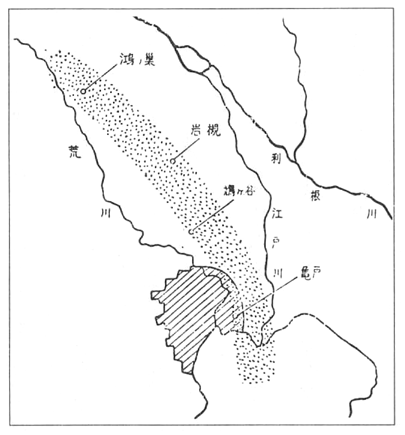
東京東部を通る地震帯
元来この方面に棲息する地震鯰は大した
東京附近から東京都内にかけて、このような物騒な怪物が地下に棲息しているが、この鯰とは比較にならぬ威力をもっている大鯰が相模湾の海底にすんでいる。この鯰があばれ出すと、関八州はとてつもないばくだいな損害をこうむる。関東地方はこやつのために幾度となくひどい目にあわされた。大正十二年の関東大地震はその一つである。この地震の被害は一府三県にわたり、全壊半壊合わせて二十五万戸、焼失四十五万戸、津浪による流失八百六十八戸、死者と行方不明を合わせると、十四万人、これだけの数字を見てもいかにこの鯰の勢力の偉大であるかがうかがわれる。正に原爆に匹敵する被害である。
大正十二年の大震災についで、翌年一月十五日にも大地震があり東京でも全壊半壊合わせて百戸という被害があったが、これは丹沢山の鯰の仕業で、この鯰は東京に甚大な被害を生ぜしめるほどの力はない。
このような地震鯰が日本全土の陸地内にも海底にも無数に棲息して、機会があれば大地を震撼し人類に脅威を与えようと四六時中待機しているのである。鹿島明神一柱ではとうてい衆寡敵すべくもない。中でも濃尾地方、三陸沖、東海道沖、南海道沖等の地震鯰は、いずれ劣らぬ堂々たる横綱の貫禄をそなえた大物中の大物である。
現在ではそれらの地震鯰の棲息地とそこに棲んでいる鯰の大小強弱は大体見当がついている。従って将来大地震の起こる可能性のある土地とその土地から発現する大地震の最大限度とは、ある程度まで指摘できる。
故大森房吉先生によると、大地震は決して同じ場所から再び起こることはないという。先生は機会あるごとにこの説を反復された。もし先生のお説が誤っていないとすれば、一度大地震の洗礼を受けた土地は、未来永劫大地震から免疫になり安住の地となるはずである。それならば誠に好都合であるが、不幸にして筆者は先生と見解を異にする。筆者は先生の地震学に対する甚大なる貢献に敬意を表する点においては人後に落ちないつもりであるが、そうかと言って先生のお説に盲従することは、筆者の良心が許さない。
筆者の信ずるところでは、各々の地震鯰は常に一定の場所に棲息して、彼らの生命の続く限り時々身震いをし寝返りを打つのである。論より証拠、同一地点から発現したと推定される古来の大地震の例は、お望みとあれば幾つでも取り出してお目にかける。
従って一度大地震のあった土地は、安全な土地どころではなく、おそかれ早かれ再び大地震におびやかされる運命にあることを忘れてはならぬ。
のみならず地震鯰の活動は意外に早く繰り返される場合がある。明治二十九年六月十五日三陸沖の海底から大規模な地震を発しその副産物なる大津浪で二万七千人が溺れ死んだ。この地震津浪は途方もない大きいものであったから、三陸沖鯰は百年くらいは休養して鋭気を養うだろうとたかをくくっていると、意外にもわずか三十七年後の昭和八年三月三日ほぼ同じ地点からほぼ同じ程度の大地震大津浪が起こり、約三千人の溺死者を生じた。油断大敵である。もっとも考えようによっては三十七年後に大津浪が繰り返されたのはもっけの幸いである。もしかの大津浪が、前回の津浪を経験した者が一人残らず死に絶え、津浪の被害が全く忘却された時分に襲来したら、その損害は更にいっそう甚だしかったかも知れないのである。
一度大地震があると少なくともその後数年間か数十年間は大丈夫であろうと誰しも考えるであろうし、また大体においてその通りである。また大地震があると例外なく大小の余震が発生する。余震は、多少の例外はあるが、大体において破壊的なものでない。それなら大地震の後しばらくの間は安心してよろしいかというと、そうもいかないのである。
時として一匹の地震鯰が二回続けて寝返りを打つことがあるのである。振動が止んでやれ安心という時に再び大地震に見舞われるのだから誠に始末がわるい。しかも二回目の地震の方が最初の地震より強いのが普通である。明治三十一年八月の福岡県糸島郡の地震は十日と十二日と二回続発し、大正七年十一月十一日長野県大町の地震の場合には、十三時間の後に二度目の地震が起こった。
なおその上に、と言うとまだあるのか、いい加減にしろと仰せられる向きもあろうが、あるのだから致し方がない。というのはこういうわけである。ある土地の地震鯰があばれると隣接地域の鯰がつまらぬ義理を立てておつき合いにあばれ出すことが、これまたまれでないのである。
近年の例を一、二あげて見ると、大正十二年九月一日相模湾の大鯰が大あばれにあばれたおかげで東京の二分の一が焼け野原になったが、翌十三年には丹沢鯰、七年後の昭和五年には伊豆鯰が活躍した。そのために芦ノ湖畔の箱根町の如きは二回全壊のうきめを見たのである。
大正十四年但馬北部の鯰があばれ出し、翌々年の昭和二年には東隣の奥丹後半島の鯰が大いにあばれ、その結果両震源地の中間地域では、二年間に二回同じ程度の震害をこうむることになった。
古い例を一つあげると、安政元年十一月四日東海道沖の大鯰が活動し、大津浪をともない、プチャーチンの率いるロシヤ軍艦ディアナが下田で沈没するという騒ぎも起こったが、翌五日正確に言うと約三十二時間の後、今度は南海道沖大鯰が大いにあばれて、この地震にも津浪をともなった。従ってある地方では二日続けて同程度の大地震大津浪に襲われる結果となった。
それだから大地震があった場合に、人心安定のためにもう心配はないとは言うものの、本当のところを言うと、ある大地震の時某村役場に掲示してあったように、「心配するな、ただし油断するな」である。
地震鯰の活動が何年目に起こるかということがわかっていると、震災予防の上にきわめて都合がよいが、地震鯰ははなはだ気紛れで、いつ身震いするか、いつ寝返りを打つか、その予想がむずかしい。
中にはかなり周期的に鯰の活動する土地もある。南海道沖の大鯰の如きはその一つで、少なくとも過去においては、約百年に一回の割合で活動を繰り返した。また関東地方に重大な関係のある相模湾鯰は、多少の仮定を許されるならば、約二百年の周期をもって活動が繰り返されたように見える。しかしそれとても、百年内外、平均二百年くらいという頼りない話である。
今村明恒先生が指摘したように、秋田県
このような例を並べ立てると、これらの土地では約千年の周期をもって地震鯰の活動が繰り返されるものの如く見えるであろうが、わずか二回の地震に基づいて周期的に大地震が起こると断定するのは早計である。これが真の周期であるかどうかは、今後数千年間の地震鯰の活動の経過を見きわめた上でなければ、確かなことは言われないはずである。
原爆被害者の写真を見ると戦争のむごたらしさを痛感しないわけにはゆかない。戦争は当局者同士の話し合いで避けることが不可能ではあるまいが、地震鯰の活動は今のところ人間の力で防止することが出来ないから誠に始末がわるい。のみならず大地震の被害は時として原爆水爆の被害に劣らないのである。
耐震耐火の家を建てて大地震にそなえるのはもとより必要だが、この方法は消極的である。もし何らかの方法によって大地震の発現する前に叩きつぶしてしまうことが出来れば、それに越したことはない。
藤原咲平博士は中央気象台長の地位にあった時、台風が国土に接近する前に原爆で叩きつぶしたらどうかと言われたことがある。この方法は原爆を所有している国が実行する意志さえあれば可能であろう。
今村明恒博士は、火山の内部に大爆発をひき起こすだけの勢力が蓄積されぬ中に、火口に爆弾を投げ込み、小爆発をうながすことによって、大爆発を未然に防ぐことが出来るだろうと考えた。この方法は可能性の点において前者よりやや劣るかも知れぬが、そうかといって全然望みがないとも言われまい。
幸いに日本に棲息する主なる地震鯰の棲息地は大体見当がついている。この鯰共が大活動をしないうちに撃滅する方法はないであろうか。言葉をかえて言えば、地殻内のある部分に蓄積されるエネルギーを少しずつ小出しに放出させる方法はないだろうか。この問題はもとより困難には相違ないが、やる意志さえあれば不可能ではないかも知れない。研究者が少しはこの方面にも関心をもってもらいたいものである。
［＃改ページ］
近年わが国にはやつぎばやに大地震が発生した。最近十数年間に起こった大地震をあげてみると、昭和十四年男鹿半島、同十五年積丹半島沖、同十六年長野、同年日向灘、同十八年鳥取、同年野尻湖附近、同十九年東南海、同二十年三河、同二十一年南海道、同二十三年福井、同二十四年今市、同二十七年十勝沖、同二十八年房総沖とほとんど毎年大地震が発現した。その中でも昭和十九年の東南海地震及び昭和二十一年の南海道地震は、共にその規模が雄大で、広範囲にわたって莫大な被害を生じた。
わが国古来の地震の歴史を調べて見ると、大地震の相ついで発した時期と比較的大地震の発現の少なかった時期があった。今村明恒博士によると、わが国の有史時代に三回の地震活動旺盛期があり、そして弘化四年（西暦一八四七）以後は第三回目の旺盛期に当たるという。しかし右の第三旺盛期はいつまでも継続するのか、それとも既に終わったのであるか、それはもうしばらく地震活動の経過をみなければ、確かなことは言われない。
前に記した如く、近年わが国の地震活動は活気を呈していた。この活動はまだしばらく継続するかも知れず、近き将来にいずれかの地域から大地震の発現を見ることもないとは保証しかねるのである。それでは次の大地震はどの地域から起こるであろうか。この問題に対して正確な解答を与えうる人は、日本国中探し求めてもおそらく一人もいないであろう。
適中率が相当に高いといわれる我が国の天気予報程度の地震予報が公示されることは、本邦の如き地震国ではきわめて望ましいことではあるが、地震の予知予報がその域に到達するのは遠い将来であろう。
そのような正確な予報は今日すぐには望めないとしても、きわめて大ざっぱな予報、すなわち将来かくかくの地方に大地震があるだろう、そしてその規模は最大これこれの程度であろうというくらいのことであれば、現在でも必ずしも不可能ではなさそうである。日本地震史調査の結果から、大地震の発現する可能性のある地域とその地域から発現する大地震の規模はある程度見当がつくように思われるからである。
この本の中に一度書いたことがあるが、大森房吉博士は、大地震は同一地点から決して発現しないという見解を生涯堅持していたようである。しかし日本の地震の歴史をくわしく調べると、同一地点とは言われぬかも知れぬが、少なくも同一地域から大地震が再び発現したことは決してまれでない。むしろ一度大地震のあった地域は、二度も三度も繰り返して大地震に見舞われる可能性があると言う方が真実である。
一々例を挙げることは煩わしい。その上この本の別の所で若干の例を示したから、ここではなるべく重複しないような例をあげることにする。仁和三年（西暦八八七）と弘化四年（西暦一八四七）の信濃北部大地震を比較すると、激震区域といい被害状況と言い、符節をあわす如くである。三陸沖の海底から古来しばしば大規模地震を発し、大津浪をともなった最大級の津浪だけを拾っても、貞観十一年（西暦八六九）、慶長十六年（西暦一六一一）、明治二十九年、昭和八年の四回あり、いずれもほぼ同じ地域から発したようである。南海道沖もまた大規模地震のしばしば起こる所で、天武天皇十二年（西暦六八四）、仁和三年（西暦八八七）、正平十六年（西暦一三六一）、慶長九年（西暦一六〇五）、宝永四年（西暦一七〇七）、安政元年（西暦一八五四）、昭和二十一年に大地震を発したが、これらの場合もほぼ同一地域から発現したようである。
また地震の規模について言えば、これも地域が大体一定している。最大級の大地震の起こる地域は、三陸沖、相模湾、東海道沖、南海道沖濃尾地方等に［＃「南海道沖濃尾地方等に」はママ］限られている。それにつぐ大地震は信濃北部、琵琶湖附近、日向灘、北海道東方沖などから発し、その他の地域から起こる地震は、上記の地域の地震にくらべて、比較的規模が小さいようである。
将来東京の直下又は附近から大地震が起こって、甚大な被害を生じる可能性があるであろうか。それとも東京の地は地震に関して全く免疫になっているのであろうか。これは東京に居住する者にとって大問題でなければならぬ。この問題については、筆者は遺憾ながら将来いつかは大地震に見舞われるであろうと答えざるを得ないのである。なぜこのような悲観的な予言をあえてするかと言うに、東京の地は古来幾度となく大地震によって損害を蒙った経験をもっている。そして前述の如く、過去において大地震の経験のある土地は、将来もまた大地震によっておびやかされる可能性があるからである。
東京に大いなる被害を生ずるような大地震は、東京の直下あるいは附近から発現するだけでない。相模中部及び相模湾から発する大地震によっても損害をこうむる。すなわち東京はこれらの三地域から起こる大地震によって、何年に一度は大なり小なり破壊される宿命をもっている土地と言わなければならぬ。
過去において相模湾から発現し、関東全域に被害を生じたと推定される大地震は、（一）弘仁九年、（二）永仁元年、（三）永享五年、（四）元禄十六年及び、（五）大正十二年の五回である。
弘仁九年（西暦八一八）の地震は、その詳細は明らかでないが、被害が甚大であったことは、当時の詔勅によって想像される。
永仁元年（西暦一二九三）の地震は鎌倉時代の被害のみが伝えられて、他の地方の被害状況が明らかでないが死者二万人と言われ、また「諸国大地震」などと記されてあることによって、三浦半島から発した局部的地震とは考えられない。多分関東全域にわたる大地震であったろう。
永享五年（西暦一四三三）の地震は、鎌倉に被害があり、利根川の水が逆流したと伝えられる。利根川が逆流したという事実は、相模湾から発した津浪が東京湾に侵入し、更に当時東京湾に注いでいた利根川を遡ったと考えるのが最も合理的な解釈であろう。
元禄十六年（西暦一七〇三）及び大正十二年の地震は、時代が新しいためにその状況が詳しく知られているが、両者の震域、津浪、地形変動等が全く同一で、共に非常な被害があった。将来相模湾から大地震が発現する場合には、大正十二年程度の被害があるものと覚悟していなければならぬ。
右に述べた五回の大地震の時間的間隔を調べて見ると、四百七十五年、百四十年、二百七十年、二百二十年となり、弘仁・永仁両地震の間隔が、他の場合とくらべて、非常に長いことが気づかれる。ことによると、弘仁・永仁両地震の間に洩れた地震が一回あったのではあるまいか。上記の如き仮定のもとに各地震の間をかぞえると、平均二百二十一年となり、元禄・大正両地震の間隔とほぼ等しくなる。もしかりに将来も過去と同様の間隔をおいて大地震がこの地域から発現するものとすれば、百五十年ないし二百年に一回の割合で大地震が起こる勘定になるが、もとより仮定に立脚した議論だから、果たして右の通りになるかどうかはその時になって見なければわからない。予想を裏切って思いのほか早く大地震の発現することもないとは言われぬから、右の結果を過信して、今後百年くらいは相模湾から大地震の起こることはあるまいとのんきにかまえるのは考えものである。
相模中部から発現する大地震は、相模湾から起こる地震にくらべると、規模が小さく、従って被害の範囲もせまく、その上発現の回数も少ない。しかしこの地域から発する大地震も東京に相当の被害を生じるので、これまた警戒を要する。元慶二年（西暦八七八）及び大正十三年の地震はこの地域から発したもので、前者では相模・武蔵両国の民家がことごとく倒壊破損したと伝えられ、後者の場合には東京市内のみでも全壊二十五戸、半壊七十八戸を生じた。
埼玉県
江戸時代にこの地帯から発したと推定される大地震は、元和元年（西暦一六一五）、慶安二年（西暦一六四九）、安政二年（西暦一八五五）の三回で、明治時代に入ってから明治二十七年の地震が起こった。
右の四回の大地震はいずれもその被害がはなはだしかったが、とりわけ安政二年十月二日夜の十時ごろに発した大地震は、亀有、亀戸の辺りが震央であったものの如く、すなわち江戸の直下から発した地震であったので、江戸市中は非常なる損害を蒙った。死者の数は
明治二十七年六月二十日午後二時ごろに発した地震は、前者にくらべれば被害が少なかったが、それでも東京市内で二十四人の死者を生じた。この地震は前記の地震帯の中の安政地震の震央よりやや北方から発したようである。
十七世紀以後において東京（江戸）、相模湾、東海道沖、及び南海道沖から発した大地震を表にすると次の如くなる。
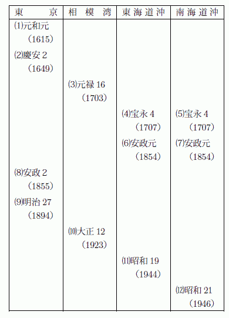
（４）と（５）は同日同刻に発した。（７）は（６）の32時間後に発した。
この表に掲げた十二回の地震がきわめて規則正しく一定の順序に従って発現したことは、一瞥して看取されるであろう。すなわち二回の東京地震に始まり、ついで相模湾から大地震が起こり、最後に東海道沖及び南海道沖の各々二回の大地震で一回の輪廻が終わる如く、再び二回の東京地震から同じ順序で地震が発した。しかも元和・慶安両地震の間隔は三十九年、安政・明治両地震のそれは三十三年、ほぼ等しいのである。これが偶然であろうか。偶然と考えるのはあまりに規則正しいようである。
もし将来もこの順序で大地震が起こるとすれば、東京が安政程度の激震に見舞われるのは遠い将来のこととなって、きわめて望ましいことではあるが、何しろ十七世紀以後という比較的短い期間について調べた結果であるから、今後長い期間における地震活動の経過を見なければ確かなことは言われないのである。
前述の如く東京及び東京附近には大地震の発現する可能性のある地域が三つもある。その中相模中部は比較的重要でないが、他の二つの地域に対してはたえず厳に警戒を続けるべきである。また一方東京に居住する人々は東京の地が地震に関して決して安全でない。いつ
［＃改ページ］
今村明恒先生が亡くなられてからかれこれ九年になる。なろうことなら学者としてまた人間としての先生の全貌を後世に伝えたいとは思うが、それは筆者にはとうてい出来ない相談である。誰かやってくれる人はいないかと物色しても、中村清二先生を除いては適任者が見当たらない。といって中村先生はすでに八十何歳、筆をおとりになるのがおっくうかも知れない。そこでせめて自分の知っていることだけでも、関係者にあまり迷惑を及ぼさない範囲で、書き留めておきたいと思い立ったのである。これだけのことでも今の中に書き残しておかなければ、すべてが跡形もなく消えてしまう。それは筆者にとって忍びがたいことである。
先生の先祖今村
昭和十四年の夏、先生は日々帝国学士院に通い「出島蘭館日誌」について英生の事績を調べた。「出島蘭館日誌」は長崎出島にあったオランダ商館の記録で、寛永十八年に始まり幕末で終わる非常に大部のものである。原本はハーグのオランダ文書館にあるが、その複写が日本学士院に保管されているのである。いうまでもなくこの日誌はオランダ語で書いてある。先生は「和蘭語四週間」によってオランダ語を独習してこの記録を読んだ、そして英生に関する数十項の重要記事を写しとったのである。その結果今村英生が白石のために通訳を勤めたばかりでなく、博物学特に薬物学に関する知識も豊かで、オランダの書物を翻訳した最初の人であったことも明らかになった。
先祖の英生と末孫の先生とが申し合わせたように新たに一つの国語を修得して、共にそれを使って重要な業績を残したということは、思えば不思議な因縁である。
先生は明治八年満五歳で小学校に入学した。その学校の教務主任三原佐吉という人が先生の家を訪ねて、この子は将来必ず家を興こしお国の役に立つに相違ない、大事に育てなさいと言ったそうである。
理学博士 今村明恒
（1870〜1948）
（1870〜1948）
先生の叔父に
この叔父がある時先生の母堂に向かって、常は見込みのある子だ、特に大切になさい、と言ったそうである。「常」とは「常次郎」のことで、先生の幼名である。
三原先生や大河平叔父が先生の将来に望みをかけたことから想像すると、幼年時代の先生はいわゆる神童ではなかったが、どこかよい意味で他の子供と違うところがあったのであろう。
先生がある日大河平叔父の家へ行くと、叔母が「フズキ」を一つとってくれという。「フズキ」は「ほおずき」の方言である。先生は「フズキ」なんてものはありませんといっかなきかない。「そこにあるではないか」。「あれはフズキではありません、ほおずきです。」「どうだっていいではないか。」「いけません、ほおずきをとってくれといわないうちはとりません。」先生はとうとう強情を張り通したということである。かげでこの押し問答を聞いていた叔父がおもしろがって、一冊の本をくれたそうである。
相手の欠点を少しも仮借しない先生の峻厳な性格は、生涯を通じて変わらなかった。このような性格の人はともすると敵をつくる。この性格は先生にとって得にはならなかったようである。
明治十年西南戦争当時先生は七歳の少年であった。官軍が郷里鹿児島に迫り砲声が次第に近づくので、先生一家は、厳父一人を残して、宇宿にあった厳父の乳母の許へ避難した。ひとり家を守っていた厳父は、ある日白刃を提げた官兵に襲われ、危いところを辛うじて免れたということである。
官軍の撤退と共に鹿児島に戻ったが、薩軍が続々敗退して来るので、再び宇宿に難を避けることになった。しかしこの地も安全といわれなかった。ある日母堂が先生の弟を連れて川の畔にたたずんでいると、突然銃弾が雨霰と飛来するので、あわてて谷間に身を潜めたということである。
西南戦争の結果厳父は職を失い、先生は真正コレラにかかって九死に一生を得るなど、この年は不祥事の連続であった。
厳父は後になって鹿児島県等外二等出仕に任ぜられた。
先生の幼年時代には今村家は相当裕福で、下女下男も使い何不由なく［＃「何不由なく」はママ］暮らしていたそうである。それが厳父の過失によってたちまち貧乏のどん底に落ち込むことになった。厳父がある人に有価証券七百円全部を詐取されたのである。この証券は多分士族に与えられた金禄公債であろう。
生活はたちまち窮迫を告げ、教科書代にもことを欠く状態に陥った。明治十四年先生十一歳の時のことである。
明治十六年に先生は首尾よく鹿児島中学に入学したが、その翌年には厳父が依願免官になった。家の暮らしはますます苦しく、家具庭木まで売り尽くした。当時神戸で巡査をしていた長兄から月々二、三円の仕送りはあったが、わずか二十銭の古靴を求めることさえ容易ではなかったそうである。
豆腐の如きも、食べるのは厳父だけで、他のものは一年に数回、それも一片か半片を与えられるのみであった。副食物は明けても暮れても卯の花の味噌汁ばかりだったと言う。当時先生の最大の願望は、早く立身出世して三食とも豆腐を食べられるような身分になりたいということであったそうである。先生が、戦争のため食糧が欠乏するまで、毎朝豆腐と若布の味噌汁を欠かさなかったのは、この少年期におけるはかない望みに由来していたのかも知れない。
明治十八年に厳父が准判任御用掛を拝命して、月俸金七円を支給されることになった時には、家計いよいよ窮迫、赤貧洗うが如き時であったから、家族一同狂喜したということである。
鹿児島中学は県立中学造士館となり、再び変わって高等中学造士館となった。旧制高等学校に昇格したのである。
先生は学力試験に及第して入学の資格は与えられたが、困ったのは従来のように官費ではなくなったことであった。厳父には学資を負担する資力がない。先生は止むを得ず二人の兄君に手紙を書いて援助を乞うた。
次兄の手紙は冷たかった。大言壮語を止めて適当の職につけというのである。それに反して長兄の返事には、自分は甘んじて犠牲になるから初一念を貫けと励ましてくれた上に金六円の為替が封入してあった。当時長兄の月給は金八円に過ぎなかったのである。
先生は造士館入学を取り止め、上京して一高に入った。一高時代には薄手の冬服一着で間に合わせ、夏は網シャツ一枚、冬は小倉の白シャツで調節した。靴下は全然用いなかった。
明治二十四年東京大学理科大学物理学科に入学した。
先生が物理学科を選んだのは、全く鹿児島中学教諭渡辺譲理学士の感化であった。この恩師のおかげで物理学が好きになったのだそうである。良師を得た人は幸福である。この点は寺田寅彦先生も同様であった。
ある日菊池大麓教授の幾何学の講義がまさに始まろうとした時、先輩の大森房吉理学士があわただしく教室に入って来て先生に、濃尾地方に大地震があった。君はすぐ現地へ行ってくれと言う。先生は直ちに震災地に向かったはずでありまたこれが先生にとって最初の地震調査でもあったはずであるが、なぜか先生は当時の行動については一言半句も話されなかった。わずかに岐阜師範の舎監であった名和靖氏に会ったこと、名和氏が地震で負傷していたことを別の話のついでに伺ったに過ぎなかった。思うにこの出張は単に大森理学士現地調査の瀬踏みのためであったろうと想像される。
大森理学士が、震災地を視察して帰り、その報告会が行われた。その時先生は色々の質問を発したそうである。その質問に対する大森先輩の答えはことごとく「まだわかっていない」の一点張りであった。地震に関してこんなにもわからぬことだらけなら、自分は地震学を専攻して未知の領域を開拓してやろう、先生はこの時こう決心をしたそうである。これが先生が地震学者となる第一歩であった。
明治二十六年すなわち大学卒業の前年に先生は昌平学舎という寄宿舎を設けてそれを主宰することになった。郷里から貧書生が続々上京するので、それらの学生の面倒を見るためであった。昌平学舎の位置は始めは駿河台、ついで本郷東竹町、最後が本郷弥生町であった。最後の家だけは今も残っている。東大地球物理学教室の下にある古びた二階家がそれである。
明治二十七年七月先生は東大を卒業した。しかし卒業式には列席が出来なかった。卒業式に先立って磁気実測のため中村清二理学士（後に博士）と共に北海道に出張したからである。
当時交通機関のほとんどなかった北海道を、あるいは馬あるいは徒歩で跋渉した話は、「鯰のざれごと」（後に「地震の国」と改題）の中に「野宿」と題して面白く記されてある。その中の鹿島は先生、中牟田は中村清二先生のことである。
支給された旅費が約十円残ったので、その中から三円を投じて柳原で古着を買い、残りの金で十二月までしのいだ。
東京遊学の費用は直接には長兄から与えられたが、長兄は不足の分を岳父岡留信好氏に仰いだ。遊学五年間の学資は合計三百六十八円であった。
同年十一月三十日附で震災予防調査会から磁力実測結果計算のため、月十五円を支給されることになった。先生は早速その中から十円を厳父に送金した。これが両親に対する仕送りの最初であった。以後郷里への送金は、十円一回、十五円数カ月、令弟たちが成業して送金に参加するまで二十五円を下ることがなかった。その後の分担額十五円、ただし年末や利子支払の月には臨時に増額した。
先生は二十七歳で結婚してから続々子供が生まれて、全部で十一人の子福者であった。それだけでも大変なところに、つぎつぎに上京する弟の扶養と教育を一身に引き受け、なおその上に、両親に仕送りをしなければならなかったのである。家計の苦しさは言語に絶するものがあったに相違ない。
明治三十三年市ヶ谷佐内坂［＃「佐内坂」はママ］泰宗寺の境内に住んでいた時の如きは、多分井戸水のためであったろうが、夫人、弟明彦少尉、恩人の令息岡留肇の三人が赤痢にかかり、そのためにいよいよ生計に窮して家庭教師までもしなければならなかった。翌年地文学教書や対数表が出版されたが、これも急場を切り抜けるためのアルバイトではなかったろうか。
このような窮乏のうちにあっても、両親に対する仕送りは一月も欠かさず続けられた。
大正七年十二月厳父明清氏は先生の多年の援助に対して感謝状を送ってきた。子が親から感謝状を贈られるということは世間に余り例がない。先生の孝養の並々でなかったことを如実に物語るものはこの感謝状でなければならぬ。
感謝状にはこう書いてある。「ここに其方の功により多年の間安楽に代を送り候のこと、明治二十七年以来卒業の月より御送金なし下され、それがため拙者もこのように長命いたしたるものと存じおり候。……この間一遍の故障もこれなく、誠に感謝の至りに御座候。これのみならず明孝以下明光明徳教育上につきしかも一方ならず御配慮下されたることと、これまた低頭御厚礼申上候。ついては養子にも心配も多々ありし御事と存じ候間、同人にもよろしきよう御願申上候。以上。」
厳父は大正十年、母堂は昭和六年、いずれも満八十七歳で亡くなったが、両親の存命日数が一日も違わなかったそうである。
明治三十八年四月先生は理学博士の学位を授けられた。大学卒業当時の席次は七人中六位であったが、同級生で学位を授けられたのは先生が最初であった。六十人目の理学博士である。
先生の学位論文は、牛込区加賀町のお宅で執筆されたが、この家で生まれて先生の大の秘蔵子であった百合子さんがこの家で亡くなるという悲しい事件が起こった。ある夕方もうお父様がお帰りになる時分だと、二階の手摺りから体をのり出して見ている中に、誤って庭に落ちたのである。百方手を尽くされたがその甲斐がなかった。
先生自身執筆された「悔恨三十年」に次のように書いてある。
「百合子は誠に利巧な子供であった。亡くなったとき、歳はわずかに三年三月であったが、普通の子供のようではなかった。当時余の出勤は早かった。午前七時に授業開始の日が多かった。それでも大てい余と一緒に食事をした。そうして給仕をしてくれた。自分のお碗をよそいかけていても、余のお代わりとなるのを認めるや否や自分の方はすぐ差しおいて、まず余の方の給仕をしてくれるのが普通であった。百合子は聞きわけのよい子供であった。当時不如意がちであったので、玩具や画草紙など買ってやることもまれであったが、ただ雑記帳に絵をかいて貰うことをこの上もなく喜んでいた。そしてそれを大事にしていた。余の忙しそうな様子や不機嫌な風を見ると、無理にせがむようなことは決してしなかった。ただ「あちた書いてね」といって、折角出して来た雑記帳をまた大事にしまうのであった。」
明治三十九年は先生にとって生涯忘れることの出来ない悪い年であった。これよりさき明治三十二年に先生は明治二十九年三陸津浪の原因に関する見解を発表した。先生は大規模の海底地震にともなって起こる津浪は主として海底の広範囲にわたる地殻変動によってひき起こされると提唱したのである。この説は今では地震学上の常識であるが、当時は猛烈な反撃をうけたのであった。中でも「海底の広範囲にわたる地殻変動」は無理な仮定であると烈しく反対したのは大森博士であった。
明治三十八年雑誌「太陽」に先生は「市街地における地震の損害を軽減する簡法」と題する論文を発表した。この論文ではまず過去の大地震の災害について述べ、慶安二年、元禄十六年、安政二年大地震は平均百年に一回の割合で発生している。そして安政二年以後すでに五十年を経過しているから、今後五十年間にこのような大地震に襲われることを覚悟しなければならぬといい、次に東京が元禄、安政程度の大地震に襲われた場合の災害を予想して、合計十万ないし二十万の死者を生ずるであろうと記し、最後に震災軽減法を詳しく記され、特に石油ランプを廃止することの急務が説かれてある。全文を通読しても、多少の欠点はあろうが、要するに震災予防を論じたもので、少なくとも東京市民は感謝をもって読むべきものであった。
しかるに厄介なことが起こった。翌三十九年一月に東京二六新聞が「今村博士の説き出せる大地震襲来説、東京市大罹災の予言」と題して、最後の最も重点がおかれている震災軽減法を棚上げにして、ただ大地震襲来の可能性ばかりを書き立てたのである。これが大問題になった。大森博士は先生に取り消しを求め、先生は釈明的の手紙を新聞に載せなければならなかった。
これだけならまだよかった。またもや困ったことが起こった。翌月二十四日の朝東京湾から強震を発して多少の被害があった。その日の午後中央気象台の名をかたって午後三時と五時の間に大地震があると各方面に電話で知らせた人間があったのである。何者の仕業か知れないが、悪いいたずらをしたものである。東京市内では大騒ぎになった。
大地震の予言が如何に大なる影響を及ぼすかを大森博士は痛感したのであろう。それから以後大森博士の攻撃は今村先生の地震予報に向けられた。もとより今村先生は右の地震騒ぎの張本人ではなかったが、さきに発表した東京大地震の予報を憎んだのである。大森先生は機会あるごとに「今村博士の東京大地震の浮説」、「例の二十万死傷説」といって痛烈にまた執拗に攻撃したものである。一方先生の親切な警告は私利をはかるための浮説とそしられ、大法螺吹きと嘲られもした。
先生は恩も忘れないが怨みも忘れない人である。大森先生に対する怨みは骨髄に徹した。自分の死後東京に大地震が起こったら墓前に報告せよと夫人に命じておいた一事でも、先生の憤激の程度がよくわかる。嘘ではない。先生の直話である。
これだけではない。またしても一つの問題が起こった。大正四年十一月大正天皇のご即位式が京都で行われた。ちょうどその時上総の東部から相次いで地震が起こり、数日間に六十五回に達した。大森博士は御大典参列のため不在、留守を預っていた先生は押しかけて来た新聞記者に向かって地震活動の経過を説明した上、「九分九厘までは安全と思うが、しかし精々注意を加えて火の元などは用心するに越したことはない」と当然すぎるほど当然の注意をしたところ、これが意外な反響を起こして中には野宿をした人もあったという。
このために急いで京都から戻った大森博士は先生の不謹慎を責める、先生は躍起となって弁駁する、両先生の間の溝はますます深くなるばかりであった。
さきに記したように、大森博士は先生の東京大地震予言を烈しく攻撃した。それでは大森博士は東京に大地震が起こらぬと確信していたのかというとそうではなかった。大正十二年の関東大地震を大森博士は豪州で知り急いで帰国したが、帰りの船中で自分の予想より六十年はやかったといったそうである。大森博士はまた大地震による水道鉄管の破損について東京市の当局者に再三警告を与えている。これも東京大地震を予想してのことである。要するに大森先生は賢明で今村先生は馬鹿正直ということに帰着するであろうか。正直者が馬鹿を見るのは昔も今も変わりはない。世の中には何をいっても無条件に承認される人もあり、何をいっても非難攻撃を浴びる人もある。大森先生は前者、今村先生は後者であろうか。
ある日筆者は成城のお宅に先生を訪ねた。先生は例の通り書斎兼応接間にどっかと腰掛けていたが、いつになく元気がない。話しかけてもろくに返事もなさらない。どうしたことかと不審に思っていると、やがて「今日は呂昇の祥月命日だ、今日が命日だということを思い出しているのは、親族を除くと私ひとりだろう。」というその言葉にも力がない。いかにも淋しそうである。
呂昇とは明治から大正にかけて、美貌と美声とをもって天下の義太夫愛好者を魅了した豊竹呂昇その人である。
それなら今日は呂昇のレコードをかけて故人をしのぶことにしては如何でしょうと筆者がいうと、先生急に元気づいて、ウンそれがいい、そうしようと、それから何枚ものレコードをきき、はては先生自身が朝顔日記の素語りをする。お暇をする時分には見ちがえるように元気になられた。
筆者が先生のお手伝いをするようになってから、この時ほど先生が心から喜ばれたことはなかったように思われる。いかに先生がお喜びになったかは、この呂昇をしのぶ集いが年中行事の一つになって、お亡くなりになるまで毎年続けられたことによっても想像できる。
話は四十年の昔にさかのぼる。濃尾大地震満二十五周年記念日の夜、先生は広島から大阪に向かう一等車にのっていた。車中に一人の老紳士がうとうと眠っている。どこかで見たことのある顔だなとは思ったが思いだせぬ。その中に
先生の先夫人は義太夫が好きで、呂昇をききに行きたいとしきりにせがんだが、先生はどうしても許さなかったという。そういうことがあったから、先生も呂昇の名前だけは聞いていて、一途に男性だと思い込んでいたのであろう。
先生の若いころは娘義太夫の全盛時代であった。しかし生活にゆとりのなかった先生は寄席に通うことも絶えてなかったのであろうが、それにしても当時全盛をきわめていた呂昇を男と思っていたのは少々ひど過ぎるようである。
その先生が一度呂昇その人に会い、夫人にうながされて彼女の義太夫をきくに及んで、たちまちにして義太夫狂になったのだから、思えば不思議な話である。
義太夫に凝り出した先生は呂昇をきくだけでは満足せず、呂昇吹き込みのレコードを買って、それを師匠として稽古を始めた。何しろ声量が豊富の上に大の凝り性ときているから進歩が早い。なおその上に呂昇の前で一段語って（大した心臓である）悪いところを直して貰うのだからめきめき上達したことはいうまでもない。夫人に三味線を習わせてお相手をつとめさせようとしたが、これは呂昇に止められた。家庭の仕事と芸は両立しませんからおよしなさいといわれたそうである。
先生夫妻と呂昇との交際はいつごろからいかにして始められたか、筆者は知らない。しかし汽車の中での初対面からまもなく始まったようである。呂昇の方でも先生を訪問する、先生もまた何回となく呂昇の自宅をたずねた。
東京で呂昇をきくだけでは満足が出来なかった。名古屋に滞在中たまたま呂昇が浜松へ巡業に来たので、わざわざ浜松まで出向いたこともある。欧州行きの船を門司で待ちあわすうち、博多まで呂昇に会いに行ったこともある。
ある年消防協会主催の講演会が大阪で開かれ、先生も講演者の一人として列席したが、帰京する段になって南海電車の駅前まで来ると、ぼくはここで失敬すると、呆気にとられている中村清二先生を置きざりにしてどこかへ姿を消してしまった。後になって呂昇に会いに行ったことが露見したそうである。
名古屋で呂昇の壺坂を聞いた時、語り口が従来と少し違っていた。後で宿屋に呂昇を訪ねて話がそのことに及ぶと、まだ東京でやる自信はありませんが、地方で試しにやって見ているところですという話、先生がその語り口について批判を始めると、呂昇はちょっと待って下さい、弟子を呼んで来ますからといって、弟子たちと一緒に先生の批評をきいたそうである。先生の批評が常に
先生が最後に呂昇に会ったのは、彼女の重態が伝えられていた時であった。面会して病気にさわってはという心づかいから、まず隣に住んでいる呂昇の令息をたずねて容体をきいた。令息がお目にかかっても大丈夫でしょうというので座敷に通った。その時令息は引退した後も母を訪ねて下さるのは先生だけですといったそうである。呂昇はすぐ出てきてお夕飯はときく。実はまだ食べていないと先生がいうと、彼女は自分の家に引き返しておかずを持って来てくれたそうである。
先生ご逝去の後、筆者は蔵書その他の整理に当たったが、その際呂昇の手紙十二通が一括して保存されてあるのを発見した。消印を見ると最も古いのが、大正七年、最も新しいのが昭和四年、大部分が巡業先からの短いたよりであるが、大正十五年七月二十六日附の手紙には、「引退後は淋しく暮らしております」と書いてある。この短い文句に当時の呂昇の淋しい気持がにじみ出ているようで哀れ深い。この手紙を書いてから四年後に呂昇は死んだのである。美しい声の持ち主であった呂昇も年にはかてず、声は衰え、一番弟子には背かれ、その上心臓が弱り、引退後は今村先生を除いては誰ひとり訪れる人もなく、多くの芸人の末路がそうであるように、ほんとうに淋しく死んで行ったのである。
先生と呂昇との交際は夫人も認めていた。はじめはむしろ夫人の方が主動的であったようである。先生と呂昇とがますます親密の度を加えていっても、別に家庭争議の種にはならなかった。先生の方では呂昇との間に一線を画していたし、夫人の方でも深く先生を信じていたからであろう。
先生は自から呂昇の弟子と称しそれを誇りとしていたが、実際は師弟の関係ではなくて、芸を通しての親しい友人関係にほかならなかった。二人の間に流れていたのは清らかな美しい友情であった。
とはいうものの、単なる友情とは少し異なる感情が先生の胸底に潜在していなかったともいわれないように思われるのである。
先生のお通夜には、生前のご希望によって、霊柩の前で呂昇のレコードをかけて先生の霊をお慰めした。
大正十二年九月一日先生は東大地震学教室で大地震に遭った。教室は三回も燃え上がったが辛うじて消し止め、搬出物の始末その他を済ませ、東大久保の自宅にたどり着いたのは翌二日の午前一時であった。
「自宅へ数町のところで夜警の青年団にひどい目にあったのはこの時である。それはこうである。自分は団員がどこへ行くかとの問に対して東大久保四十八番地に行きますと答えて通り抜けようとすると、いきなり後ろからえりをつかみ待てと大喝しながら五、六歩引き戻し、帽子を取らせ提灯をつきつけて五、六人の団員がかわるがわる顔を検査する。後ろからやっつけろという声が聞こえたようだったから、やっつけられては大変と考え、正直に地震学専攻の今村ハカセですと名乗った（わざとハクシとはいわなかった）。この名乗りは利き目があったらしく、やっつける気配がなくなったようである。しかし、しばらくいずれも無言であるから、団長たる特務曹長殿に恐る恐るまだ何かお取り調べがありますかときいたら首を振られた。もうよろしいのですかと聞いたらうなずかれた。それでようやく虎口を脱することが出来たのである。」
「大地震調査日記」には右のように書いてあるが、先生から直接伺ったところでは、「正×位勲×等理学博士今村明恒」と名乗ったのだと言う。この方が本当らしい。こんな名乗り方をしてよくやっつけられなかったものである。大正十二年十二月二十六日東京大学教授に任ぜられた。それまでは本職は陸軍士官学校の教頭で、大学の方は無給の助教授であった。当時のある新聞に、「今村博士がやっと助教授から教授に昇進、地震驚いて、何だ、まだだったのか。」
大正十四年十二月十二日の朝日新聞に次の記事が掲載された。
「十一日夕方の地震で今村博士にお尋ねすると、博士は、こんな小さな地震が何です。こんなのにびくびくされる人々の無理解を私はむしろ憐れむべきだと思います。」
この言葉は何となく相手に好感を与えない言葉である。こういう口のきき方をするのは先生の一つの癖であった。場合によっては敵をつくることになったかも知れない。かくいう筆者もいささかながらむっとした経験がないでもない。筆者の友人で今村先生の忠実な追従者であるＴという人がある。ある時その人に今村先生は何を差し上げたら一番喜ばれるかと聞いて見た。Ｔのいうにはそれはコーヒーがいい、一番喜ばれるのはコーヒーだ。そこでコーヒーを持参したが、その時は何事もなく済んだ。他の機会に再びコーヒーを差し上げたら、先生じっと見ていたが、やがて口を開いて、「君の家にはコーヒーのなる木でも植えてあるのか。」それ以来筆者は先生にコーヒーを上げるのを止めた。懲りた。
先生は研究のかたわらよく書きよく講演した。大正十二年の震災当時だけでも、通俗雑誌に寄稿したものが四十篇、この外に遺漏がどのくらいあるか分からない。講演は神奈川県五六回、千葉県二三回、名古屋一回、大阪一回、東京に至っては先生自身も覚えていないほどの回数であった。
ある年先生のお伴をして静岡県海岸の某所に調査に行った。その時立ち寄ったある寺の住職は面白い坊主だった。彼いわく、この寺は檀家の数が少ないので住職がいつかない。昔から風呂桶寺といわれてきた。私は住職のかたわら雑貨商をやり易者もやる。こういう才能のない人間にはこの寺の住職はつとまりません。この坊主、来訪者が今村博士と知って、私は大正十二年の地震のお蔭で金儲けをしましたという。そのわけをきいて見ると、その土地の者で東京に行っている人が少なくない。その人々の家族が安否を心配して自分に
ご前講演の光栄をになったことも一再に止まらなかった。昭和二年赤坂離宮において丹後地震調査の結果を講演した時には、両陛下をはじめ各宮様も御臨席になった。講演が終わって茶菓が供せられた時、陛下並びに側近者から色々な質問が出たそうである。ある側近者からつぎの大地震はどこから起こるかという質問を受けて、「それは今村命がけでなければ申し上げられません」と答えたので、陛下をはじめ列席者一同腹をかかえて笑い、皇后様も大きな声でお笑いになったそうである。夢中になってしゃべっている中、ふと気がついて見ると、食べかけのケーキが紅茶茶碗の皿の上にのっているし、卓布の上にはケーキのかけらが散乱している始末で、これには恐縮したそうである。
昭和四年十二月帝国学士院創立満五十年を機会に、会員一同にご陪食を賜った。ご陪食が終わってから桜井院長が一々会員の氏名と専攻学科を述べてご紹介申し上げた。
先生の番になった時、院長が氏名を申し上げようとすると、陛下はそれをお止めになって、「今村は度々地震の話をしてくれたからよく知っている」と仰せられた。先生はそのお言葉をきいて非常に感激して、帰宅してから左の歌を作った。
思いきやなが智利行はいかにぞと玉のみこえのかかるべしとは
身にあまる大御心の畏さをかくとえいわず下りけるかも
あなかしことうとしと思うばかりにてむくいまつらん言の葉ぞなき
身にあまる大御心の畏さをかくとえいわず下りけるかも
あなかしことうとしと思うばかりにてむくいまつらん言の葉ぞなき
最初の歌の中にある「智利行」とは、その年一月チリ公使館からチリ国政府では日本一流の地震学者を招聘して地震観測と震災予防に関する施設をしたいと申し入れがあったことをいったもので、陛下は新聞でご承知になって、これに関するご下問があったのであろう。
チリ行きの話は先方の都合で沙汰止みになった。
先生のおつむりは知る人ぞ知る、令弟明光医博とお名前を交換した方が適当かとさえ思われたが、連合軍総司令部に提出する資格審査調書の「傷痕特徴」の項をこっそりのぞいて見ると“Partially bald”と書きこんであった。「部分的禿頭」というとほんの一部だけが禿げているような印象を与えるが、先生の場合は実はその反対であった。しかも先生はいわく、「禿頭は無毛とは違う。細い毛が生えているんだ。」負け惜しみの強い人であった。
昭和二十一年十二月二十一日、友人の葬式から戻るや否や先生は服も着替えずいきなりラジオのスイッチを入れた。午後三時のニュースは南海道地震の状況を伝え始めた。先生は立ったままニュースにじっと耳をすましていた。ニュースが終わると同時に、「ああ十八年の苦心水の泡となった！」と憮然として長嘆息されたのである。
先生が落胆したのは無理もない。南海道沖から発生する大地震に先立つ数時間あるいは数日前に現れることが期待される前徴を捕らえようと、紀伊、室戸両半島の七カ所に設けてあった私設観測所は、資材欠乏のため観測中止を余儀なくされていた。その隙をねらったかのように大地震が起こったのである。次の機会は百年後でなければ来ない。その場にい合わせた筆者は先生を慰める言葉がなかった。
戦争が苛烈になり食糧事情はますます深刻の度を加えた。しかし先生は闇行為を憎んで断じて闇物資を買うことをしなかった。その代わり二百坪ほどの土地を借りて農耕を始めた。その土地は一面篠笹におおわれた荒地であった。誰一人手助けをするものなく全く独力でこの荒地を開墾することは、七十歳を越した先生にとって非常な重労働であったに相違ない。
研究心の強い先生は農事についても研究を怠らず、後には串竿と称する器具を考案し、それを使って雨天でも南瓜の受精が出来るようになった。
夫人は先生の過労を心配してしばしばとめられたが、先生は頑として聞きいれなかったそうである。たしかにこの労働は先生の体にこたえたに違いない。しかしこの菜園がなかったら、先生の生活は一層悲惨なものであったろうことも事実である。
戦争後の先生の生活は実にお気の毒な状態であった。かつて陸軍教授の職にあったため突然恩給が停止されたのみならず、前年度の恩給までも返納しなければならぬ羽目になった。先生の唯一の収入は少額の学士院の年棒のみに［＃「年棒のみに」はママ］なった。これでは先生夫妻が食べてゆかれるはずがない、先生には蓄財がなかったのである。及ばずながら筆者も先生のために奔走もしたが、世間は落ち目になった人には冷たい、にべなく断られてそれを先生に伝える時、先生の落胆した顔を見るのがつらかった。止むをえず、先生は不本意ながら令息等に援助を仰がなければならなかった。貧苦を忍んで長年両親に仕送りを続けた先生が、今や全く逆の立場におかれることになった。
地震予知委員会が成立した時の先生の喜びは大したものであった。非常な期待をもって参加されたが万事意の如くならず、最初の期待が大きかっただけ失望も大きく、ついに筆者に命じて和達委員長に辞表を提出せしめるような結果となった。
地震学会は先生によって創立され、創立後十数年活動を続けて来たが、ある事情によって会長の地位を去らねばならなくなった。そのことが地震学会の総会で決定されるや先生は黙って会場を出た。筆者もそれに続いて退場した。新宿でお別れするまで先生は一言も発しなかった。帰宅しても夫人に向かって「会長をやめたよ」と一言いっただけであったそうである。
文部省震災予防評議会が廃止されたので、先生はその代わりに財団法人震災予防協会を創立して理事長となった。はじめは事業に支障をきたさぬだけの資金を擁していたが、戦後のインフレによる貨幣価値の低落はたちまち協会の経済に大影響を及ぼすことになった。病床にあって先生が悩み続けたのはこの問題であった。
あれほど頑健な、あれほど負けぎらいな先生も、打ちつづく物質的精神的の打撃に疲れはて打ちひしがれてしまったのであろう。十一月下旬からどっと床につくようになった。
ある日筆者がお見舞いに伺うと、「あなたは私の研究も助けてくれた。経済上の心配もしてくれた。私のために防壁の役目もしてくれた。深く感謝します」とていねいに礼を述べた後、著書の未完成の部分を口授するから筆記してくれといわれる。おなおりになってからでもよいではありませんかといったが、五分間でもよいから口授を許してくれといって、「本邦大地震大観」の中の関東地震の部分を筆者に書きとらせた。
寒い冬だったが、病室に暖炉はおろか火鉢さえなかったのである。
十二月三十日に辛うじて床の上に起き上がって人に助けられつつ喜んでソバを食べたのが一生の食べ納めとなった。かくて昭和二十三年元旦の払暁、先生の悪戦苦闘の生涯は終わりを告げた。先生と親交のあった豊竹呂昇の末路と同じく淋しい最期であった。行年七十八歳。
呪うべきは戦争である。かの戦争がなかったら先生はまだ死ぬ人ではなかったと思われる。
昭和十一年に癌の疑いがあってくわしい検査を受けた時、医師は言った。あなたの生理的年齢は五十代であると、その時先生は六十六歳であった。田中館愛橘先生もつねづね俺の長寿の跡継ぎは今村だといっていたそうである。
あの戦争さえなかったならば、先生は恩給で安楽に余生を送ることが出来たであろう。多年の宿願であった南海道地震の前徴も首尾よく捕捉されて地震予知の上に一大貢献をなされたであろう。無理な労働をするにも及ばなかったであろう。また先生の胸を痛めた数々の忌わしい問題も起こらなかったであろう。
先生の死期を早めたものは疑いもなく戦争である。しかも戦争は、皮肉にもかつて陸軍士官学校において先生が親しく薫陶したその軍人たちによってひき起こされたのである。
この小文において筆者は主として「人間今村明恒」について記述して、「地震学者としての今村博士」については余り多く触れることをしなかった。先生の地震学上の業績については、先生の著書論文を見ればわかるし、またその方面の叙述には他に適当な人があると考えたからである。
先生によって発表されたものは、単行本十四冊、論文約六百篇、その他通俗雑誌に寄稿されたものに至っては先生自身も記憶しないほどの多数に上る。精力絶倫とは先生のために作られた言葉のようである。